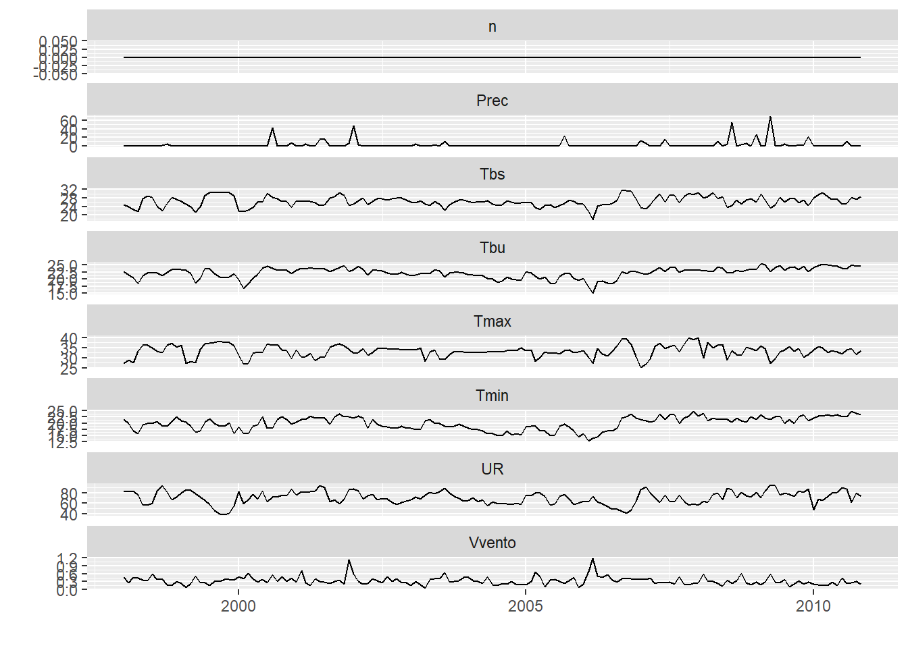
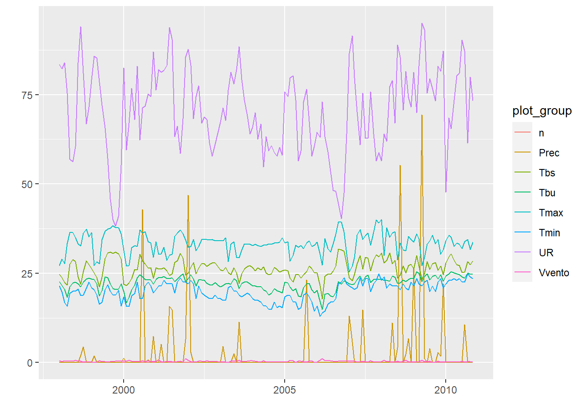
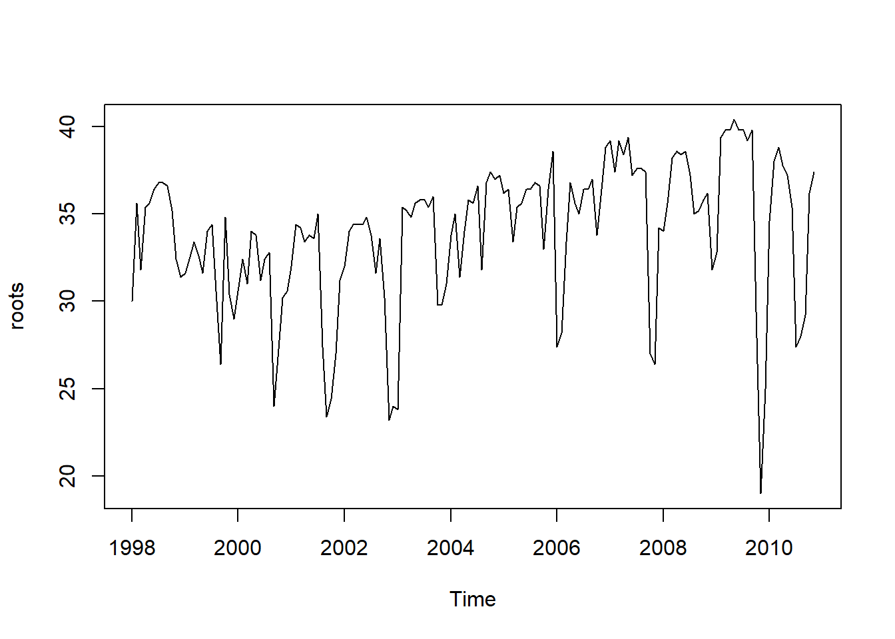
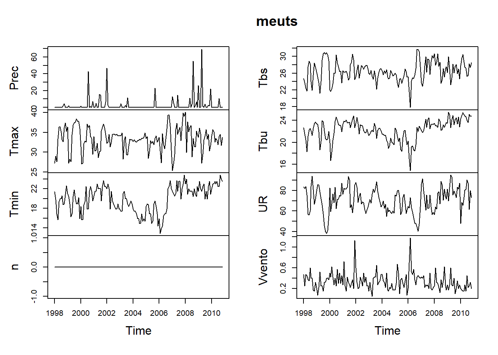
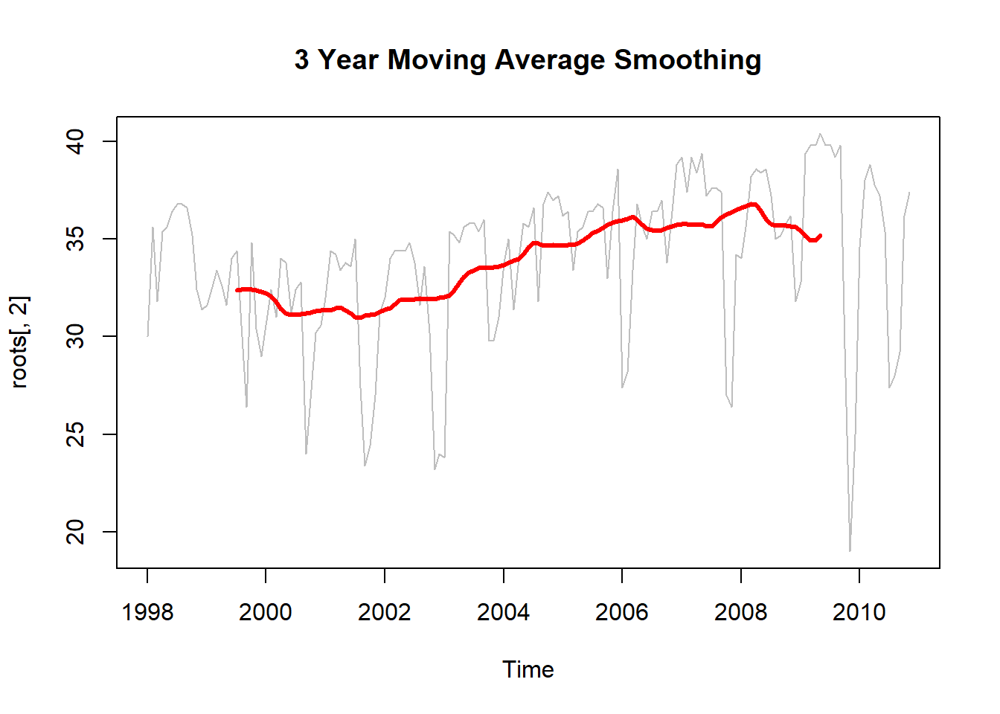

9 Dados climáticos
9.1 Precipitação pluvial
Tutorial do HydroTSM - http://goo.gl/9u1PO
Instalação
Carregar o pacote
## Loading required package: xts##
## Attaching package: 'xts'## The following objects are masked from 'package:dplyr':
##
## first, last##
## Attaching package: 'hydroTSM'## The following object is masked from 'package:tidyr':
##
## extractCarregando dados diários de Precipitação da estação de Rondonópolis-MT, com dados de 01 de janeiro de 1980 a 31 de dezembro de 2013
Selecionar somente 5 anos da serie
Valores de Precipitação mensal
## 2009-01-01 2009-02-01 2009-03-01 2009-04-01 2009-05-01 2009-06-01 2009-07-01
## 200.17 340.88 312.69 161.13 32.76 66.03 19.83
## 2009-08-01 2009-09-01 2009-10-01 2009-11-01 2009-12-01 2010-01-01 2010-02-01
## 77.99 131.10 127.09 258.52 344.81 339.07 365.16
## 2010-03-01 2010-04-01 2010-05-01 2010-06-01 2010-07-01 2010-08-01 2010-09-01
## 247.46 129.92 14.29 0.22 0.49 0.00 0.62
## 2010-10-01 2010-11-01 2010-12-01 2011-01-01 2011-02-01 2011-03-01 2011-04-01
## 143.24 181.52 206.55 418.55 419.73 537.55 146.77
## 2011-05-01 2011-06-01 2011-07-01 2011-08-01 2011-09-01 2011-10-01 2011-11-01
## 10.42 8.89 0.00 4.34 10.00 212.64 105.84
## 2011-12-01 2012-01-01 2012-02-01 2012-03-01 2012-04-01 2012-05-01 2012-06-01
## 348.87 437.63 256.04 248.56 169.66 115.69 135.74
## 2012-07-01 2012-08-01 2012-09-01 2012-10-01 2012-11-01 2012-12-01 2013-01-01
## 0.15 0.00 82.56 93.41 310.81 158.77 349.01
## 2013-02-01 2013-03-01 2013-04-01 2013-05-01 2013-06-01 2013-07-01 2013-08-01
## 325.68 287.80 135.50 44.85 37.29 19.11 0.00
## 2013-09-01 2013-10-01 2013-11-01 2013-12-01
## 61.70 82.57 151.95 222.90Datas dos valores diários de “x”
Quantidade de anos em ‘x’ (necessário para cálculos)
## [1] 5Análise exploratórios do dados
Resumo estatástico
## Index x
## Min. 2009-01-01 0.0000
## 1st Qu. 2010-04-02 0.0000
## Median 2011-07-02 0.5300
## Mean 2011-07-02 5.2860
## 3rd Qu. 2012-09-30 7.3950
## Max. 2013-12-31 63.3500
## IQR <NA> 7.3950
## sd <NA> 8.9907
## cv <NA> 1.7008
## Skewness <NA> 2.5413
## Kurtosis <NA> 7.6836
## NA's <NA> 0.0000
## n <NA> 1826.0000Usando a função hydroplot, que (por padrão) representa 9 gráficos diferentes: gráficos de 3 ts, 3 gráficos de caixa e 3 histogramas com um resumo “x”. Para este exemplo, somente plotagens diárias e mensais são produzidas e apenas os dados iniciados em 01 de janeiro de 2009 são plotados.

Quantidade de dias com informação (não NA) por ano
## 2009 2010 2011 2012 2013
## 365 365 365 366 365Quantidade de dias com informação (não NA) por mês por ano
## Jan Feb Mar Apr May Jun Jul Aug Sep Oct Nov Dec
## 2009 31 28 31 30 31 30 31 31 30 31 30 31
## 2010 31 28 31 30 31 30 31 31 30 31 30 31
## 2011 31 28 31 30 31 30 31 31 30 31 30 31
## 2012 31 29 31 30 31 30 31 31 30 31 30 31
## 2013 31 28 31 30 31 30 31 31 30 31 30 31Plotar os valores mensais de Precipitação para cada ano, para identificar meses secos / umidos.
# Daily zoo to monthly zoo
m <- daily2monthly(x, FUN=sum, na.rm=TRUE)
# Creating a matrix with monthly values per year in each column
M <- matrix(m, ncol=12, byrow=TRUE)
colnames(M) <- month.abb
rownames(M) <- unique(format(time(m), "%Y"))# Plotting the monthly precipitation values
require(lattice)
## Loading required package: lattice
print(matrixplot(M, ColorRamp="Precipitation",
main="Precipitação mensal de Rondonópolis-MT (mm/mês)"))
9.1.1 Análise anual dos dados
Valores anuais de Precipitação
## 2009-01-01 2010-01-01 2011-01-01 2012-01-01 2013-01-01
## 2073.00 1628.54 2223.60 2009.02 1718.36Precipitação Média anual
## [1] 1930.504Outra forma (mais útil para ‘streamflows’, onde FUN = mean): A função anual aplica FUN duas vezes sobre x:
- primeiramente, sobre todos os elementos de x pertencentes ao mesmo ano, para obter os correspondentes valores anuais, e
- em segundo lugar, acima de todos os valores anuais de x obtidos anteriormente, a fim de obter um único valor anual.
## value
## 1930.5049.1.2 Análise mensal dos dados - BOXPLOT
Mediana dos valores mensais na estação de Rondonópolis-MT.
## Jan Feb Mar Apr May Jun Jul Aug Sep Oct Nov
## 349.01 340.88 287.80 146.77 32.76 37.29 0.49 0.00 61.70 127.09 181.52
## Dec
## 222.90Vetor com as abreviaturas de três letras para os nomes dos meses
Criando fatores mensais ordenados
Boxplot dos valores mensais
boxplot( coredata(m) ~ months,
col="lightblue",
main="Precipitação mensal de Rondonpolis,MT",
ylab="Precipitação (mm)", xlab="Mensal")
9.1.3 Análise sazonal
Valores sazonais médios de Precipitação
## DJF MAM JJA SON
## 946.764 519.010 74.016 390.714Extraindo os valores sazonais para cada ano
Dezembro, Janeiro e Fevereiro
## 2009 2010 2011 2012 2013
## 541.05 1049.04 1044.83 1042.54 833.46Março, Abril e Maio
## 2009 2010 2011 2012 2013
## 506.58 391.67 694.74 533.91 468.15Junho, Julho e Agosto
## 2009 2010 2011 2012 2013
## 163.85 0.71 13.23 135.89 56.40Setembro, Outubro e Novembro
## 2009 2010 2011 2012 2013
## 516.71 325.38 328.48 486.78 296.22Plotar a evolução temporal dos valores da Precipitação sazonal
9.1.4 Alguns índices extremos
Etapas comuns para a análise desta serie:
Carregando dados diários de Precipitação da estação Rondonópolis-MT, com dados de 01/Jan/1980 a 31/Dez/2013.
## Warning in data(roo): data set 'roo' not foundSelecionar a data inicial
Plotar a série temporal selecionada

Contagem e plotagem do número de dias no período em que a Precipitação foi maior que 80 mm.
## [1] 49.1.5 Precipitaçao total chuva
Calculando a Precipitação total (acumulada) de 5 dias
x.5max <- rollapply(data=x, width=5, FUN=sum, fill=NA, partial= TRUE,
align="center")
hydroplot(x.5max, ptype="ts+boxplot", pfreq="o", var.unit="mm")## [Note: pfreq='o' => ptype has been changed to 'ts']
Valor anual máximo de Precipitação total em 5 dias
## 1980-01-01 1981-01-01 1982-01-01 1983-01-01 1984-01-01 1985-01-01 1986-01-01
## 160.54 90.51 85.49 132.81 120.78 141.33 99.98
## 1987-01-01 1988-01-01 1989-01-01 1990-01-01 1991-01-01 1992-01-01 1993-01-01
## 123.58 171.03 163.45 86.39 120.82 111.70 177.09
## 1994-01-01 1995-01-01 1996-01-01 1997-01-01 1998-01-01 1999-01-01 2000-01-01
## 121.09 158.35 149.88 167.91 135.63 122.16 98.53
## 2001-01-01 2002-01-01 2003-01-01 2004-01-01 2005-01-01 2006-01-01 2007-01-01
## 124.10 115.52 108.61 81.14 117.21 94.05 98.69
## 2008-01-01 2009-01-01 2010-01-01 2011-01-01 2012-01-01 2013-01-01
## 151.72 164.22 128.46 174.28 170.24 131.61Nota 1: para este cálculo, é utilizada uma janela móvel centrada no dia atual. Se o usuário quiser Precipitação total de 5 dias acumulada nos 4 dias anteriores ao dia atual + a Precipitação no corrente dia, o usuário tem que modificar a janela móvel.
Nota 2: Para os dois primeiros e os últimos dois valores, a largura da janela é adaptada para ignorar valores a série temporal
9.2 Evapotranspiração
A evapotranspiração é a forma pela qual a água da superfície terrestre passa para a atmosfera no estado de vapor, tendo papel importante no Ciclo Hidrológico. Esse processo envolve a evaporação da água de superfícies de água livre (rios, lagos, represas, oceano, etc), dos solos e da vegetação úmida (que foi interceptada durante uma chuva) e a transpiração dos vegetais
Apagar objetos antigos
Baixar dados
[a.txt] (https://www.dropbox.com/s/qixbu9tqnnfsuyt/a.txt?dl=0)
## Data Rs Tmax Tmin RHmax u2 RHmin
## 1 1980-01-01 18.51 31.1 21.8 82.00 2.000000 82.00
## 2 1980-01-02 9.65 26.5 21.8 91.50 1.000000 91.50
## 3 1980-01-03 13.70 29.9 21.0 86.00 1.000000 86.00
## 4 1980-01-04 13.86 30.3 22.0 82.75 1.666667 82.75
## 5 1980-01-05 9.66 25.1 21.6 90.97 1.070000 90.97
## 6 1980-01-06 16.10 31.2 20.8 80.67 1.380000 80.67Transformar em Data e Dia Juliano
Dia Juliano: calendário de dias corridos, trata-se de uma sequência de números inteiros uma para cada dia.
Verificar
## Data Rs Tmax Tmin RHmax u2 RHmin DiaJuliano
## 1 1980-01-01 18.51 31.1 21.8 82.00 2.000000 82.00 1
## 2 1980-01-02 9.65 26.5 21.8 91.50 1.000000 91.50 2
## 3 1980-01-03 13.70 29.9 21.0 86.00 1.000000 86.00 3
## 4 1980-01-04 13.86 30.3 22.0 82.75 1.666667 82.75 4
## 5 1980-01-05 9.66 25.1 21.6 90.97 1.070000 90.97 5
## 6 1980-01-06 16.10 31.2 20.8 80.67 1.380000 80.67 6Constantes utilizadas no calculo da ET.
Altura acima do nível do mar (m)
Pressão atmosférica local, calculada com base na altitude (kPa)
Coeficiente psicrométrico (kPa/ºC)
Latitude
Transformar em radianos
Declinação solar (rad)
Ângulo horário do nascer ao por do sol em (rad)
Número máximo de horas de luz solar em um dia (h)
Distância relativa da terra ao sol
Angulo de horário(Angulo da radiação do sol)
Radiação Solar Extraterrestre diária (mm/dia)
Verificar dados
## Data Rs Tmax Tmin RHmax u2 RHmin DiaJuliano N Qo
## 1 1980-01-01 18.51 31.1 21.8 82.00 2.000000 82.00 1 12.42742 38.08036
## 2 1980-01-02 9.65 26.5 21.8 91.50 1.000000 91.50 2 12.42559 36.92744
## 3 1980-01-03 13.70 29.9 21.0 86.00 1.000000 86.00 3 12.42363 36.20749
## 4 1980-01-04 13.86 30.3 22.0 82.75 1.666667 82.75 4 12.42153 36.57674
## 5 1980-01-05 9.66 25.1 21.6 90.97 1.070000 90.97 5 12.41929 37.71584
## 6 1980-01-06 16.10 31.2 20.8 80.67 1.380000 80.67 6 12.41691 38.61551coeficientes para climas médios
coeficientes para climas médios
Insolação (h)
## [1] 5.86766463 0.28139699 3.18975978 3.20299747 0.15215691 4.14553255
## [7] 5.60035036 5.06395663 7.18184567 2.09257628 0.53824724 0.64483607
## [13] 0.09397131 2.98306242 0.32106628 5.31197003 1.55169394 6.69674498
## [19] 10.16813689 4.16127733 10.54409264 9.24240792 3.41110542 5.80650115
## [25] 10.70381619 3.60636454 0.98119361 2.67209406 0.38143136 2.40521504
## [31] 0.53702168 3.75374177 0.07795675 4.45483117 1.44021931 0.28772836
## [37] 2.21671242 1.93485423 1.36729211 1.01774308 1.72033923 3.69529721
## [43] 4.14231118 1.67223428 0.15737776 0.20630007 5.52833622 0.34193989
## [49] 2.48012912 0.75247275 5.56125285 2.59193472 0.21090938 4.23009235
## [55] 7.76188966 3.90007633 -0.07825419 1.53604448 0.73062629 0.28627197
## [61] 3.74291244 0.93373793 6.37959798 4.52414664 0.32849030 1.14635463
## [67] 1.29131529 6.61890534 8.15047464 8.49811811 8.97091813 9.94053880
## [73] 9.44949986 10.98174653 7.13356426 7.41701734 1.54833193 4.07230851
## [79] 3.41619370 8.48249316 6.66760853 3.04373022 9.86407506 8.56286582
## [85] 4.32520887 9.76421082 10.03180647 9.03721092 3.70543300 9.18394511
## [91] 9.92391786 10.50703138 7.14183985 1.28389723 6.33318031 5.72306781
## [97] 7.30087096 0.13124950 1.20092477 4.16558620 9.61028738 7.67576890
## [103] 7.59496295 5.90212016 9.08590266 6.04905897 8.83996841 7.83990441
## [109] 9.65408987 10.10170546 10.31310431 7.13424894 3.22173587 5.56185216
## [115] 7.50816824 9.86266468 4.89610980 0.11336880 1.39687752 3.40063272
## [121] 4.87255758 8.66962106 9.52590567 8.83271541 3.66755934 5.03999524
## [127] 8.01288975 5.66111562 9.61699600 9.32391609 10.27015221 9.96814903
## [133] 9.50157897 9.75293994 9.37719921 6.86038459 6.73699676 6.72963430
## [139] 7.88250607 9.51965406 8.71589259 9.93849275 9.90901897 9.91558375
## [145] 7.42776604 6.51108973 8.77100750 6.81059617 10.06493288 10.49397618
## [151] 10.30962305 9.15275116 9.26531025 7.37018172 8.25292179 8.36140983
## [157] 9.07288604 8.80222833 8.78612455 9.27743393 9.95701271 6.09990897
## [163] 8.97363706 9.48858286 6.28684357 8.40138349 7.38485201 6.70157700
## [169] 9.08947709 9.77468308 8.76095370 7.98434983 8.46622506 6.65901306
## [175] 5.00749157 7.03847412 7.82785395 5.56887581 3.16221413 9.02821274
## [181] 9.73336958 10.46578828 6.65380168 4.59386522 8.36465402 9.71717569
## [187] 9.81209472 10.31912883 8.37033054 8.98482853 9.39074916 7.00793845
## [193] 10.04340692 10.40321950 7.51979368 9.35825878 8.31884070 8.51874409
## [199] 3.87039200 10.42642447 10.41549548 10.04726883 8.53360398 9.51449499
## [205] 8.45862032 6.84052568 10.46719939 10.04538037 8.69820236 8.50833848
## [211] 7.67529125 10.03994207 9.03896451 7.00616409 9.86652912 9.45004608
## [217] 9.12688892 9.88147530 10.36568410 10.51295681 6.73076163 6.35183982
## [223] 7.32452934 9.06882290 7.66328465 10.15378781 10.28542064 9.90383257
## [229] 9.83920510 9.35101802 9.39745443 6.29537190 8.93342087 8.06616460
## [235] 9.39395129 9.40282684 9.06737979 9.44152433 10.24252320 9.46122369
## [241] 8.41563522 9.33220222 10.10603023 9.41980487 10.47651291 9.95991830
## [247] 9.21215152 4.92074148 3.50477203 0.01497428 9.12472357 9.08954618
## [253] 7.94823180 10.15390649 10.01104322 8.86795144 10.75451387 11.01623044
## [259] 10.47037204 6.49787918 5.73297800 -0.17383864 7.93356817 9.05545292
## [265] 10.36697738 7.03342520 3.98239779 0.70491280 1.54087460 5.25489023
## [271] 0.18712705 2.38346030 7.52255206 7.39577177 5.62080813 10.16413562
## [277] 9.02223949 11.30647194 8.81929614 10.14960963 10.05633799 10.02817957
## [283] 9.46672028 10.67594128 7.61870809 2.33816206 -0.14322615 5.99203987
## [289] 0.19058306 3.28460358 8.13151398 1.44710799 3.77716617 8.87772468
## [295] 10.48289162 2.68521761 4.68611335 7.09412047 6.19895081 6.09308102
## [301] 8.70913498 11.85685826 2.27768644 6.72837917 0.35594482 1.58286295
## [307] 0.03345685 3.44852019 0.43307681 0.64789908 0.93504367 1.20648613
## [313] -0.01266910 5.11739394 6.61735866 0.50992101 7.66705580 2.21216257
## [319] 4.42960878 0.11544199 6.60639255 8.92100750 3.82313363 1.02554593
## [325] 8.51706070 10.40291579 4.95079409 7.91251366 4.06338538 3.46886581
## [331] 1.96149651 0.01682332 2.46924185 3.33296647 2.44961566 5.22646603
## [337] 8.19301484 8.77287654 0.95197678 7.38713104 10.74919683 8.51524732
## [343] 2.99462140 4.98927685 0.88014912 2.07615109 4.13163448 2.71136022
## [349] 2.24779638 3.60486122 3.70745035 0.20424064 1.11668432 0.78727216
## [355] 0.22948294 2.43078136 4.69146007 3.46890950 3.56860367 4.31694335
## [361] 3.03367449 0.30778199 3.51145603 2.18611115 5.57723917 0.51138680Importante quando se trabalha com datas e fatores, retorna um valor com a mesma forma
## Data Rs Tmax Tmin RHmax u2 RHmin DiaJuliano N Qo
## 1 1980-01-01 18.51 31.1 21.8 82.00 2.000000 82.00 1 12.42742 38.08036
## 2 1980-01-02 9.65 26.5 21.8 91.50 1.000000 91.50 2 12.42559 36.92744
## 3 1980-01-03 13.70 29.9 21.0 86.00 1.000000 86.00 3 12.42363 36.20749
## 4 1980-01-04 13.86 30.3 22.0 82.75 1.666667 82.75 4 12.42153 36.57674
## 5 1980-01-05 9.66 25.1 21.6 90.97 1.070000 90.97 5 12.41929 37.71584
## 6 1980-01-06 16.10 31.2 20.8 80.67 1.380000 80.67 6 12.41691 38.61551
## n
## 1 5.8676646
## 2 0.2813970
## 3 3.1897598
## 4 3.2029975
## 5 0.1521569
## 6 4.1455326Nebulosidade ou fração de luz (h)
## Data Rs Tmax Tmin RHmax u2 RHmin DiaJuliano N Qo
## 1 1980-01-01 18.51 31.1 21.8 82.00 2.000000 82.00 1 12.42742 38.08036
## 2 1980-01-02 9.65 26.5 21.8 91.50 1.000000 91.50 2 12.42559 36.92744
## 3 1980-01-03 13.70 29.9 21.0 86.00 1.000000 86.00 3 12.42363 36.20749
## 4 1980-01-04 13.86 30.3 22.0 82.75 1.666667 82.75 4 12.42153 36.57674
## 5 1980-01-05 9.66 25.1 21.6 90.97 1.070000 90.97 5 12.41929 37.71584
## 6 1980-01-06 16.10 31.2 20.8 80.67 1.380000 80.67 6 12.41691 38.61551
## n n.N
## 1 5.8676646 0.47215460
## 2 0.2813970 0.02264656
## 3 3.1897598 0.25674945
## 4 3.2029975 0.25785862
## 5 0.1521569 0.01225166
## 6 4.1455326 0.33386175Albedo, para solo gramado=0,23
Temperatura média do ar a 2 metros acima da superfície do solo (ºC)
## Data Rs Tmax Tmin RHmax u2 RHmin DiaJuliano N Qo
## 1 1980-01-01 18.51 31.1 21.8 82.00 2.000000 82.00 1 12.42742 38.08036
## 2 1980-01-02 9.65 26.5 21.8 91.50 1.000000 91.50 2 12.42559 36.92744
## 3 1980-01-03 13.70 29.9 21.0 86.00 1.000000 86.00 3 12.42363 36.20749
## 4 1980-01-04 13.86 30.3 22.0 82.75 1.666667 82.75 4 12.42153 36.57674
## 5 1980-01-05 9.66 25.1 21.6 90.97 1.070000 90.97 5 12.41929 37.71584
## 6 1980-01-06 16.10 31.2 20.8 80.67 1.380000 80.67 6 12.41691 38.61551
## n n.N Tmed
## 1 5.8676646 0.47215460 26.45
## 2 0.2813970 0.02264656 24.15
## 3 3.1897598 0.25674945 25.45
## 4 3.2029975 0.25785862 26.15
## 5 0.1521569 0.01225166 23.35
## 6 4.1455326 0.33386175 26.00Pressão de saturação de vapor máxima (kPa)
Pressão de saturação de vapor mínima (kPa)
Pressão de saturação de vapor média (kPa)
Pressão atual de vapor (kPa)
Déficit de vapor de pressão de saturação
É a declividade da curva de pressão de vapor em relação a temperatura (kPa/ºC)
Balanço de ondas curtas
Balanço de ondas longas
Saldo de radiação é superfície da cultura
Estimativa de ETo pelo método de Penman-Monteith-FAO
a$ETP.Penman = ((0.408*a$Delta*a$Rn)+(gama*(900/(a$Tmed+273))*a$u2*a$DPV))/(a$Delta+(gama*(1+0.34*a$u2)))
head(a)## Data Rs Tmax Tmin RHmax u2 RHmin DiaJuliano N Qo
## 1 1980-01-01 18.51 31.1 21.8 82.00 2.000000 82.00 1 12.42742 38.08036
## 2 1980-01-02 9.65 26.5 21.8 91.50 1.000000 91.50 2 12.42559 36.92744
## 3 1980-01-03 13.70 29.9 21.0 86.00 1.000000 86.00 3 12.42363 36.20749
## 4 1980-01-04 13.86 30.3 22.0 82.75 1.666667 82.75 4 12.42153 36.57674
## 5 1980-01-05 9.66 25.1 21.6 90.97 1.070000 90.97 5 12.41929 37.71584
## 6 1980-01-06 16.10 31.2 20.8 80.67 1.380000 80.67 6 12.41691 38.61551
## n n.N Tmed esMax esMin esMed ea DPV
## 1 5.8676646 0.47215460 26.45 4.528027 2.615043 3.571535 2.928659 0.6428764
## 2 0.2813970 0.02264656 24.15 3.467983 2.615043 3.041513 2.782985 0.2585286
## 3 3.1897598 0.25674945 25.45 4.227431 2.489813 3.358622 2.888415 0.4702071
## 4 3.2029975 0.25785862 26.15 4.325640 2.647198 3.486419 2.885012 0.6014073
## 5 0.1521569 0.01225166 23.35 3.191668 2.583231 2.887449 2.626713 0.2607367
## 6 4.1455326 0.33386175 26.00 4.553895 2.459337 3.506616 2.828787 0.6778290
## Delta BOC BOL Rn ETP.Penman
## 1 0.2103982 14.2527 -0.38272413 13.869976 4.507272
## 2 0.1823410 7.4305 -0.09021728 7.340283 2.212778
## 3 0.1993644 10.5490 -0.24209055 10.306909 3.244769
## 4 0.2058520 10.6722 -0.24544334 10.426757 3.480430
## 5 0.1741690 7.4382 -0.08745750 7.350742 2.194204
## 6 0.2072805 12.3970 -0.30213854 12.094861 3.979211Este método, além de procurar representar, de maneira consistente, o fenômeno biofísico da evapotranspiração, é alimentado por quase todos os elementos meteorológicos observados em estações meteorológicas de superfície.
Método de Priestley-Taylor
O método de Priestley-Taylor é uma simplificação das equações de Penman e de Penman-Monteith. Apresenta a vantagem de se exigir menos dados.
## Data Rs Tmax Tmin RHmax u2 RHmin DiaJuliano N Qo
## 1 1980-01-01 18.51 31.1 21.8 82.00 2.000000 82.00 1 12.42742 38.08036
## 2 1980-01-02 9.65 26.5 21.8 91.50 1.000000 91.50 2 12.42559 36.92744
## 3 1980-01-03 13.70 29.9 21.0 86.00 1.000000 86.00 3 12.42363 36.20749
## 4 1980-01-04 13.86 30.3 22.0 82.75 1.666667 82.75 4 12.42153 36.57674
## 5 1980-01-05 9.66 25.1 21.6 90.97 1.070000 90.97 5 12.41929 37.71584
## 6 1980-01-06 16.10 31.2 20.8 80.67 1.380000 80.67 6 12.41691 38.61551
## n n.N Tmed esMax esMin esMed ea DPV
## 1 5.8676646 0.47215460 26.45 4.528027 2.615043 3.571535 2.928659 0.6428764
## 2 0.2813970 0.02264656 24.15 3.467983 2.615043 3.041513 2.782985 0.2585286
## 3 3.1897598 0.25674945 25.45 4.227431 2.489813 3.358622 2.888415 0.4702071
## 4 3.2029975 0.25785862 26.15 4.325640 2.647198 3.486419 2.885012 0.6014073
## 5 0.1521569 0.01225166 23.35 3.191668 2.583231 2.887449 2.626713 0.2607367
## 6 4.1455326 0.33386175 26.00 4.553895 2.459337 3.506616 2.828787 0.6778290
## Delta BOC BOL Rn ETP.Penman W ETP.Priestley
## 1 0.2103982 14.2527 -0.38272413 13.869976 4.507272 0.7475 5.332015
## 2 0.1823410 7.4305 -0.09021728 7.340283 2.212778 0.7245 2.734989
## 3 0.1993644 10.5490 -0.24209055 10.306909 3.244769 0.7375 3.909264
## 4 0.2058520 10.6722 -0.24544334 10.426757 3.480430 0.7445 3.992256
## 5 0.1741690 7.4382 -0.08745750 7.350742 2.194204 0.7165 2.708644
## 6 0.2072805 12.3970 -0.30213854 12.094861 3.979211 0.7430 4.621619Gráficos correlacionando método de Penman-Monteith e Método de Priestley-Taylor
plot(a$ETP.Penman,a$ETP.Priestley,
xlim=c(1,8),
ylim=c(1,8),
abline(lm(a$ETP.Priestley~a$ETP.Penman),col="red"))
lines(c(0, 8), c(0, 8), col = "black")
Salvar os dados
Método Hargreaves-Samani (1985)

Método Carmago

Gráficos correlacionando Penman-Monteith com método Camargo, Hargreaves-Samani e Priestley-Taylor
par(mfrow=c(1,3))
{plot(a$ETP.Penman,a$ET_Ca,
xlim=c(2,8),
ylim=c(2,8))
plot(a$ETP.Penman,a$ET_HS,
xlim=c(2,8),
ylim=c(2,8))
plot(a$ETP.Penman,a$ETP.Priestley,
xlim=c(2,8),
ylim=c(2,8))}
## null device
## 1comparação numérica e gráfica de séries temporais simuladas e observadas, focadas principalmente na modelagem hidrológica.
## [1] 0.8372423Comparação gráfica entre dois vetores
## [ Note: You did not provide dates, so only a numeric index will be used in the time axis ]
9.2.1 Pacote Evapotranspiration
Apagar objetos antigos
Baixar Pacote Evapotranspiration
## Loading required package: Evapotranspirationbaixar dados
Transformar em Data
df$Data <- as.Date(df$Data)
climate <- lapply(as.list(df)[2:7], zoo, df$Data)
J <- as.numeric(format(df$Data, "%j"))
data <- c(list(Date.daily=df$Data, J=J), climate)Atribuindo nomes
## [1] "Date.daily" "J" "Rs" "Tmax" "Tmin"
## [6] "RHmax" "u2" "RHmin"Ver a estrutura do objeto com todas as variáveis da tabela de dados
## List of 8
## $ Date.daily: Date[1:366], format: "1980-01-01" "1980-01-02" ...
## $ J : num [1:366] 1 2 3 4 5 6 7 8 9 10 ...
## $ Rs :'zoo' series from 1980-01-01 to 1980-12-31
## Data: num [1:366] 18.51 9.65 13.7 13.86 9.66 ...
## Index: Date[1:366], format: "1980-01-01" "1980-01-02" ...
## $ Tmax :'zoo' series from 1980-01-01 to 1980-12-31
## Data: num [1:366] 31.1 26.5 29.9 30.3 25.1 31.2 31.6 31.5 31.3 29.6 ...
## Index: Date[1:366], format: "1980-01-01" "1980-01-02" ...
## $ Tmin :'zoo' series from 1980-01-01 to 1980-12-31
## Data: num [1:366] 21.8 21.8 21 22 21.6 20.8 22.3 21.4 23 22.1 ...
## Index: Date[1:366], format: "1980-01-01" "1980-01-02" ...
## $ RHmax :'zoo' series from 1980-01-01 to 1980-12-31
## Data: num [1:366] 82 91.5 86 82.8 91 ...
## Index: Date[1:366], format: "1980-01-01" "1980-01-02" ...
## $ u2 :'zoo' series from 1980-01-01 to 1980-12-31
## Data: num [1:366] 2 1 1 1.67 1.07 ...
## Index: Date[1:366], format: "1980-01-01" "1980-01-02" ...
## $ RHmin :'zoo' series from 1980-01-01 to 1980-12-31
## Data: num [1:366] 82 91.5 86 82.8 91 ...
## Index: Date[1:366], format: "1980-01-01" "1980-01-02" ...Converter latitude para radianos
## [1] -0.4092797Editar adequadamente as constantes a serem utilizadas. As constantes a serem utilizadas variam com o modelo escolhido, Ex:ET.PenmanMonteith e ET.PristleyTaylor.
Constantes dos modelos
Este conjunto de dados contém os dados climáticos brutos, incluindo as variáveis necessárias para o cálculo da evapotranspiração.
myConst <- list(lambda = 2.45, sigma = 4.903e-09, Gsc = 0.082,
lat = -23.45, lat_rad = -0.40928, as = 0.25,
bs = 0.55, Elev = 480, z = 2, Roua = 1.2,
Ca = 0.001013, G = 0,
alphaA = 0.14, alphaPT = 1.26,
ap = 2.4, fz = 28, b0 = 1,
a_0 = 11.9, b_0 = -0.15,
c_0 = -0.25, d_0 = -0.0107,
e0 = 0.81917,
e1 = -0.0040922, e2 = 1.0705, e3 = 0.065649,
e4 = -0.0059684,
e5 = -0.0005967, gammaps = 0.66,
epsilonMo = 0.92, PA = 285.8,
alphaMo = 17.27, betaMo = 237.3,
sigmaMo = 5.67e-08, lambdaMo = 28.5,
b1 = 14, b2 = 1.2)Métodos de estimativa de ETO
O método Penman-Monteith (FAO) é considerado, internacionalmente, o mais apropriado para a estimativa da ETo.
Penman-Monteith
## Penman-Monteith FAO56 Reference Crop ET## Evaporative surface: FAO-56 hypothetical short grass, albedo = 0.23 ; surface resistance = 70 sm^-1; crop height = 0.12 m; roughness height = 0.02 m## Solar radiation data have been used directly for calculating evapotranspiration## Wind data have been used for calculating the reference crop evapotranspiration## Timestep: daily## Units: mm## Time duration: 1980-01-01 to 1980-12-31## 366 ET estimates obtained## Basic stats## Mean: 3.91## Max: 6.72## Min: 1.93Constantes: Altitude, lambda-calor latente da vaporização, latitude em radianos, Gsc-constante solar, sigma-constante de Stefan-Boltzmann, fluxo de calor no solo.
- ts: Dados diários
- solar: data, indica que os dados da radiação solar devem ser utilizados diretamente para calcular a evapotranspiração
- wind: yes, indica que o cálculo utilizará dados reais da velocidade do vento
- crop: short, indica que o método para grama curta hipotética FAO-56 será aplicado
Priestley Taylor
## Priestley-Taylor Potential ET## Evaporative surface: user-defined, albedo = 0.23## Solar radiation data have been used directly for calculating evapotranspiration## Timestep: daily## Units: mm## Time duration: 1980-01-01 to 1980-12-31## 366 ET estimates obtained## Basic stats## Mean: 4.15## Max: 7## Min: 2.19## Romanenko Actual ET## Timestep: daily## Units: mm## Time duration: 1980-01-01 to 1980-12-31## 366 ET estimates obtained## Basic stats## Mean: 5.57## Max: 12.31## Min: 0.8## Hargreaves-Samani Reference Crop ET## Evaporative surface: reference crop## Timestep: daily## Units: mm## Time duration: 1980-01-01 to 1980-12-31## 366 ET estimates obtained## Basic stats## Mean: 4.45## Max: 7.44## Min: 2.74## Abtew Actual ET## Solar radiation data have been used directly for calculating evapotranspiration## Timestep: daily## Units: mm## Time duration: 1980-01-01 to 1980-12-31## 366 ET estimates obtained## Basic stats## Mean: 3.81## Max: 5.76## Min: 1.79## Brutsaert-Strickler Actual Areal ET## Evaporative surface: user-defined, albedo = 0.23## Solar radiation data have been used directly for calculating evapotranspiration## Timestep: daily## Units: mm## Time duration: 1980-01-01 to 1980-12-31## 366 ET estimates obtained## Basic stats## Mean: 3.99## Max: 7.88## Min: 1.1## Chapman Potential ET## Evaporative surface: user-defined, albedo = 0.23## Solar radiation data have been used for calculating evapotranspiration## PenPan formulation has been used to estimate Class-A pan evaporation for the calculation of potential evapotranspiration## Timestep: daily## Units: mm## Time duration: 1980-01-01 to 1980-12-31## 366 ET estimates obtained## Basic stats## Mean: 2.64## Max: 4.69## Min: 1.17## Granger-Gray Actual Areal ET## Evaporative surface: user-defined, albedo = 0.23## Solar radiation data have been used directly for calculating evapotranspiration## Wind data have been used for the calculation of the drying power of air, using Penman 1948 wind function.## Timestep: daily## Units: mm## Time duration: 1980-01-01 to 1980-12-31## 366 ET estimates obtained## Basic stats## Mean: 2.86## Max: 5.39## Min: 1.45## Jensen-Haise Potential ET## Solar radiation data have been used for calculating evapotranspiration## Timestep: daily## Units: mm## Time duration: 1980-01-01 to 1980-12-31## 366 ET estimates obtained## Basic stats## Mean: 5.48## Max: 9.01## Min: 2.42## Makkink Reference crop ET## Solar radiation data have been used directly for calculating evapotranspiration## Timestep: daily## Units: mm## Time duration: 1980-01-01 to 1980-12-31## 366 ET estimates obtained## Basic stats## Mean: 3.3## Max: 5.19## Min: 1.45## Matt-Shuttleworth Reference Crop ET## Evaporative surface: user-defined, albedo = 0.23 ; surface resistance = 70 sm^-1; crop height = 0.12 m## Solar radiation data have been used directly for calculating evapotranspiration## Timestep: daily## Units: mm## Time duration: 1980-01-01 to 1980-12-31## 366 ET estimates obtained## Basic stats## Mean: 3.07## Max: 5.18## Min: 1.62## McGuinness-Bordne Potential ET## Timestep: daily## Units: mm## Time duration: 1980-01-01 to 1980-12-31## 366 ET estimates obtained## Basic stats## Mean: 6.37## Max: 8.69## Min: 3.99res13 <- ET.PenPan(data, myConst, ts="daily",
solar="data", alpha=0.23,
est="potential ET", pan_coeff=0.71, overest= FALSE)## PenPan potential ET## Evaporative surface: user-defined, albedo = 0.23## Pan coeffcient: 0.71## Solar radiation data have been used directly for calculating evapotranspiration## Timestep: daily## Units: mm## Time duration: 1980-01-01 to 1980-12-31## 366 ET estimates obtained## Basic stats## Mean: 6.18## Max: 10.97## Min: 2.73res14 <- ET.Penman(data, myConst, ts="daily",
solar="data", wind="yes",
windfunction_ver = "1948", alpha = 0.08, z0 = 0.001)## Penman Open-water Evaporation## Evaporative surface: water, albedo = 0.08 ; roughness height = 0.001 m## Solar radiation data have been used directly for calculating evapotranspiration## Wind data have been used for calculating the Penman evaporation. Penman 1948 wind function has been used.## Timestep: daily## Units: mm## Time duration: 1980-01-01 to 1980-12-31## Basic stats## Mean: 5.27## Max: 8.69## Min: 2.58## Turc Reference Crop ET## Evaporative surface: reference crop## Solar radiation data have been used directly for calculating evapotranspiration## No adjustment for non-humid conditions has been applied to calculated Turc reference crop evapotranspiration## Timestep: daily## Units: mm## Time duration: 1980-01-01 to 1980-12-31## 366 ET estimates obtained## Basic stats## Mean: 3.99## Max: 6## Min: 2.05Tabela de Resultados
res <- cbind(PM=res1$ET.Daily,
PT=res2$ET.Daily, RM=res3$ET.Daily, HS=res4$ET.Daily,
AB=res5$ET.Daily, BS=res6$ET.Daily, CA=res7$ET.Daily, GG=res8$ET.Daily,
JH=res9$ET.Daily, MK=res10$ET.Daily, MS=res11$ET.Daily, MG=res12$ET.Daily,
PP=res13$ET.Daily, PN=res14$ET.Daily, Tu=res16$ET.Daily)## PM PT RM HS AB BS CA
## 1980-01-01 4.156318 4.929036 3.430645 5.082573 3.928653 5.277834 2.730982
## 1980-01-02 2.188232 2.745827 1.478422 5.141016 2.048163 3.129764 1.306937
## 1980-01-03 3.060989 3.741211 2.565564 4.972826 2.907755 4.165446 1.890737
## 1980-01-04 3.296640 3.807941 3.249473 5.083175 2.941714 4.000580 2.116993
## 1980-01-05 2.167625 2.712797 1.519894 4.957608 2.050286 3.071238 1.294748
## 1980-01-06 3.685204 4.314276 3.619968 5.056544 3.417143 4.597076 2.351236
## GG JH MK MS MG PP PN
## 1980-01-01 3.670318 5.562444 3.389243 3.522360 8.084051 6.381423 5.599644
## 1980-01-02 2.164547 2.673444 1.655891 2.054957 7.489878 3.053828 2.885753
## 1980-01-03 2.891066 3.977194 2.444971 2.807769 7.820466 4.418005 4.066475
## 1980-01-04 2.795805 4.122643 2.497964 2.764389 7.996387 4.946702 4.379952
## 1980-01-05 2.137567 2.597357 1.638069 2.018321 7.273783 3.025346 2.872788
## 1980-01-06 3.209531 4.764286 2.915389 3.177262 7.949163 5.494064 4.914844
## Tu
## 1980-01-01 4.081560
## 1980-01-02 2.248908
## 1980-01-03 3.084847
## 1980-01-04 3.147341
## 1980-01-05 2.221660
## 1980-01-06 3.581712Salvar Tabela com Evapotranspiração a partir de todos os métodos
Plotar a evapotranspiração estimada com variáveis climáticas
lm é usado para ajustar modelos lineares.Ele pode ser usado para realizar regressão e análise de covariância
##
## Call:
## lm(formula = res$PM ~ res$PT - 1)
##
## Residuals:
## Min 1Q Median 3Q Max
## -0.9230 -0.4409 -0.1374 0.4106 2.2943
##
## Coefficients:
## Estimate Std. Error t value Pr(>|t|)
## res$PT 0.939128 0.006854 137 <2e-16 ***
## ---
## Signif. codes: 0 '***' 0.001 '**' 0.01 '*' 0.05 '.' 0.1 ' ' 1
##
## Residual standard error: 0.5595 on 365 degrees of freedom
## Multiple R-squared: 0.9809, Adjusted R-squared: 0.9809
## F-statistic: 1.878e+04 on 1 and 365 DF, p-value: < 2.2e-16Apresenta Similaridade entre os métodos, análise significativa.

Comparar a evapotranspiração estimada entre vários conjuntos de resultados


9.3 Dados temporais no R
Vamos baixar os dados climáticos de Rondonópolis-MT
Podemos verificar o cabeçario do conjunto de dados
## dd mm ano Prec Tmax Tmin n Tbs Tbu UR Vvento
## 1 1 1 1998 NA 30.0 21.7 NA NA NA NA NA
## 2 1 2 1998 8.2 35.6 21.8 NA NA NA NA NA
## 3 2 2 1998 51.0 31.8 21.8 NA 25.075 23.85 89.75 0.125
## 4 3 2 1998 0.6 35.4 21.5 NA 24.975 23.00 86.50 0.125
## 5 4 2 1998 0.0 35.6 22.1 NA 26.650 23.90 80.00 0.275
## 6 5 2 1998 0.0 36.4 22.5 NA 26.950 24.00 78.50 0.325Baixando os pacotes necessários
Selecionando algumas colunas pelo nome com a função select
## ano Tmax
## 1 1998 30.0
## 2 1998 35.6
## 3 1998 31.8
## 4 1998 35.4
## 5 1998 35.6
## 6 1998 36.4Retirar colunas com a função select
## dd mm ano Prec Tmax Tmin n Tbs Tbu Vvento
## 1 1 1 1998 NA 30.0 21.7 NA NA NA NA
## 2 1 2 1998 8.2 35.6 21.8 NA NA NA NA
## 3 2 2 1998 51.0 31.8 21.8 NA 25.075 23.85 0.125
## 4 3 2 1998 0.6 35.4 21.5 NA 24.975 23.00 0.125
## 5 4 2 1998 0.0 35.6 22.1 NA 26.650 23.90 0.275
## 6 5 2 1998 0.0 36.4 22.5 NA 26.950 24.00 0.325Filtrar os dados com a função filter
Apresentar somente os dias com temperatura minima do ar menor que 20ºC
## dd mm ano Prec Tmax Tmin n Tbs Tbu UR Vvento
## 1 1 5 1998 0.0 31.2 16.0 NA NA NA NA NA
## 2 2 5 1998 0.0 32.4 16.8 NA 24.300 20.550 71.25 0.20000
## 3 3 5 1998 0.0 32.8 18.0 NA 25.250 21.350 70.00 0.22500
## 4 4 5 1998 14.8 24.0 17.2 NA 21.300 20.100 88.50 0.25000
## 5 5 5 1998 1.0 26.8 17.2 NA 20.275 19.450 92.25 0.17500
## 6 6 5 1998 0.0 30.2 17.4 NA 22.900 21.000 85.00 0.05000
## 7 7 5 1998 0.0 30.6 16.6 NA 23.900 20.550 73.75 0.22500
## 8 8 5 1998 0.0 32.0 15.6 NA 25.000 21.300 72.00 0.25000
## 9 9 5 1998 0.0 34.4 14.8 NA 24.900 21.550 75.50 0.17500
## 10 10 5 1998 0.0 34.2 17.0 NA 26.150 22.050 70.25 0.22500
## 11 11 5 1998 0.0 33.4 17.4 NA 26.000 21.750 70.25 0.25000
## 12 12 5 1998 0.0 33.8 16.2 NA 25.550 21.200 68.50 0.07500
## 13 13 5 1998 0.0 33.6 17.6 NA 25.850 22.500 74.75 0.12500
## 14 14 5 1998 0.0 35.0 19.7 NA 25.900 22.200 73.00 0.22500
## 15 16 5 1998 1.0 23.4 16.6 NA 20.425 18.750 84.25 0.30000
## 16 17 5 1998 0.0 24.4 11.8 NA 18.875 15.800 72.00 0.30000
## 17 18 5 1998 0.0 27.0 11.6 NA 18.325 15.200 71.75 0.20000
## 18 19 5 1998 0.0 31.2 13.2 NA 21.075 17.350 69.00 0.12500
## 19 20 5 1998 0.0 32.0 15.6 NA 23.950 20.450 74.25 0.17500
## 20 21 5 1998 0.0 34.0 16.8 NA 24.950 21.450 74.75 0.20000
## 21 22 5 1998 0.0 34.4 15.6 NA 30.200 20.650 42.75 0.22500
## 22 23 5 1998 0.0 34.4 14.0 NA 25.225 20.500 67.00 0.25000
## 23 24 5 1998 0.0 34.4 16.6 NA 25.400 20.875 67.75 0.12500
## 24 25 5 1998 0.0 34.8 16.6 NA 25.750 21.500 70.75 0.17500
## 25 26 5 1998 0.0 33.8 19.5 NA 25.500 21.550 70.25 0.17500
## 26 28 5 1998 0.0 33.6 18.1 NA 24.650 21.250 77.00 0.10000
## 27 29 5 1998 0.0 30.2 19.5 NA 24.750 22.850 85.00 0.12500
## 28 30 5 1998 4.3 23.2 17.0 NA 21.300 19.900 86.50 0.52500
## 29 31 5 1998 0.0 24.0 16.6 NA 19.575 18.550 90.50 0.22500
## 30 1 6 1998 NA 23.8 18.3 NA NA NA NA NA
## 31 1 7 1998 0.0 35.4 15.6 NA NA NA NA NA
## 32 2 7 1998 0.0 35.2 15.6 NA 25.050 19.350 60.00 0.35000
## 33 3 7 1998 0.0 34.8 14.0 NA 24.175 19.400 65.00 0.15000
## 34 4 7 1998 0.0 35.6 13.8 NA 24.825 18.600 54.75 0.22500
## 35 5 7 1998 0.0 35.8 14.4 NA 25.500 19.100 54.75 0.30000
## 36 6 7 1998 0.0 35.8 15.2 NA 26.400 19.350 52.50 0.27500
## 37 7 7 1998 0.0 35.4 15.4 NA 26.100 18.800 49.75 0.35000
## 38 8 7 1998 0.0 36.0 14.2 NA 24.900 18.400 53.75 0.22500
## 39 9 7 1998 0.0 29.8 16.4 NA 23.250 19.200 66.50 0.32500
## 40 10 7 1998 0.0 29.8 16.8 NA 21.225 17.950 73.25 0.35000
## 41 11 7 1998 0.0 31.0 12.4 NA 21.625 16.550 58.75 0.52500
## 42 12 7 1998 0.0 33.8 12.8 NA 21.125 16.450 64.75 0.22500
## 43 13 7 1998 0.0 35.0 15.6 NA 24.875 19.200 59.50 0.15000
## 44 14 7 1998 NA 31.4 17.0 NA 24.650 19.700 61.50 0.42500
## 45 15 7 1998 NA 34.0 15.4 NA 24.625 20.300 68.50 0.15000
## 46 16 7 1998 0.0 35.8 17.6 NA 25.600 20.850 67.75 0.27500
## 47 17 7 1998 0.0 35.6 15.6 NA 26.825 19.950 53.75 0.30000
## 48 18 7 1998 0.0 36.6 15.0 NA 26.950 18.850 44.75 0.42500
## 49 19 7 1998 0.0 31.8 15.0 NA 28.200 20.100 46.75 0.30000
## 50 20 7 1998 0.0 36.8 16.0 NA 27.500 19.000 44.75 0.10000
## 51 21 7 1998 0.0 37.4 15.8 NA 27.550 19.025 45.25 0.22500
## 52 22 7 1998 0.0 37.0 16.6 NA 26.100 19.550 56.25 0.20000
## 53 23 7 1998 0.0 37.2 19.7 NA 27.400 20.700 56.25 0.25000
## 54 24 7 1998 0.0 36.2 14.4 NA 26.850 18.550 44.75 0.20000
## 55 25 7 1998 0.0 36.4 14.2 NA 26.650 18.550 45.25 0.27500
## 56 26 7 1998 0.0 33.4 17.0 NA 25.525 19.350 56.50 0.37500
## 57 27 7 1998 0.0 35.4 14.8 NA 24.125 19.300 68.25 0.22500
## 58 28 7 1998 0.0 35.6 13.8 NA 25.875 18.300 47.75 0.25000
## 59 29 7 1998 0.0 36.4 14.4 NA 25.850 18.200 47.50 0.05000
## 60 30 7 1998 0.0 36.4 14.4 NA 26.350 18.300 45.75 0.30000
## 61 31 7 1998 0.0 36.8 13.8 NA 31.125 18.050 28.75 0.05000
## 62 1 8 1998 0.0 36.6 18.9 NA 26.800 18.850 45.25 0.30000
## 63 2 8 1998 0.0 33.0 17.0 NA 25.025 20.300 65.25 0.30000
## 64 3 8 1998 0.0 36.4 14.8 NA 25.850 19.800 59.00 0.12500
## 65 4 8 1998 0.0 38.6 19.3 NA 29.250 19.750 40.50 0.42500
## 66 5 8 1998 11.0 27.4 16.0 NA 22.550 18.300 68.75 0.27500
## 67 6 8 1998 0.0 28.2 15.2 NA 19.825 18.900 91.50 0.12500
## 68 7 8 1998 0.0 33.4 17.2 NA 25.050 21.900 77.50 0.20000
## 69 8 8 1998 0.0 36.8 19.7 NA 28.200 22.450 62.00 0.25000
## 70 15 8 1998 0.0 36.4 19.9 NA 26.800 23.600 79.00 0.20000
## 71 16 8 1998 0.0 38.8 19.9 NA 29.750 22.950 58.00 0.25000
## 72 17 8 1998 0.0 39.2 18.1 NA 28.800 21.250 53.50 0.20000
## 73 18 8 1998 0.0 37.4 19.5 NA 28.100 20.350 48.50 0.17500
## 74 19 8 1998 0.0 39.2 19.9 NA 28.550 21.350 53.50 0.12500
## 75 20 8 1998 0.0 38.4 19.3 NA 28.450 20.300 48.50 0.15000
## 76 21 8 1998 0.0 39.4 15.6 NA 29.400 21.100 49.75 0.22500
## 77 22 8 1998 0.0 37.2 19.9 NA 28.450 20.450 50.00 0.35000
## 78 23 8 1998 0.0 37.6 16.4 NA 26.850 20.800 63.25 0.25000
## 79 24 8 1998 NA 37.6 15.4 NA 26.975 17.700 41.00 0.20000
## 80 25 8 1998 0.0 37.4 15.6 NA 27.625 17.350 35.50 0.25000
## 81 26 8 1998 0.0 27.0 18.0 NA 23.075 18.700 65.50 0.27500
## 82 27 8 1998 0.0 26.4 16.0 NA 19.825 17.200 76.75 0.45000
## 83 28 8 1998 0.0 34.2 13.8 NA 22.325 18.250 69.25 0.25000
## 84 29 8 1998 0.0 34.0 15.6 NA 24.650 19.400 59.75 0.30000
## 85 30 8 1998 0.0 35.6 15.6 NA 26.100 19.350 52.50 0.37500
## 86 31 8 1998 NA 38.2 16.6 NA 26.900 19.400 49.75 0.32500
## 87 1 9 1998 0.0 38.6 19.9 NA 29.700 20.650 43.25 0.40000
## 88 2 9 1998 0.0 38.4 19.3 NA 28.950 20.150 44.25 0.27500
## 89 3 9 1998 0.0 38.6 17.2 NA 28.400 19.600 43.50 0.30000
## 90 4 9 1998 0.0 37.2 19.3 NA 29.150 20.050 40.50 0.27500
## 91 9 9 1998 6.0 31.8 18.9 NA 23.025 20.800 83.75 0.32500
## 92 11 9 1998 0.0 39.4 18.3 NA 27.550 21.650 62.25 0.22500
## 93 19 9 1998 1.6 29.4 14.2 NA 24.675 19.500 60.50 0.35000
## 94 20 9 1998 0.0 19.0 13.6 NA 15.400 14.250 87.25 0.57500
## 95 21 9 1998 0.0 25.0 14.4 NA 18.025 15.400 75.00 0.45000
## 96 22 9 1998 0.0 34.6 13.6 NA 22.900 17.050 55.75 0.22500
## 97 23 9 1998 0.0 38.0 15.4 NA 26.950 19.050 47.00 0.27500
## 98 24 9 1998 0.0 38.8 18.9 NA 30.350 21.300 43.00 0.32500
## 99 27 9 1998 7.0 35.4 19.4 NA 24.400 22.500 84.75 0.15000
## 100 28 9 1998 31.0 27.4 19.0 NA 24.100 22.800 89.00 0.37500
## 101 29 9 1998 5.0 28.0 19.1 NA 21.750 21.300 95.00 0.22500
## 102 1 10 1998 NA 36.2 18.9 NA 26.050 22.900 78.75 0.35000
## 103 2 10 1998 0.0 37.4 19.7 NA 27.500 22.200 63.50 0.27500
## 104 12 10 1998 37.6 29.4 19.1 NA 23.125 21.500 86.25 0.35000
## 105 13 10 1998 6.8 32.4 19.3 NA 23.450 22.250 90.00 0.20000
## 106 18 10 1998 0.0 34.6 17.2 NA 25.750 20.800 63.75 0.27500
## 107 19 10 1998 0.0 35.6 18.5 NA 27.250 21.900 62.25 0.22500
## 108 20 10 1998 0.0 37.2 19.3 NA 28.550 21.900 55.00 0.30000
## 109 28 10 1998 75.0 29.0 19.7 NA 25.500 23.900 86.50 0.17500
## 110 13 12 1998 10.0 33.4 19.8 NA 26.450 24.300 83.75 0.27500
## 111 24 12 1998 12.8 32.0 19.6 NA 24.900 23.400 88.25 0.27500
## 112 25 12 1998 0.0 34.0 19.7 NA 24.700 23.300 89.25 0.15000
## 113 30 12 1998 17.5 32.6 19.5 NA 23.900 23.100 93.00 0.10000
## 114 31 12 1998 0.0 33.6 18.4 NA 25.300 23.900 88.25 0.12500
## 115 1 1 1999 12.0 33.8 17.9 NA 26.150 24.700 89.75 2.50000
## 116 2 1 1999 0.0 31.8 17.4 NA 26.800 24.600 84.50 0.20000
## 117 3 1 1999 16.7 28.4 18.7 NA 24.000 23.700 97.50 0.10000
## 118 4 1 1999 16.4 32.4 18.7 NA 24.350 23.300 91.00 0.10000
## 119 15 1 1999 50.0 25.8 18.1 NA 24.050 23.850 97.00 0.10000
## 120 16 1 1999 103.0 28.4 16.4 NA 23.450 23.750 100.00 0.00000
## 121 31 1 1999 105.4 32.0 19.0 NA 24.900 24.200 94.00 0.22500
## 122 2 4 1999 0.0 35.2 18.5 NA 27.400 23.600 72.75 0.10000
## 123 7 4 1999 0.0 35.8 19.3 NA 26.350 23.100 77.00 0.05000
## 124 13 4 1999 7.5 32.8 19.7 NA 24.200 22.900 89.25 0.00000
## 125 14 4 1999 NA 34.4 19.9 NA 24.700 23.200 88.75 0.05000
## 126 15 4 1999 0.0 34.2 19.8 NA 25.000 23.300 86.00 0.30000
## 127 16 4 1999 13.0 32.6 18.0 NA 24.150 23.200 92.00 0.22500
## 128 17 4 1999 0.0 23.4 12.8 NA 18.525 16.100 78.25 0.37500
## 129 18 4 1999 0.0 26.2 10.1 NA 17.175 13.350 64.75 0.40000
## 130 19 4 1999 0.0 30.6 10.4 NA 19.375 15.150 64.00 0.35000
## 131 20 4 1999 0.0 32.4 14.2 NA 22.425 18.050 65.00 0.22500
## 132 21 4 1999 0.0 35.8 13.2 NA 25.050 21.150 71.50 0.15000
## 133 22 4 1999 0.0 35.6 19.3 NA 27.100 23.250 73.75 0.20000
## 134 24 4 1999 0.0 35.0 19.5 NA 27.500 23.250 69.50 0.15000
## 135 25 4 1999 0.0 35.2 17.0 NA 25.800 21.650 70.75 0.27500
## 136 26 4 1999 0.0 35.6 19.1 NA 26.350 22.500 72.75 0.05000
## 137 27 4 1999 0.0 31.6 19.9 NA 25.650 22.450 75.50 0.15000
## 138 28 4 1999 0.0 33.4 19.1 NA 25.000 22.000 78.00 0.25000
## 139 29 4 1999 0.0 34.0 18.1 NA 26.050 22.050 71.75 0.10000
## 140 30 4 1999 0.0 34.6 17.4 NA 24.450 21.450 80.00 0.00000
## 141 1 5 1999 0.0 35.0 18.3 NA 26.150 21.750 69.25 0.05000
## 142 2 5 1999 0.0 34.8 19.1 NA 26.750 22.150 67.75 0.20000
## 143 3 5 1999 0.0 35.0 16.8 NA 25.950 21.850 72.25 0.12500
## 144 4 5 1999 0.0 34.4 17.0 NA 25.350 21.750 73.25 0.17500
## 145 5 5 1999 0.0 35.6 18.1 NA 26.250 22.750 76.00 0.37500
## 146 6 5 1999 0.0 36.0 19.7 NA 26.200 22.950 75.50 0.07500
## 147 8 5 1999 0.0 30.6 16.8 NA 22.500 21.100 88.25 0.10000
## 148 9 5 1999 0.0 31.2 14.2 NA 23.450 19.650 70.25 0.22500
## 149 10 5 1999 0.0 34.0 14.4 NA 22.975 19.950 78.25 0.15000
## 150 11 5 1999 0.0 32.8 14.6 NA 24.950 21.350 71.50 0.15000
## 151 12 5 1999 0.0 33.0 16.0 NA 27.400 23.350 70.75 0.17500
## 152 13 5 1999 0.0 33.2 16.0 NA 24.900 19.700 61.25 0.07500
## 153 14 5 1999 0.0 32.4 14.6 NA 23.425 19.150 67.75 0.15000
## 154 15 5 1999 0.0 31.0 18.9 NA 23.500 19.200 66.50 0.37500
## 155 16 5 1999 0.0 32.6 13.8 NA 23.075 18.750 66.75 0.27500
## 156 17 5 1999 0.0 33.0 14.2 NA 22.625 18.500 68.00 0.22500
## 157 18 5 1999 0.0 33.2 13.2 NA 23.900 18.375 59.25 0.30000
## 158 19 5 1999 0.0 32.8 13.6 NA 23.475 18.950 66.00 0.15000
## 159 20 5 1999 0.0 29.6 15.2 NA 24.000 18.850 61.00 0.30000
## 160 21 5 1999 0.0 28.4 10.6 NA 19.275 15.400 66.75 0.20000
## 161 22 5 1999 0.0 29.2 7.4 NA 18.125 13.150 57.00 0.30000
## 162 23 5 1999 0.0 30.2 8.2 NA 19.425 14.750 61.75 0.17500
## 163 24 5 1999 0.0 30.2 10.2 NA 20.725 16.100 65.25 0.17500
## 164 25 5 1999 0.0 34.0 12.6 NA 21.675 17.050 65.25 0.12500
## 165 26 5 1999 0.0 31.6 13.2 NA 23.125 19.500 72.00 0.20000
## 166 27 5 1999 0.0 33.4 18.1 NA 25.650 21.750 70.75 0.15000
## 167 28 5 1999 0.0 34.2 17.0 NA 25.400 21.750 74.75 0.12500
## 168 29 5 1999 0.0 35.6 16.4 NA 26.850 21.900 65.50 0.25000
## 169 30 5 1999 0.0 26.2 12.2 NA 23.200 20.600 77.50 0.25000
## 170 31 5 1999 0.0 27.6 9.6 NA 18.575 14.650 65.50 0.37500
## 171 1 6 1999 0.0 30.4 6.0 NA 17.425 13.550 66.50 0.12500
## 172 2 6 1999 0.0 31.8 10.2 NA 21.125 16.700 65.50 0.20000
## 173 3 6 1999 0.0 30.8 11.8 NA 21.725 17.850 68.25 0.05000
## 174 4 6 1999 0.0 34.0 15.0 NA 24.475 20.825 70.25 0.12500
## 175 5 6 1999 0.0 33.2 16.0 NA 24.175 18.950 61.00 0.22500
## 176 6 6 1999 0.0 31.2 15.6 NA 23.825 19.550 66.50 0.22500
## 177 7 6 1999 0.0 32.4 14.0 NA 22.325 18.750 72.50 0.22500
## 178 8 6 1999 0.0 34.0 15.6 NA 24.300 19.850 67.50 0.10000
## 179 9 6 1999 0.0 34.0 14.8 NA 24.425 19.650 66.75 0.07500
## 180 10 6 1999 0.0 29.0 17.4 NA 23.750 19.350 65.75 0.12500
## 181 11 6 1999 0.0 31.4 13.4 NA 20.625 18.550 82.75 0.17500
## 182 12 6 1999 0.0 33.8 14.8 NA 24.175 20.950 78.25 0.15000
## 183 13 6 1999 0.0 33.4 17.0 NA 25.000 21.875 74.75 0.00000
## 184 14 6 1999 0.0 33.8 16.8 NA 24.850 20.800 71.25 0.15000
## 185 15 6 1999 0.0 34.8 17.2 NA 25.250 21.200 70.75 0.15000
## 186 16 6 1999 0.0 34.8 17.9 NA 25.500 21.250 71.50 0.10000
## 187 17 6 1999 0.0 35.0 14.8 NA 24.475 19.650 66.75 0.17500
## 188 18 6 1999 0.0 34.4 14.6 NA 25.550 19.550 57.00 0.15000
## 189 19 6 1999 NA 29.4 17.6 NA 23.375 19.850 70.75 0.12500
## 190 20 6 1999 0.0 28.0 16.6 NA 21.325 18.000 71.00 0.47500
## 191 21 6 1999 0.0 31.4 15.2 NA 22.625 19.350 74.25 0.20000
## 192 22 6 1999 0.0 34.4 16.0 NA 24.700 20.700 71.25 0.05000
## 193 23 6 1999 0.0 35.4 16.8 NA 25.500 20.650 65.50 0.20000
## 194 24 6 1999 0.0 35.8 17.3 NA 25.950 20.950 66.00 0.15000
## 195 25 6 1999 0.0 35.6 16.7 NA 26.175 20.400 60.25 0.22500
## 196 26 6 1999 0.0 35.0 16.9 NA 26.125 19.650 57.00 0.17500
## 197 27 6 1999 0.0 35.0 13.9 NA 25.850 18.800 51.25 0.25000
## 198 28 6 1999 0.0 35.8 15.7 NA 24.725 19.000 59.50 0.22500
## 199 29 6 1999 1.4 26.4 19.2 NA 24.150 21.400 76.50 0.10000
## 200 30 6 1999 0.0 32.4 19.4 NA 23.850 21.600 82.50 0.27500
## 201 1 7 1999 0.0 33.6 17.7 NA 25.250 21.800 76.25 0.22500
## 202 2 7 1999 0.0 34.4 17.1 NA 25.850 20.700 64.75 0.17500
## 203 3 7 1999 0.0 35.6 16.9 NA 26.450 19.650 52.75 0.12500
## 204 4 7 1999 0.0 24.7 15.6 NA 22.825 18.600 64.75 0.40000
## 205 5 7 1999 0.0 19.6 13.5 NA 16.050 14.750 85.75 0.57500
## 206 6 7 1999 0.0 24.8 13.1 NA 17.325 15.150 78.75 0.40000
## 207 7 7 1999 0.0 32.0 12.9 NA 19.825 18.550 88.50 0.15000
## 208 8 7 1999 0.0 33.2 15.7 NA 23.925 19.500 67.50 0.12500
## 209 9 7 1999 0.0 34.4 14.1 NA 24.275 18.450 58.00 0.17500
## 210 10 7 1999 0.0 35.0 14.9 NA 26.450 18.850 48.00 0.15000
## 211 11 7 1999 0.0 35.0 14.7 NA 24.800 19.300 58.00 0.12500
## 212 12 7 1999 0.0 34.4 14.7 NA 27.000 19.500 47.75 0.17500
## 213 13 7 1999 0.0 33.4 15.7 NA 25.800 18.100 46.50 0.20000
## 214 14 7 1999 0.0 33.2 14.7 NA 24.525 17.700 51.75 0.22500
## 215 15 7 1999 0.0 33.6 13.1 NA 24.075 17.000 48.25 0.02500
## 216 16 7 1999 0.0 34.2 11.9 NA 23.275 16.600 52.00 0.10000
## 217 17 7 1999 0.0 25.4 16.1 NA 21.975 17.450 62.00 0.27500
## 218 18 7 1999 0.0 28.8 13.3 NA 19.425 17.050 79.00 0.42500
## 219 19 7 1999 0.0 34.4 14.5 NA 21.975 18.000 71.50 0.32500
## 220 20 7 1999 0.0 34.8 16.1 NA 24.675 19.000 59.50 0.25000
## 221 21 7 1999 0.0 34.8 15.7 NA 25.225 19.850 62.00 0.32500
## 222 22 7 1999 0.0 34.2 17.9 NA 26.000 20.650 61.75 0.32500
## 223 23 7 1999 0.0 35.0 15.9 NA 25.325 19.950 63.00 0.22500
## 224 24 7 1999 0.0 35.2 17.3 NA 26.050 20.050 59.00 0.25000
## 225 25 7 1999 0.0 35.2 15.1 NA 25.800 18.350 49.50 0.17500
## 226 26 7 1999 0.0 35.8 15.3 NA 27.075 18.350 43.25 0.32500
## 227 27 7 1999 0.0 36.0 15.7 NA 27.900 19.100 42.50 0.20000
## 228 28 7 1999 0.0 36.0 14.9 NA 26.375 18.450 47.00 0.22500
## 229 29 7 1999 0.0 36.0 14.1 NA 27.350 18.500 42.00 0.17500
## 230 30 7 1999 NA 35.2 15.1 NA 24.025 18.000 55.75 0.22500
## 231 31 7 1999 0.0 34.6 17.3 NA 25.375 18.950 55.50 0.25000
## 232 1 8 1999 0.0 35.4 16.9 NA 26.900 19.450 50.50 0.17500
## 233 2 8 1999 0.0 34.6 15.5 NA 26.350 18.150 43.00 0.07500
## 234 3 8 1999 0.0 34.8 13.9 NA 26.075 18.000 44.75 0.20000
## 235 4 8 1999 0.0 35.4 14.1 NA 25.375 17.350 44.25 0.07500
## 236 5 8 1999 0.0 36.0 15.3 NA 25.875 17.250 41.00 0.12500
## 237 6 8 1999 0.0 35.2 15.3 NA 26.950 17.050 35.00 0.50000
## 238 7 8 1999 0.0 35.4 15.3 NA 26.050 18.250 45.25 0.10000
## 239 8 8 1999 0.0 32.6 16.7 NA 23.425 18.400 60.50 0.15000
## 240 9 8 1999 0.0 35.2 15.3 NA 25.175 18.000 48.25 0.30000
## 241 10 8 1999 0.0 36.2 15.7 NA 27.125 18.550 44.75 0.15000
## 242 11 8 1999 NA 37.2 15.0 NA 26.175 18.050 46.00 0.07500
## 243 12 8 1999 0.0 32.8 14.9 NA 32.575 18.100 NA 0.05000
## 244 13 8 1999 0.0 36.0 15.7 NA 27.075 18.950 46.25 0.15000
## 245 14 8 1999 0.0 33.4 13.5 NA 20.625 16.600 64.75 0.50000
## 246 15 8 1999 0.0 24.3 7.9 NA 21.025 13.600 38.50 NA
## 247 16 8 1999 NA 24.3 9.7 NA 15.425 12.075 65.00 0.47500
## 248 1 9 1999 0.0 38.6 17.5 NA 29.925 22.850 52.75 0.25000
## 249 2 9 1999 0.0 38.4 15.3 NA 29.650 19.300 35.50 0.12500
## 250 3 9 1999 0.0 38.4 17.9 NA 28.900 20.825 45.00 0.05000
## 251 4 9 1999 0.0 38.2 18.9 NA 29.250 20.350 42.50 0.15000
## 252 5 9 1999 0.0 39.8 19.4 NA 30.050 22.775 52.25 0.27500
## 253 6 9 1999 0.0 37.6 19.6 NA 29.950 22.525 51.25 0.07500
## 254 15 9 1999 10.8 26.0 19.8 NA 22.100 21.200 91.25 0.35000
## 255 16 9 1999 0.0 31.8 18.9 NA 24.050 21.750 82.50 0.10000
## 256 25 9 1999 0.0 36.2 17.9 NA 29.450 22.900 58.00 0.45000
## 257 3 10 1999 0.0 27.4 17.1 NA 23.975 19.150 62.00 0.95000
## 258 4 10 1999 0.0 31.6 18.3 NA 23.550 18.750 62.25 0.75000
## 259 3 11 1999 3.8 29.2 19.2 NA 23.600 23.900 100.00 0.25000
## 260 4 11 1999 2.9 30.0 19.4 NA 23.900 23.450 94.50 0.52500
## 261 6 11 1999 0.0 30.0 19.6 NA 22.650 19.800 78.25 0.37500
## 262 9 11 1999 0.9 28.6 17.6 NA 22.050 21.600 95.00 0.27500
## 263 10 11 1999 0.0 25.9 17.1 NA 20.725 20.050 91.50 0.57500
## 264 22 11 1999 0.0 36.0 19.6 NA 25.700 22.000 75.00 0.32500
## 265 23 11 1999 0.2 34.8 19.8 NA 26.800 22.300 68.75 0.50000
## 266 2 12 1999 0.0 35.8 18.8 NA 31.950 24.550 53.25 0.27500
## 267 26 12 1999 2.2 31.2 19.8 NA 24.200 22.100 83.75 0.65000
## 268 9 2 2000 2.5 26.9 16.2 NA 23.700 23.350 96.00 0.32500
## 269 10 2 2000 2.4 29.8 16.3 NA 24.350 24.100 97.25 0.27500
## 270 21 4 2000 0.0 30.6 17.9 NA 23.900 21.450 80.50 0.30000
## 271 22 4 2000 0.0 31.6 15.9 NA 23.775 20.400 74.00 0.37500
## 272 23 4 2000 0.0 31.0 12.9 NA 22.500 19.100 72.00 0.42500
## 273 24 4 2000 0.0 32.8 15.9 NA 25.925 21.600 69.25 0.30000
## 274 25 4 2000 0.0 32.4 17.9 NA 26.050 22.350 72.25 0.25000
## 275 26 4 2000 0.0 33.8 19.4 NA 26.300 23.350 77.00 0.22500
## 276 27 4 2000 1.0 32.0 19.4 NA 26.000 23.000 78.50 0.25000
## 277 30 4 2000 NA 32.0 19.6 NA 24.150 21.975 84.00 0.17500
## 278 1 5 2000 0.0 33.2 18.7 NA 26.650 23.200 75.25 0.22500
## 279 2 5 2000 0.0 33.2 19.4 NA 27.600 23.350 70.50 0.32500
## 280 6 5 2000 0.0 27.4 18.8 NA 23.750 22.050 86.00 0.25000
## 281 7 5 2000 0.0 29.2 18.9 NA 21.600 19.950 85.75 0.27500
## 282 8 5 2000 NA 31.4 18.7 NA 23.200 21.600 87.25 0.15000
## 283 9 5 2000 0.0 31.8 18.7 NA 25.250 22.650 81.00 0.20000
## 284 10 5 2000 0.0 33.8 19.8 NA 25.500 22.850 81.75 0.07500
## 285 12 5 2000 0.0 33.6 18.3 NA 25.400 21.750 74.75 NA
## 286 13 5 2000 0.0 33.0 17.3 NA 25.250 21.700 74.75 0.32500
## 287 14 5 2000 0.0 33.4 17.5 NA 24.850 21.250 74.75 0.20000
## 288 15 5 2000 0.0 33.8 16.7 NA 25.050 20.950 70.50 0.45000
## 289 16 5 2000 0.0 33.8 16.3 NA 24.450 20.650 72.75 0.30000
## 290 17 5 2000 5.0 28.7 18.4 NA 23.000 21.150 84.75 0.27500
## 291 18 5 2000 0.0 26.0 15.5 NA 23.050 20.600 79.75 0.55000
## 292 19 5 2000 0.0 26.2 13.5 NA 19.425 16.850 78.50 0.32500
## 293 20 5 2000 0.0 26.8 13.9 NA 19.275 17.050 80.75 0.25000
## 294 21 5 2000 0.0 31.0 14.7 NA 21.375 18.250 75.50 0.35000
## 295 22 5 2000 0.0 26.8 15.7 NA 23.550 20.050 73.00 0.30000
## 296 23 5 2000 0.0 33.8 16.5 NA 23.100 19.350 72.25 0.27500
## 297 24 5 2000 0.0 33.0 15.7 NA 25.150 20.500 68.00 0.30000
## 298 25 5 2000 0.0 34.0 16.1 NA 24.950 21.250 74.00 0.25000
## 299 26 5 2000 0.0 34.0 17.7 NA 26.750 22.550 70.00 0.32500
## 300 27 5 2000 0.0 34.2 16.9 NA 26.100 22.400 74.25 0.15000
## 301 28 5 2000 0.0 34.4 18.1 NA 25.950 22.100 72.75 0.17500
## 302 29 5 2000 0.0 33.8 17.7 NA 25.950 22.300 73.75 0.25000
## 303 30 5 2000 0.0 33.8 18.3 NA 26.600 22.550 73.00 0.15000
## 304 31 5 2000 0.0 33.8 17.1 NA 25.250 20.800 68.50 0.30000
## 305 1 6 2000 0.0 31.8 19.4 NA 23.950 20.850 77.00 NA
## 306 2 6 2000 0.0 31.8 19.4 NA 23.825 21.150 80.50 NA
## 307 3 6 2000 0.0 33.2 16.3 NA 25.850 21.100 79.00 0.17500
## 308 4 6 2000 0.0 34.8 18.3 NA 26.200 22.100 70.00 0.22500
## 309 5 6 2000 0.0 33.8 16.5 NA 26.650 20.400 56.00 0.27500
## 310 6 6 2000 0.0 33.4 15.5 NA 26.550 20.850 58.00 0.45000
## 311 7 6 2000 0.0 33.2 14.5 NA 24.325 19.700 67.50 0.35000
## 312 8 6 2000 0.0 33.2 15.5 NA 24.125 19.650 68.25 0.15000
## 313 9 6 2000 0.0 32.8 14.3 NA 25.500 20.400 64.50 0.27500
## 314 10 6 2000 0.0 33.4 13.9 NA 26.775 20.400 57.75 0.22500
## 315 11 6 2000 0.0 33.2 14.5 NA NA NA NA NA
## 316 13 6 2000 0.0 34.0 13.5 NA NA NA NA NA
## 317 14 6 2000 NA 34.1 19.2 NA NA NA NA NA
## 318 15 6 2000 0.0 35.0 15.5 NA NA NA NA NA
## 319 17 6 2000 0.0 34.5 17.9 NA NA NA NA NA
## 320 18 6 2000 NA 34.3 18.9 NA NA NA NA NA
## 321 19 6 2000 0.0 26.5 15.5 NA NA NA NA NA
## 322 20 6 2000 0.0 24.6 14.7 NA 22.775 17.800 63.75 0.45000
## 323 21 6 2000 0.0 24.8 15.3 NA 17.275 15.650 85.50 0.47500
## 324 22 6 2000 0.0 30.0 12.1 NA 19.575 17.050 81.75 0.22500
## 325 23 6 2000 0.0 34.2 13.3 NA 23.075 18.800 69.25 0.20000
## 326 24 6 2000 0.0 34.6 15.1 NA 26.500 20.200 59.50 0.30000
## 327 25 6 2000 NA 34.6 18.1 NA 27.000 21.050 58.00 0.22500
## 328 26 6 2000 0.0 34.8 16.2 NA 25.350 20.550 65.50 0.20000
## 329 27 6 2000 NA 34.0 15.3 NA 25.450 19.550 60.25 0.20000
## 330 28 6 2000 0.0 33.4 13.9 NA 25.875 18.400 48.75 0.37500
## 331 29 6 2000 NA 34.4 15.3 NA 25.775 19.750 58.25 0.30000
## 332 30 6 2000 0.0 34.6 18.9 NA 27.000 20.400 54.50 0.30000
## 333 1 7 2000 NA 34.0 17.9 NA 27.500 20.350 53.25 0.32500
## 334 2 7 2000 NA 35.4 15.8 NA 26.750 21.100 61.50 0.37500
## 335 3 7 2000 NA 34.2 15.9 NA 25.750 20.750 64.25 0.27500
## 336 4 7 2000 NA 34.6 17.5 NA 24.800 19.150 60.00 0.37500
## 337 5 7 2000 NA 34.2 16.5 NA 24.925 19.700 63.25 0.27500
## 338 6 7 2000 0.0 35.2 14.9 NA 24.325 17.900 54.00 0.47500
## 339 7 7 2000 0.0 34.0 13.7 NA 24.675 19.650 64.25 2.17500
## 340 8 7 2000 0.0 34.4 15.7 NA 25.600 19.300 55.75 0.32500
## 341 9 7 2000 0.0 34.8 16.3 NA 25.950 19.350 55.00 0.22500
## 342 10 7 2000 0.0 34.8 17.1 NA 25.850 19.500 56.50 0.30000
## 343 11 7 2000 0.0 26.0 15.7 NA 21.200 17.800 72.00 0.62500
## 344 12 7 2000 NA 26.6 9.7 NA 15.225 12.325 71.75 0.75000
## 345 13 7 2000 0.0 25.0 9.3 NA 14.150 10.975 68.75 0.65000
## 346 14 7 2000 NA 28.6 6.7 NA 16.300 11.525 56.75 0.35000
## 347 15 7 2000 0.0 32.8 11.1 NA 21.475 16.300 60.25 0.37500
## 348 16 7 2000 0.0 24.2 14.4 NA 22.375 17.000 58.75 0.60000
## 349 17 7 2000 0.0 26.8 6.9 NA 16.450 11.675 58.25 0.27500
## 350 18 7 2000 0.0 31.6 7.6 NA 19.725 13.350 49.00 0.22500
## 351 19 7 2000 0.0 29.0 7.9 NA 21.725 15.950 51.50 0.42500
## 352 20 7 2000 0.0 28.8 10.1 NA 20.225 14.550 53.75 0.42500
## 353 21 7 2000 NA 34.8 11.1 NA 21.975 16.700 61.25 0.37500
## 354 22 7 2000 0.0 33.0 15.3 NA 23.800 17.550 51.50 0.42500
## 355 23 7 2000 2.0 20.9 12.6 NA 22.625 17.250 62.00 0.52500
## 356 24 7 2000 NA 24.4 7.1 NA 14.650 12.425 81.50 0.22500
## 357 25 7 2000 0.0 29.8 10.7 NA 18.075 13.800 64.50 0.37500
## 358 26 7 2000 0.0 32.8 12.9 NA 21.575 16.600 61.25 0.27500
## 359 27 7 2000 0.0 34.8 13.7 NA 23.875 18.250 60.50 0.22500
## 360 28 7 2000 0.0 35.6 16.1 NA 26.650 19.750 52.75 0.25000
## 361 29 7 2000 0.0 35.2 16.1 NA 27.400 19.500 48.00 0.17500
## 362 30 7 2000 0.0 35.6 14.7 NA 25.275 18.500 55.75 0.22500
## 363 31 7 2000 0.0 35.2 15.9 NA 25.225 18.550 54.50 0.12500
## 364 1 8 2000 0.0 35.8 14.5 NA 24.500 17.400 50.50 0.20000
## 365 2 8 2000 0.0 37.0 14.1 NA 26.950 17.800 40.25 0.42500
## 366 3 8 2000 0.0 31.8 18.5 NA 24.900 19.400 59.75 0.10000
## 367 4 8 2000 0.0 33.2 16.5 NA 24.250 20.100 70.25 0.22500
## 368 5 8 2000 0.0 36.2 15.5 NA 25.275 19.450 61.25 0.32500
## 369 6 8 2000 0.0 38.2 19.4 NA 26.500 19.550 52.00 0.15000
## 370 7 8 2000 0.0 37.8 18.1 NA 28.600 20.150 45.75 0.12500
## 371 8 8 2000 0.0 37.4 17.5 NA 28.650 20.250 45.50 0.32500
## 372 9 8 2000 0.0 38.6 18.1 NA 28.650 19.850 44.50 0.40000
## 373 10 8 2000 0.0 36.6 17.1 NA 27.550 20.450 52.50 0.30000
## 374 11 8 2000 NA 29.6 17.2 NA 25.050 20.650 67.00 0.75000
## 375 12 8 2000 0.0 26.6 12.5 NA 23.250 17.500 83.00 0.67500
## 376 13 8 2000 0.0 34.4 14.0 NA 23.950 19.700 64.50 0.30000
## 377 14 8 2000 0.0 37.8 13.1 NA 26.850 19.950 53.50 0.30000
## 378 16 8 2000 0.0 35.0 19.4 NA 27.050 22.250 66.50 0.20000
## 379 17 8 2000 0.0 37.6 18.7 NA 27.600 21.850 62.00 0.27500
## 380 19 8 2000 0.0 37.4 18.5 NA 27.900 19.950 48.50 0.30000
## 381 20 8 2000 0.0 38.8 18.3 NA 29.650 20.250 44.00 0.22500
## 382 21 8 2000 0.0 38.8 15.9 NA 29.250 20.000 42.00 0.30000
## 383 25 8 2000 0.0 38.4 18.5 NA 29.800 19.950 39.00 0.27500
## 384 26 8 2000 0.0 37.6 18.9 NA 30.600 21.100 43.00 0.30000
## 385 27 8 2000 0.0 38.2 18.5 NA 29.450 21.300 48.00 0.25000
## 386 29 8 2000 0.0 24.8 18.5 NA 21.750 19.900 84.00 0.45000
## 387 30 8 2000 0.0 31.8 18.7 NA 23.450 19.850 74.25 0.42500
## 388 31 8 2000 0.6 38.4 18.7 NA 28.550 21.900 57.00 0.25000
## 389 2 9 2000 0.0 29.0 19.8 0.0 23.750 21.550 82.25 0.25000
## 390 3 9 2000 0.0 27.6 16.8 0.0 22.450 20.450 84.00 0.47500
## 391 4 9 2000 0.0 33.4 15.7 0.0 21.750 18.300 75.50 0.45000
## 392 5 9 2000 0.0 36.4 19.4 0.0 27.550 21.150 57.00 0.37500
## 393 9 9 2000 2.0 32.6 18.8 0.0 21.925 21.250 94.00 0.40000
## 394 10 9 2000 4.4 36.2 18.9 0.0 25.500 22.550 81.00 0.17500
## 395 15 9 2000 0.0 28.2 18.9 0.0 23.750 21.900 85.25 0.22500
## 396 16 9 2000 0.0 27.6 16.3 0.0 21.225 18.600 78.50 0.52500
## 397 17 9 2000 0.0 34.4 16.9 0.0 24.000 20.200 72.00 0.25000
## 398 21 9 2000 0.0 38.4 18.9 0.0 30.550 20.700 40.00 0.32500
## 399 22 9 2000 0.0 37.8 18.9 0.0 30.900 20.450 38.25 0.40000
## 400 24 9 2000 0.0 36.0 15.9 0.0 28.950 22.000 55.25 0.37500
## 401 25 9 2000 1.3 31.4 18.4 0.0 21.975 19.900 82.50 0.50000
## 402 26 9 2000 0.0 27.0 15.7 0.0 21.625 16.650 59.50 0.42500
## 403 27 9 2000 0.0 27.2 15.7 0.0 22.300 18.250 67.00 0.62500
## 404 28 9 2000 0.0 32.2 18.7 0.0 23.500 20.350 76.75 0.42500
## 405 29 9 2000 0.0 32.8 19.4 0.0 26.100 21.650 68.00 0.27500
## 406 30 9 2000 NA 33.6 18.1 0.0 23.700 21.350 84.50 0.30000
## 407 1 10 2000 0.0 36.6 16.5 NA 26.200 21.300 64.00 0.30000
## 408 2 10 2000 0.0 36.4 18.9 NA 28.300 22.750 63.25 0.27500
## 409 6 10 2000 0.0 32.8 19.8 NA 24.550 22.200 82.75 0.30000
## 410 17 10 2000 0.0 37.6 18.6 NA 26.850 23.550 76.00 0.57500
## 411 18 10 2000 0.4 36.4 18.7 NA 25.600 22.600 80.50 0.37500
## 412 24 10 2000 0.0 31.4 19.8 NA 24.700 23.000 87.75 0.20000
## 413 25 10 2000 2.0 31.4 19.8 NA 23.600 22.250 90.00 0.17500
## 414 15 1 2001 30.8 33.1 19.8 NA 24.550 22.350 NA 0.52500
## 415 17 1 2001 6.8 33.9 19.6 NA 24.850 22.900 NA 0.32500
## 416 27 2 2001 0.0 32.3 19.6 NA 24.500 22.750 88.00 0.30000
## 417 2 4 2001 46.5 30.5 19.6 NA 24.400 22.650 87.00 0.22500
## 418 15 4 2001 0.0 34.7 18.3 NA 26.850 22.700 NA 0.27500
## 419 16 4 2001 0.0 32.3 18.9 NA 25.750 22.350 NA 0.35000
## 420 17 4 2001 0.0 34.3 19.8 NA 27.050 23.550 76.00 0.07500
## 421 18 4 2001 0.0 34.3 19.6 NA 27.300 23.800 76.50 0.25000
## 422 20 4 2001 0.0 34.5 19.4 NA 27.300 23.850 78.00 0.32500
## 423 27 4 2001 0.0 33.3 19.8 NA 25.600 23.450 NA 0.20000
## 424 28 4 2001 0.0 33.7 19.4 NA 27.050 23.600 75.50 0.27500
## 425 29 4 2001 0.0 29.0 17.9 NA 25.750 23.350 NA 0.20000
## 426 30 4 2001 0.0 31.1 18.1 NA 23.750 22.100 87.75 0.22500
## 427 1 5 2001 0.0 31.7 17.7 NA 23.375 21.550 NA 0.30000
## 428 2 5 2001 0.0 34.5 18.5 NA 26.550 22.650 72.75 0.30000
## 429 3 5 2001 0.0 34.1 18.7 NA 26.350 22.950 NA 0.25000
## 430 5 5 2001 0.0 25.2 16.3 NA 20.525 18.800 85.25 0.52500
## 431 6 5 2001 0.0 29.7 14.1 NA 20.475 18.300 NA 0.22500
## 432 7 5 2001 0.0 30.3 16.9 NA 22.950 20.350 79.50 0.22500
## 433 8 5 2001 0.0 29.9 16.1 NA 23.700 21.100 80.25 0.25000
## 434 9 5 2001 0.0 31.3 15.3 NA 23.725 20.850 NA 0.15000
## 435 12 5 2001 0.4 29.1 18.5 NA 22.675 21.200 88.00 0.30000
## 436 13 5 2001 0.0 26.0 17.3 NA 21.925 19.850 81.75 0.37500
## 437 14 5 2001 0.0 25.8 18.3 NA 22.200 20.600 86.00 0.25000
## 438 15 5 2001 0.0 31.7 16.7 NA 22.600 20.700 NA 0.25000
## 439 16 5 2001 0.0 31.5 19.4 NA 25.500 23.000 NA 0.40000
## 440 17 5 2001 0.0 27.0 18.1 NA 23.175 20.700 80.25 0.55000
## 441 18 5 2001 0.0 29.1 14.5 NA 20.725 18.500 82.25 0.20000
## 442 19 5 2001 0.0 31.5 16.1 NA 23.750 20.700 77.50 0.25000
## 443 20 5 2001 0.0 33.5 17.5 NA 25.250 21.900 77.00 0.12500
## 444 21 5 2001 0.0 33.5 17.5 NA 25.700 21.900 NA 0.22500
## 445 22 5 2001 0.0 34.5 17.5 NA 26.000 22.100 NA 0.25000
## 446 23 5 2001 0.0 22.1 19.2 NA 22.550 21.050 87.25 0.40000
## 447 24 5 2001 28.0 27.6 17.5 NA 21.575 20.750 93.50 0.37500
## 448 25 5 2001 0.0 30.9 18.1 NA 24.400 22.250 83.75 0.25000
## 449 26 5 2001 0.0 26.8 19.8 NA 22.900 22.300 94.50 0.07500
## 450 27 5 2001 13.2 29.0 19.6 NA 22.950 21.600 89.50 0.35000
## 451 28 5 2001 0.0 31.7 18.5 NA 25.400 22.950 NA 0.35000
## 452 29 5 2001 6.8 32.3 18.5 NA 24.050 21.850 83.75 0.60000
## 453 31 5 2001 0.0 34.1 19.2 NA 26.100 23.550 83.25 0.27500
## 454 1 6 2001 0.0 33.1 18.3 NA 25.900 22.750 NA 0.30000
## 455 2 6 2001 0.0 32.7 17.5 NA 25.250 22.050 78.50 0.30000
## 456 3 6 2001 0.0 32.1 14.7 NA 24.300 20.250 70.75 0.30000
## 457 4 6 2001 0.0 31.7 16.3 NA 24.450 21.500 NA 0.10000
## 458 5 6 2001 0.0 32.7 17.3 NA 24.800 21.450 NA 0.20000
## 459 6 6 2001 0.0 33.1 18.1 NA 26.350 23.250 NA 0.20000
## 460 7 6 2001 0.0 32.5 17.3 NA 25.800 22.000 73.50 0.27500
## 461 8 6 2001 0.0 32.1 16.3 NA 24.750 20.950 72.50 0.30000
## 462 9 6 2001 NA 32.5 15.1 NA 24.300 21.150 78.25 0.15000
## 463 10 6 2001 0.0 32.9 15.3 NA 24.275 20.500 73.75 0.22500
## 464 11 6 2001 0.0 31.1 14.9 NA 24.050 20.400 73.50 0.25000
## 465 12 6 2001 0.0 31.7 13.5 NA 23.075 19.700 76.00 0.25000
## 466 13 6 2001 0.0 31.9 16.9 NA 24.200 20.400 70.75 0.12500
## 467 14 6 2001 0.0 31.9 16.1 NA 24.400 20.700 73.00 0.22500
## 468 15 6 2001 0.0 32.7 16.1 NA 24.400 20.450 71.50 0.17500
## 469 16 6 2001 0.0 32.5 15.7 NA 24.450 20.150 NA 0.17500
## 470 17 6 2001 0.0 24.7 13.9 NA 20.750 18.750 82.25 0.60000
## 471 18 6 2001 0.0 NA 11.7 NA 14.200 12.950 86.25 0.72500
## 472 19 6 2001 0.0 NA 10.9 NA 12.625 NA NA 0.60000
## 473 20 6 2001 0.0 NA 10.7 NA 13.250 NA 84.75 0.47500
## 474 21 6 2001 0.0 22.7 8.5 NA 15.675 13.400 78.25 0.42500
## 475 22 6 2001 0.0 NA 8.5 NA NA NA 70.75 0.30000
## 476 23 6 2001 0.0 29.9 9.5 NA 18.575 NA 72.00 0.30000
## 477 24 6 2001 0.0 31.3 13.0 NA 22.325 18.850 NA 0.17500
## 478 25 6 2001 NA 31.3 17.9 NA 24.200 20.900 75.25 0.25000
## 479 26 6 2001 0.8 26.6 14.1 NA 21.175 NA 76.00 0.45000
## 480 27 6 2001 0.0 27.8 10.3 NA 18.925 NA 65.50 0.22500
## 481 28 6 2001 0.0 28.8 9.1 NA 19.175 15.500 NA 0.30000
## 482 29 6 2001 0.0 30.5 11.3 NA 21.325 17.600 NA 0.20000
## 483 30 6 2001 0.0 32.7 12.7 NA 22.775 18.750 70.50 0.07500
## 484 1 7 2001 0.0 31.3 13.9 NA 23.475 19.050 67.25 0.20000
## 485 2 7 2001 0.0 32.7 14.1 NA 24.175 19.650 69.00 0.35000
## 486 3 7 2001 0.0 32.9 13.5 NA 23.475 19.150 70.50 0.10000
## 487 4 7 2001 0.0 33.5 12.5 NA 24.175 18.650 61.00 0.25000
## 488 5 7 2001 0.0 33.3 14.1 NA 24.375 19.300 63.75 0.07500
## 489 6 7 2001 0.0 33.5 14.5 NA 25.550 19.400 58.25 0.30000
## 490 7 7 2001 0.0 32.9 10.7 NA 22.775 17.300 61.00 0.15000
## 491 8 7 2001 0.0 33.7 14.9 NA 24.825 19.700 64.25 0.37500
## 492 9 7 2001 0.0 33.3 15.3 NA 25.975 19.450 55.25 0.62500
## 493 10 7 2001 0.0 34.1 14.7 NA 25.400 20.000 62.75 0.25000
## 494 11 7 2001 0.0 34.3 13.5 NA 24.425 18.750 59.00 0.12500
## 495 12 7 2001 0.0 27.2 18.9 NA 24.350 21.550 78.00 0.22500
## 496 13 7 2001 0.0 30.7 14.9 NA 21.575 19.700 81.50 0.22500
## 497 14 7 2001 0.0 34.1 15.7 NA 24.750 20.700 71.50 0.22500
## 498 15 7 2001 0.0 34.5 18.3 NA 26.850 21.150 61.25 0.20000
## 499 16 7 2001 0.0 33.9 16.7 NA 26.000 20.300 61.50 0.35000
## 500 17 7 2001 0.0 34.3 16.7 NA 26.350 20.250 58.75 0.35000
## 501 18 7 2001 0.0 34.9 14.9 NA 25.600 19.050 55.00 0.17500
## 502 19 7 2001 0.0 35.7 15.7 NA 26.400 19.850 55.75 0.20000
## 503 20 7 2001 0.0 35.7 16.7 NA 26.700 20.250 55.50 0.32500
## 504 21 7 2001 0.0 35.7 17.5 NA 27.000 21.300 61.25 0.37500
## 505 22 7 2001 0.0 35.7 15.5 NA 27.200 21.400 61.00 0.25000
## 506 23 7 2001 0.0 34.3 19.2 NA 26.750 21.900 66.50 0.42500
## 507 25 7 2001 0.0 34.5 18.7 NA 24.600 21.400 74.00 0.27500
## 508 26 7 2001 0.2 35.3 18.3 NA 25.900 22.100 74.00 0.20000
## 509 27 7 2001 0.0 25.6 12.9 NA 20.450 NA 78.50 NA
## 510 28 7 2001 0.0 24.3 10.3 NA 15.100 12.575 NA NA
## 511 29 7 2001 0.0 32.3 10.3 NA 19.625 15.600 NA 0.25000
## 512 30 7 2001 0.0 34.1 14.3 NA 24.650 19.500 64.25 0.37500
## 513 31 7 2001 0.0 34.3 14.3 NA 26.250 19.700 NA 0.35000
## 514 1 8 2001 0.0 35.1 14.9 NA 26.525 18.700 NA 0.30000
## 515 2 8 2001 0.0 34.1 14.9 NA 26.050 19.050 52.50 0.35000
## 516 3 8 2001 0.0 34.1 13.3 NA 25.650 18.650 53.00 0.30000
## 517 4 8 2001 0.0 33.7 14.3 NA 25.200 18.150 51.25 0.15000
## 518 5 8 2001 0.0 34.1 14.9 NA 26.950 19.200 48.75 0.27500
## 519 6 8 2001 0.0 34.3 13.7 NA 25.475 17.950 48.00 0.35000
## 520 7 8 2001 0.0 34.9 14.5 NA 25.900 18.350 47.75 0.27500
## 521 8 8 2001 0.0 34.3 13.9 NA 25.450 18.350 52.25 0.20000
## 522 9 8 2001 0.0 34.5 11.9 NA 25.025 17.050 45.75 0.22500
## 523 10 8 2001 0.0 35.1 12.5 NA 24.125 16.650 47.50 0.27500
## 524 11 8 2001 0.0 35.3 13.3 NA 26.325 17.700 42.75 0.25000
## 525 12 8 2001 0.0 35.5 13.7 NA 26.500 18.400 46.00 0.22500
## 526 13 8 2001 0.0 34.7 14.7 NA 27.400 17.600 37.25 0.27500
## 527 14 8 2001 0.0 33.5 14.9 NA 25.900 17.700 43.25 0.40000
## 528 15 8 2001 0.0 34.7 14.9 NA 26.350 18.600 48.25 0.25000
## 529 16 8 2001 0.0 35.3 14.7 NA 26.800 18.250 43.25 0.35000
## 530 17 8 2001 0.0 36.1 15.5 NA 27.800 19.050 43.25 0.20000
## 531 18 8 2001 0.0 36.3 15.3 NA 27.500 18.350 40.75 0.35000
## 532 19 8 2001 0.0 35.9 15.7 NA 28.500 18.750 38.25 0.45000
## 533 20 8 2001 0.0 36.9 14.9 NA 28.450 19.800 44.75 0.20000
## 534 21 8 2001 0.0 35.5 17.5 NA 28.300 19.100 41.00 0.42500
## 535 22 8 2001 0.0 36.9 17.5 NA 28.200 19.450 43.75 0.32500
## 536 23 8 2001 0.0 37.7 17.1 NA 27.850 19.350 45.25 0.25000
## 537 24 8 2001 0.0 37.9 18.7 NA 28.900 20.200 45.00 0.30000
## 538 25 8 2001 0.0 36.5 19.4 NA 28.900 21.150 50.25 0.22500
## 539 26 8 2001 5.5 32.3 19.6 NA 24.250 20.750 74.75 0.67500
## 540 27 8 2001 1.1 35.5 19.4 NA 27.000 22.200 67.25 0.30000
## 541 28 8 2001 2.0 35.5 17.3 NA 25.550 21.400 70.75 0.30000
## 542 29 8 2001 0.0 34.5 19.4 NA 25.450 21.150 69.50 0.32500
## 543 30 8 2001 0.0 36.5 18.7 NA 28.300 22.150 59.50 0.25000
## 544 31 8 2001 0.0 36.9 19.2 NA 27.650 21.850 62.25 0.22500
## 545 19 9 2001 0.0 NA 15.9 NA NA NA NA NA
## 546 20 9 2001 0.0 NA 19.8 NA NA NA NA NA
## 547 21 9 2001 0.0 NA 18.1 NA NA NA NA NA
## 548 23 9 2001 0.0 NA 19.2 NA NA NA NA NA
## 549 3 10 2001 0.0 35.3 19.8 NA NA NA NA NA
## 550 9 10 2001 17.7 31.3 19.4 NA 24.850 NA 86.00 0.35000
## 551 19 10 2001 17.4 NA 19.8 NA 23.350 NA 86.00 0.42500
## 552 22 10 2001 0.0 NA 18.1 NA 24.350 NA 79.75 0.22500
## 553 23 10 2001 0.0 26.7 19.2 NA NA NA NA NA
## 554 19 1 2002 0.0 33.1 19.6 NA 26.350 NA 74.75 1.68350
## 555 15 2 2002 3.0 30.5 17.0 NA NA NA NA NA
## 556 22 4 2002 0.0 34.1 19.9 NA 27.900 NA 76.50 0.51444
## 557 24 4 2002 0.0 33.9 18.9 NA 27.000 NA 74.75 0.90027
## 558 25 4 2002 0.0 34.1 19.4 NA 26.850 NA 74.00 0.38583
## 559 26 4 2002 0.0 33.7 19.4 NA 26.300 NA 78.25 0.90027
## 560 9 5 2002 0.0 32.5 19.9 NA 25.050 NA 80.50 2.18637
## 561 10 5 2002 0.0 32.3 19.9 NA 26.200 NA 79.50 1.67193
## 562 11 5 2002 0.0 33.5 19.9 NA 26.350 NA 81.50 1.02888
## 563 12 5 2002 0.0 34.1 19.9 NA NA NA NA NA
## 564 14 5 2002 0.0 35.1 19.9 NA NA NA NA NA
## 565 18 5 2002 0.0 35.5 19.4 NA 27.300 NA 73.00 0.90027
## 566 21 5 2002 6.0 23.7 19.9 NA 22.150 NA 95.75 0.77166
## 567 22 5 2002 2.0 27.0 17.8 NA 21.200 NA 89.25 2.44359
## 568 23 5 2002 0.0 28.6 17.8 NA 21.825 NA 88.75 1.54332
## 569 24 5 2002 0.0 NA 15.3 NA 23.575 NA 77.25 1.67193
## 570 25 5 2002 0.0 31.7 16.3 NA NA NA NA NA
## 571 26 5 2002 0.0 31.9 15.8 NA 24.600 NA 71.75 0.77166
## 572 28 5 2002 0.0 31.9 13.7 NA 24.900 NA 59.00 1.54332
## 573 29 5 2002 0.0 31.5 12.7 NA 23.125 NA 63.50 0.38583
## 574 30 5 2002 0.0 31.5 13.2 NA 23.150 NA 66.25 0.00000
## 575 31 5 2002 0.0 34.1 12.7 NA 22.725 NA 73.50 NA
## 576 1 6 2002 0.0 33.3 12.7 NA 25.250 NA 67.25 1.28610
## 577 2 6 2002 0.0 33.1 15.8 NA 25.150 NA 69.75 0.51444
## 578 3 6 2002 0.0 33.9 16.8 NA 25.600 NA 68.25 0.64305
## 579 4 6 2002 0.0 33.5 15.3 NA 25.475 NA 65.25 1.67193
## 580 5 6 2002 0.0 33.3 15.3 NA 24.825 NA 62.00 0.64305
## 581 6 6 2002 0.0 33.1 13.7 NA 24.725 NA 65.75 0.12861
## 582 7 6 2002 0.0 33.9 14.0 NA 24.525 NA 69.25 0.51444
## 583 8 6 2002 0.0 33.9 14.3 NA 25.150 NA 62.50 0.90027
## 584 9 6 2002 0.0 34.3 12.2 NA 23.875 NA 65.75 1.28610
## 585 10 6 2002 0.0 33.9 12.8 NA 24.825 NA 69.50 0.38583
## 586 11 6 2002 0.0 33.9 15.8 NA 25.650 NA 61.50 0.90027
## 587 13 6 2002 0.0 26.8 16.9 NA 20.925 NA 85.25 2.18637
## 588 14 6 2002 0.0 24.9 15.3 NA 18.525 NA 91.00 2.82942
## 589 15 6 2002 0.0 26.4 16.3 NA 19.925 NA 85.75 3.60108
## 590 16 6 2002 0.0 31.9 17.3 NA 21.425 NA 82.00 NA
## 591 17 6 2002 0.0 32.9 15.8 NA NA NA NA NA
## 592 18 6 2002 0.0 33.1 16.3 NA 25.750 NA 63.00 2.05776
## 593 19 6 2002 0.0 32.9 17.3 NA 24.850 NA 68.75 2.70081
## 594 21 6 2002 0.0 31.9 14.8 NA 23.525 NA 68.50 2.31498
## 595 22 6 2002 0.0 31.7 14.3 NA 24.225 NA 61.00 2.05776
## 596 23 6 2002 0.0 26.2 14.3 NA 25.575 NA 56.50 1.67193
## 597 24 6 2002 0.0 29.3 12.7 NA 19.425 NA 82.75 1.67193
## 598 25 6 2002 0.0 32.1 13.7 NA 22.275 NA 74.00 1.67193
## 599 26 6 2002 0.0 33.1 16.8 NA 24.900 NA 67.00 1.67193
## 600 27 6 2002 0.0 34.5 14.3 NA 25.300 NA 57.00 1.67193
## 601 28 6 2002 0.0 34.3 14.3 NA 26.550 NA 62.75 0.90027
## 602 29 6 2002 0.0 33.9 19.9 NA 26.800 NA 59.25 2.31498
## 603 30 6 2002 0.0 36.3 16.8 NA 26.450 NA 59.25 1.41471
## 604 2 7 2002 0.0 33.3 15.3 NA 25.400 NA 60.00 0.12861
## 605 3 7 2002 0.0 33.3 13.7 NA 24.325 NA 63.25 1.41471
## 606 4 7 2002 0.0 NA 13.2 NA 26.400 NA 48.75 0.77166
## 607 5 7 2002 0.0 30.7 15.8 NA NA NA NA NA
## 608 7 7 2002 0.0 NA 15.3 NA NA NA NA NA
## 609 9 7 2002 0.0 30.3 12.2 NA 20.925 NA 59.00 0.38583
## 610 10 7 2002 0.0 NA 17.8 NA 25.100 NA 57.00 NA
## 611 12 7 2002 0.0 33.5 19.4 NA 26.650 NA 60.00 1.02888
## 612 14 7 2002 0.0 31.5 16.8 NA 23.450 NA 69.50 0.77166
## 613 15 7 2002 0.0 33.9 16.7 NA 26.750 NA 55.25 0.90027
## 614 16 7 2002 0.0 36.9 15.3 NA 25.900 NA 60.00 1.80054
## 615 17 7 2002 0.0 34.7 16.3 NA 26.750 NA 58.50 1.02888
## 616 18 7 2002 0.0 34.7 16.3 NA 26.750 NA 57.25 0.64305
## 617 19 7 2002 0.0 34.9 17.3 NA 26.150 NA 60.25 0.64305
## 618 20 7 2002 0.0 34.5 18.9 NA 26.100 NA 60.50 0.25722
## 619 22 7 2002 0.0 35.1 19.9 NA 25.900 NA 71.75 1.15749
## 620 23 7 2002 0.0 NA 18.4 NA 26.250 NA 68.50 1.67193
## 621 26 7 2002 0.0 35.3 18.9 NA 27.225 NA 60.25 1.54332
## 622 27 7 2002 0.0 34.1 16.3 NA 25.125 NA 70.00 2.31498
## 623 28 7 2002 0.0 28.8 18.4 NA 25.000 NA 70.50 2.82942
## 624 29 7 2002 0.0 32.7 17.3 NA 23.750 NA 75.00 1.80054
## 625 30 7 2002 0.0 37.5 17.3 NA 27.150 NA 59.50 1.02888
## 626 2 8 2002 0.0 23.9 18.4 NA 21.500 NA 90.50 3.60108
## 627 3 8 2002 0.0 28.0 15.8 NA NA NA NA NA
## 628 4 8 2002 0.0 35.5 16.5 NA 23.950 NA 77.50 0.51444
## 629 6 8 2002 0.0 36.1 17.8 NA 27.550 NA 59.25 0.77166
## 630 10 8 2002 0.0 36.7 16.3 NA 27.550 NA 52.50 0.77166
## 631 11 8 2002 0.0 36.5 16.3 NA NA NA NA NA
## 632 12 8 2002 0.0 37.5 16.8 NA 28.500 NA 46.75 0.51444
## 633 13 8 2002 0.0 36.9 16.3 NA 28.550 NA 43.25 1.67193
## 634 14 8 2002 0.0 36.1 16.3 NA 27.350 NA 47.50 1.28610
## 635 15 8 2002 0.0 36.9 16.2 NA 28.150 NA 48.00 0.90027
## 636 16 8 2002 0.0 37.5 17.3 NA NA NA NA NA
## 637 17 8 2002 0.0 37.3 18.4 NA 30.050 NA 42.00 0.77166
## 638 18 8 2002 0.0 37.1 19.4 NA 27.200 NA 51.25 0.64305
## 639 19 8 2002 0.0 36.7 19.9 NA 30.700 NA 40.00 2.05776
## 640 20 8 2002 0.0 36.9 19.7 NA 30.000 NA 43.50 1.02888
## 641 21 8 2002 0.0 34.1 19.9 NA 28.700 NA 44.25 1.28610
## 642 22 8 2002 0.0 36.3 19.9 NA 27.150 NA 58.75 2.05776
## 643 23 8 2002 0.0 36.7 18.9 NA 28.800 NA 46.25 1.15749
## 644 24 8 2002 0.0 37.5 19.4 NA 29.800 NA NA 0.90027
## 645 25 8 2002 0.0 NA 19.4 NA 30.600 NA 51.50 0.77166
## 646 26 8 2002 0.0 37.9 18.4 NA NA NA NA NA
## 647 27 8 2002 0.0 37.3 18.3 NA 29.400 NA 42.00 1.28610
## 648 30 8 2002 10.0 26.4 19.9 NA 24.825 NA 81.25 1.28610
## 649 31 8 2002 0.0 NA 19.9 NA 22.300 NA 89.75 1.41471
## 650 2 9 2002 0.0 NA 11.7 NA NA NA NA NA
## 651 4 9 2002 0.0 NA 15.5 NA 23.150 NA 47.00 0.12861
## 652 5 9 2002 0.0 37.9 18.4 NA NA NA NA NA
## 653 8 9 2002 5.0 33.7 19.9 NA 26.100 NA 76.00 0.90027
## 654 21 9 2002 0.0 NA 19.4 NA 24.400 NA 78.50 0.38583
## 655 22 9 2002 0.0 36.1 19.4 NA NA NA NA NA
## 656 25 9 2002 0.0 33.5 18.4 NA NA NA NA NA
## 657 26 9 2002 0.0 NA 17.3 NA NA NA NA NA
## 658 27 9 2002 0.0 NA 18.4 NA NA NA NA NA
## 659 29 9 2002 0.0 38.9 19.4 NA 29.500 NA 46.75 0.64305
## 660 22 2 2003 25.5 25.4 17.9 NA NA NA 95.00 0.45000
## 661 13 4 2003 0.0 29.0 15.4 NA NA NA NA NA
## 662 14 4 2003 0.0 31.5 16.9 NA 23.900 20.750 75.25 0.07500
## 663 15 4 2003 0.0 31.9 19.5 NA 25.850 23.100 78.75 0.22500
## 664 24 4 2003 0.0 32.5 18.9 NA NA NA NA NA
## 665 30 4 2003 0.0 34.1 18.9 NA 26.650 23.300 76.75 0.12500
## 666 1 5 2003 0.0 34.1 18.4 NA 26.100 23.100 79.50 0.15000
## 667 2 5 2003 0.0 33.7 18.9 NA 26.750 23.000 81.25 0.32500
## 668 4 5 2003 0.0 31.3 18.9 NA 23.750 21.750 85.25 0.45000
## 669 7 5 2003 0.0 27.2 14.4 NA 21.150 17.450 69.50 0.42500
## 670 8 5 2003 0.0 27.6 10.9 NA 19.500 15.700 66.25 0.47500
## 671 9 5 2003 0.0 26.8 9.4 NA 18.850 15.150 67.75 0.37500
## 672 10 5 2003 0.0 29.5 11.4 NA NA NA NA NA
## 673 11 5 2003 0.0 31.5 14.9 NA NA NA NA NA
## 674 12 5 2003 0.0 31.1 17.9 NA 24.350 21.250 78.25 0.25000
## 675 13 5 2003 0.0 30.3 16.4 NA 23.350 19.900 73.00 0.25000
## 676 14 5 2003 0.0 32.1 14.4 NA 22.450 19.850 80.25 0.27500
## 677 15 5 2003 0.0 33.1 17.9 NA 25.600 21.850 73.25 0.27500
## 678 16 5 2003 0.0 33.1 16.9 NA 25.550 21.600 72.50 0.22500
## 679 17 5 2003 0.0 32.9 17.4 NA 25.350 NA 73.50 0.25000
## 680 18 5 2003 0.0 32.9 17.4 NA 25.550 21.700 73.75 0.22500
## 681 19 5 2003 0.0 31.3 15.4 NA 24.100 20.150 70.50 0.25000
## 682 20 5 2003 0.0 32.9 14.9 NA 23.600 19.750 70.25 0.20000
## 683 21 5 2003 0.0 32.9 17.4 NA 25.100 21.250 71.75 0.25000
## 684 22 5 2003 0.0 33.7 18.9 NA 25.750 22.000 69.75 0.17500
## 685 23 5 2003 0.0 33.3 18.9 NA 25.450 22.750 78.25 0.42500
## 686 25 5 2003 6.7 27.0 17.9 NA 22.150 21.275 92.75 0.15000
## 687 26 5 2003 0.0 29.9 17.4 NA 23.375 22.050 90.00 0.20000
## 688 27 5 2003 0.0 31.3 18.4 NA 24.750 22.100 80.00 0.27500
## 689 28 5 2003 0.0 30.9 18.9 NA 24.400 21.700 79.25 0.27500
## 690 29 5 2003 0.0 30.3 17.4 NA 24.100 21.150 78.00 0.20000
## 691 30 5 2003 0.0 31.5 16.4 NA NA NA NA NA
## 692 31 5 2003 0.0 31.9 16.4 NA 24.550 20.800 73.00 NA
## 693 1 6 2003 0.0 31.7 17.4 NA NA NA NA NA
## 694 2 6 2003 0.0 32.7 18.4 NA 25.500 22.000 75.25 0.15000
## 695 3 6 2003 0.0 32.7 18.9 NA 26.400 22.450 71.50 0.17500
## 696 4 6 2003 0.0 28.6 19.5 NA 24.900 22.550 81.00 0.40000
## 697 5 6 2003 0.0 27.8 15.9 NA 21.475 19.950 87.75 0.37500
## 698 6 6 2003 0.0 32.5 18.4 NA 24.650 22.450 84.25 0.30000
## 699 10 6 2003 0.0 31.9 16.4 NA 24.250 21.150 77.50 0.40000
## 700 11 6 2003 0.0 32.1 17.4 NA 24.650 21.000 72.50 0.20000
## 701 12 6 2003 0.0 31.3 16.9 NA 24.300 20.850 75.50 0.27500
## 702 13 6 2003 0.0 31.3 14.4 NA 23.025 19.500 73.00 0.10000
## 703 14 6 2003 0.0 32.5 15.4 NA 24.500 20.400 71.00 0.30000
## 704 15 6 2003 0.0 32.7 14.9 NA 23.975 19.650 70.00 0.30000
## 705 16 6 2003 0.0 31.7 16.4 NA 24.275 20.050 70.00 0.22500
## 706 17 6 2003 0.0 31.7 13.9 NA 23.525 19.400 70.00 0.20000
## 707 18 6 2003 0.0 31.9 13.9 NA 22.875 18.900 71.50 0.22500
## 708 19 6 2003 0.0 31.5 13.9 NA 22.875 18.600 68.25 0.32500
## 709 20 6 2003 0.0 31.7 13.9 NA NA NA NA NA
## 710 21 6 2003 0.0 29.9 13.4 NA NA NA NA NA
## 711 22 6 2003 0.0 31.3 13.9 NA NA NA NA NA
## 712 23 6 2003 0.0 31.5 12.9 NA NA NA NA NA
## 713 24 6 2003 0.0 31.1 12.4 NA NA NA NA NA
## 714 25 6 2003 0.0 31.3 11.4 NA NA NA NA NA
## 715 26 6 2003 0.0 31.3 11.9 NA 22.675 18.250 67.75 0.35000
## 716 27 6 2003 0.0 30.9 13.4 NA 22.675 18.250 66.50 0.32500
## 717 28 6 2003 0.0 31.9 14.4 NA NA NA NA NA
## 718 29 6 2003 0.0 32.7 16.4 NA NA NA NA NA
## 719 30 6 2003 0.0 31.3 13.9 NA 23.175 18.150 63.00 0.30000
## 720 10 7 2003 0.0 27.4 17.8 NA 23.625 NA 70.50 0.90027
## 721 11 7 2003 0.0 20.7 15.8 NA 18.850 NA 82.75 2.05776
## 722 13 7 2003 0.0 30.5 13.2 NA NA NA NA NA
## 723 14 7 2003 0.0 32.1 13.7 NA NA NA NA NA
## 724 15 7 2003 0.0 32.3 13.7 NA NA NA NA NA
## 725 16 7 2003 0.0 31.9 12.7 NA 23.125 NA 54.00 0.51444
## 726 18 7 2003 0.0 32.5 14.4 NA 22.475 NA 73.50 0.12861
## 727 19 7 2003 0.0 33.5 19.4 5.7 24.825 NA 68.50 0.38583
## 728 21 7 2003 0.0 35.1 13.2 NA 24.775 NA 62.50 0.38583
## 729 22 7 2003 0.0 34.1 14.1 NA 24.875 NA 47.75 0.38583
## 730 24 7 2003 0.0 33.7 12.7 NA 26.825 NA 38.00 0.38583
## 731 25 7 2003 0.0 32.9 14.5 NA 25.275 NA 64.75 0.38583
## 732 26 7 2003 0.0 33.7 14.9 NA 24.925 NA 56.00 0.38583
## 733 27 7 2003 0.0 32.3 17.6 NA 24.125 NA 62.25 0.51444
## 734 30 7 2003 0.0 32.7 14.8 NA 25.750 NA 51.75 0.38583
## 735 31 7 2003 0.0 33.2 14.8 NA 26.750 NA 62.75 0.38583
## 736 1 8 2003 0.0 34.9 14.3 NA 24.075 NA 62.50 0.64305
## 737 2 8 2003 0.0 35.1 15.9 NA NA NA NA NA
## 738 4 8 2003 0.0 34.9 17.8 NA 27.400 NA 52.75 0.38583
## 739 5 8 2003 0.0 36.7 19.9 NA 28.500 NA 45.50 1.02888
## 740 10 8 2003 0.0 28.0 16.0 NA 23.125 NA 73.00 1.92915
## 741 11 8 2003 0.0 32.9 13.7 NA 22.675 NA 60.75 0.90027
## 742 12 8 2003 0.0 35.7 15.8 NA 25.675 NA 61.25 0.25722
## 743 13 8 2003 0.0 36.9 18.4 NA 28.950 NA 59.75 1.28610
## 744 14 8 2003 0.0 NA 17.1 NA 28.050 NA 61.50 0.64305
## 745 16 8 2003 0.0 31.9 15.8 NA NA NA NA NA
## 746 18 8 2003 0.0 32.5 10.3 NA 21.925 NA 62.25 0.90027
## 747 19 8 2003 0.0 NA 9.7 NA 25.225 NA 54.75 0.38583
## 748 21 8 2003 0.0 NA 13.7 NA NA NA NA NA
## 749 22 8 2003 0.0 NA 18.6 NA NA NA NA NA
## 750 24 8 2003 0.0 NA 19.7 NA NA NA NA NA
## 751 25 8 2003 0.0 NA 14.9 NA NA NA NA NA
## 752 26 8 2003 0.0 NA 11.7 NA NA NA NA NA
## 753 27 8 2003 0.0 NA 13.7 NA NA NA NA NA
## 754 29 8 2003 0.0 NA 11.7 NA NA NA NA NA
## 755 1 9 2003 0.0 NA 16.2 NA 27.150 NA 75.50 0.38583
## 756 3 9 2003 0.0 NA 15.9 NA NA NA NA NA
## 757 4 9 2003 0.0 NA 19.9 NA NA NA NA NA
## 758 6 9 2003 0.0 NA 18.9 NA NA NA NA NA
## 759 11 9 2003 0.0 NA 13.7 NA 18.325 NA 82.25 3.85830
## 760 12 9 2003 0.0 NA 14.3 NA NA NA NA NA
## 761 13 9 2003 0.0 NA 17.1 NA NA NA NA NA
## 762 15 9 2003 0.0 NA 18.9 NA 28.975 NA 86.25 0.51444
## 763 17 9 2003 0.0 NA 16.8 NA NA NA NA NA
## 764 22 3 2004 0.0 33.1 18.9 NA 25.800 22.500 75.00 0.60000
## 765 26 3 2004 0.0 34.1 19.5 NA 27.850 23.700 71.50 0.45000
## 766 5 5 2004 0.0 26.0 18.9 NA 23.400 22.050 88.25 0.70000
## 767 6 5 2004 0.0 23.1 17.4 NA NA NA 87.00 0.85000
## 768 7 5 2004 0.0 23.3 16.9 NA 19.525 17.950 85.25 0.85000
## 769 8 5 2004 0.0 26.0 16.9 NA 20.025 18.300 84.25 0.57500
## 770 9 5 2004 0.0 26.0 16.4 NA 20.325 18.950 87.75 0.32500
## 771 10 5 2004 0.0 29.9 17.4 NA 23.600 21.500 84.00 0.20000
## 772 11 5 2004 0.0 32.3 18.9 NA 25.350 23.000 83.00 0.50000
## 773 13 5 2004 0.0 31.1 19.5 NA 24.500 NA 93.00 0.22500
## 774 15 5 2004 0.0 22.3 17.9 NA 19.775 18.500 88.25 0.42500
## 775 16 5 2004 0.0 28.4 15.4 NA 21.025 19.000 83.50 0.72500
## 776 17 5 2004 0.0 29.7 16.9 NA 22.775 20.550 88.00 0.30000
## 777 18 5 2004 0.0 30.7 17.9 NA 24.100 21.450 79.50 0.47500
## 778 19 5 2004 0.0 31.9 17.9 NA 24.750 21.550 75.75 0.40000
## 779 20 5 2004 0.0 32.3 18.9 NA 24.600 21.900 79.50 0.37500
## 780 21 5 2004 0.0 32.4 19.5 NA 25.350 22.600 80.00 0.27500
## 781 25 5 2004 0.0 24.5 17.9 NA 22.350 NA 88.00 0.67500
## 782 26 5 2004 0.0 26.4 16.4 NA 19.525 17.500 82.25 0.75000
## 783 27 5 2004 0.0 26.8 14.9 NA 19.575 16.650 74.00 0.72500
## 784 28 5 2004 0.0 28.6 13.4 NA 20.425 17.350 74.00 0.55000
## 785 29 5 2004 0.0 32.1 14.9 NA 22.900 19.500 73.25 0.30000
## 786 30 5 2004 0.0 32.7 17.4 NA 25.350 21.750 72.25 0.25000
## 787 31 5 2004 0.0 32.5 17.4 NA 25.400 21.650 72.25 0.35000
## 788 1 6 2004 0.0 31.5 19.5 NA 25.200 21.700 73.75 0.45000
## 789 2 6 2004 0.0 29.7 18.9 NA 23.100 NA 81.25 0.57500
## 790 3 6 2004 0.0 28.0 18.4 NA 23.850 21.250 79.50 0.57500
## 791 4 6 2004 0.0 28.6 19.5 NA 22.350 19.900 80.50 0.60000
## 792 5 6 2004 0.0 29.0 14.4 NA 21.925 18.950 77.00 0.37500
## 793 6 6 2004 0.0 31.1 12.9 NA 21.925 17.550 67.25 0.50000
## 794 7 6 2004 0.0 30.7 12.9 NA 23.275 17.600 57.75 0.70000
## 795 8 6 2004 0.0 31.1 12.4 NA 22.675 17.750 61.75 0.35000
## 796 9 6 2004 0.0 32.7 16.4 NA 25.050 20.850 69.25 0.47500
## 797 10 6 2004 0.0 32.1 17.4 NA 25.750 21.300 67.00 0.45000
## 798 11 6 2004 0.0 31.9 18.4 NA 25.100 21.550 72.75 0.27500
## 799 12 6 2004 0.0 NA 15.4 NA 19.600 18.400 88.25 1.00000
## 800 13 6 2004 0.0 25.8 10.4 NA NA 14.500 73.75 0.67500
## 801 14 6 2004 0.0 29.9 11.4 NA 20.025 16.250 68.25 0.52500
## 802 15 6 2004 0.0 31.3 14.9 NA 23.025 19.150 71.00 0.42500
## 803 16 6 2004 0.0 31.7 13.9 NA 23.725 20.000 73.25 0.17500
## 804 17 6 2004 0.0 31.5 14.4 NA 23.850 18.900 63.50 0.27500
## 805 18 6 2004 0.0 31.7 13.9 NA 23.525 18.500 62.50 0.45000
## 806 19 6 2004 0.0 32.3 13.9 NA 23.225 18.100 62.50 0.30000
## 807 20 6 2004 0.0 31.7 13.9 NA 24.775 19.200 60.25 0.40000
## 808 21 6 2004 0.0 31.5 14.9 NA 23.475 19.250 67.75 0.37500
## 809 22 6 2004 0.0 32.9 16.4 NA 25.500 20.600 64.25 0.37500
## 810 23 6 2004 0.0 32.7 15.9 NA 25.575 NA NA 0.40000
## 811 24 6 2004 0.0 32.7 14.4 NA 24.175 18.650 59.75 0.27500
## 812 25 6 2004 0.0 32.5 14.9 NA 25.125 18.750 55.00 0.45000
## 813 26 6 2004 0.0 33.3 16.4 NA NA 20.200 61.00 0.35000
## 814 27 6 2004 0.0 32.9 16.9 NA 25.250 20.000 61.75 0.42500
## 815 28 6 2004 0.0 32.7 15.9 NA 24.950 20.000 64.75 0.35000
## 816 29 6 2004 0.0 33.5 16.9 NA 26.200 20.450 59.75 0.37500
## 817 30 6 2004 0.0 34.1 16.9 NA 26.550 NA NA 0.27500
## 818 1 7 2004 0.0 33.7 17.4 NA 26.350 NA 65.50 0.37500
## 819 2 7 2004 0.0 33.9 15.9 NA 26.650 20.400 57.50 0.35000
## 820 3 7 2004 0.0 33.1 14.9 NA 24.850 19.350 60.00 0.52500
## 821 4 7 2004 0.0 33.7 14.4 NA 25.050 19.700 62.50 0.27500
## 822 5 7 2004 0.0 33.7 14.9 NA 24.275 19.200 64.00 0.45000
## 823 6 7 2004 0.0 33.5 16.9 NA 25.800 19.500 56.00 0.47500
## 824 7 7 2004 0.0 34.3 13.9 NA 24.675 18.700 57.75 0.32500
## 825 8 7 2004 0.0 24.9 17.9 NA 22.300 19.550 77.25 0.40000
## 826 9 7 2004 23.4 29.3 17.9 NA 21.125 20.600 90.50 0.65000
## 827 10 7 2004 0.0 31.7 18.4 NA 23.100 22.000 90.75 0.32500
## 828 11 7 2004 15.8 23.5 17.4 NA 21.225 19.800 87.00 0.95000
## 829 12 7 2004 0.0 30.7 14.9 NA 20.275 18.450 86.25 0.42500
## 830 13 7 2004 0.0 32.7 16.4 NA 25.250 22.000 76.50 0.32500
## 831 15 7 2004 0.0 32.9 17.9 NA 26.300 21.900 68.75 0.37500
## 832 16 7 2004 0.0 33.3 18.4 NA 25.950 21.900 71.50 0.42500
## 833 17 7 2004 0.0 25.1 16.9 NA 22.375 19.950 79.50 0.90000
## 834 18 7 2004 0.0 28.2 15.9 NA 19.675 17.750 84.25 0.92500
## 835 19 7 2004 0.0 24.9 16.4 NA 19.225 17.800 87.25 0.42500
## 836 20 7 2004 0.0 29.3 16.4 NA 20.225 18.300 84.75 0.60000
## 837 21 7 2004 0.0 30.9 15.9 NA 23.225 19.300 NA 0.52500
## 838 22 7 2004 0.0 30.1 12.4 NA 23.325 17.250 NA 0.37500
## 839 23 7 2004 0.0 31.1 11.9 NA 22.225 16.800 58.00 0.27500
## 840 24 7 2004 0.0 30.3 12.4 NA 22.575 16.900 56.75 0.45000
## 841 25 7 2004 0.0 29.9 9.9 NA 21.825 16.450 58.00 0.47500
## 842 26 7 2004 0.0 30.3 10.9 NA 22.525 15.900 49.50 0.40000
## 843 27 7 2004 0.0 30.1 11.9 NA 22.525 16.600 54.25 0.55000
## 844 28 7 2004 0.0 31.1 9.9 NA 23.125 16.550 51.50 0.55000
## 845 29 7 2004 0.0 31.7 11.9 NA 23.575 16.350 46.75 0.37500
## 846 30 7 2004 0.0 23.7 16.4 NA 20.975 16.900 65.00 0.67500
## 847 31 7 2004 0.0 27.6 14.9 NA 17.000 NA 76.75 0.97500
## 848 1 8 2004 0.0 31.9 13.9 NA 21.925 17.950 70.50 0.50000
## 849 2 8 2004 0.0 34.1 12.9 NA 25.250 19.350 58.25 0.40000
## 850 3 8 2004 0.0 35.9 16.9 NA 26.700 20.250 57.00 0.50000
## 851 4 8 2004 0.0 35.9 16.4 NA 27.050 19.400 47.25 0.12500
## 852 5 8 2004 0.0 34.1 16.9 NA 27.200 19.600 49.25 0.45000
## 853 6 8 2004 0.0 32.5 13.9 NA 25.000 17.200 44.00 0.42500
## 854 7 8 2004 0.0 27.0 13.9 NA 23.600 17.600 53.25 0.87500
## 855 8 8 2004 0.0 28.6 12.4 NA 19.325 15.450 68.50 0.97500
## 856 9 8 2004 0.0 30.3 10.9 NA 21.175 15.300 53.50 0.52500
## 857 10 8 2004 0.0 33.3 13.9 NA 24.400 17.200 47.50 0.52500
## 858 11 8 2004 0.0 34.7 13.9 NA 25.400 18.000 48.00 0.37500
## 859 12 8 2004 0.0 33.7 13.9 NA 25.100 18.250 51.25 0.15000
## 860 13 8 2004 0.0 35.1 13.7 NA 25.800 17.800 45.75 0.12500
## 861 14 8 2004 0.0 33.1 13.4 NA 25.400 17.050 31.25 0.40000
## 862 15 8 2004 0.0 33.3 12.9 NA 25.700 17.400 41.00 0.52500
## 863 16 8 2004 0.0 34.9 13.9 NA 25.750 17.100 39.50 0.52500
## 864 17 8 2004 0.0 35.1 14.4 NA 26.750 17.600 39.75 0.20000
## 865 18 8 2004 0.0 35.7 13.9 NA 26.100 18.050 45.25 0.15000
## 866 19 8 2004 0.0 36.7 15.4 NA 26.300 18.150 45.50 0.27500
## 867 20 8 2004 0.0 37.1 14.9 NA 26.850 17.900 39.50 0.42500
## 868 21 8 2004 0.0 37.7 16.9 NA 27.650 19.150 45.00 0.22500
## 869 22 8 2004 0.0 33.3 15.7 NA 26.450 20.500 58.25 0.57500
## 870 23 8 2004 0.0 35.9 17.9 NA 25.900 20.100 59.75 0.42500
## 871 24 8 2004 0.0 37.3 18.9 NA 27.800 20.800 54.50 0.20000
## 872 27 8 2004 0.0 33.7 18.9 NA 26.250 21.300 64.50 0.42500
## 873 29 8 2004 0.0 37.1 19.5 NA 29.550 21.200 47.75 0.35000
## 874 30 8 2004 0.0 37.3 15.4 NA 27.150 17.000 33.00 0.45000
## 875 31 8 2004 0.0 38.5 14.9 NA 28.350 17.850 33.25 0.25000
## 876 1 9 2004 0.0 38.1 14.9 NA 28.800 18.800 34.75 0.40000
## 877 3 9 2004 0.0 37.1 17.9 NA 30.300 19.450 33.50 0.35000
## 878 4 9 2004 0.0 38.1 15.9 NA 29.100 18.650 35.25 0.25000
## 879 5 9 2004 0.0 38.7 16.9 NA 29.600 17.950 29.00 0.45000
## 880 6 9 2004 0.0 39.3 15.9 NA 29.100 17.750 30.25 0.20000
## 881 7 9 2004 0.0 38.7 16.9 NA 29.850 18.450 31.00 0.10000
## 882 8 9 2004 0.0 39.1 18.4 NA 29.950 18.900 32.00 0.17500
## 883 10 9 2004 0.0 36.1 18.9 NA 29.350 20.400 43.50 0.45000
## 884 11 9 2004 0.0 33.9 17.9 NA 26.950 20.150 52.50 0.65000
## 885 12 9 2004 0.0 24.1 15.9 NA 21.025 17.300 68.25 1.52500
## 886 13 9 2004 0.0 28.6 13.9 NA 19.275 15.000 64.25 1.15000
## 887 14 9 2004 0.0 35.1 13.9 NA 23.625 16.150 44.75 0.52500
## 888 4 10 2004 0.0 35.9 19.5 NA 26.900 22.100 67.50 0.32500
## 889 5 10 2004 0.0 37.1 19.5 NA 29.350 NA 40.75 0.37500
## 890 7 10 2004 0.0 38.9 17.9 NA 31.050 19.000 28.25 0.35000
## 891 2 11 2004 0.0 37.1 17.9 0.0 30.350 24.600 62.25 0.25000
## 892 3 11 2004 42.9 36.3 17.9 0.0 28.400 24.000 71.25 0.57500
## 893 11 11 2004 47.2 NA 19.5 0.0 22.075 21.550 95.75 0.37500
## 894 12 11 2004 7.3 29.5 19.5 0.0 23.650 21.950 87.00 0.45000
## 895 21 11 2004 0.0 33.7 19.5 0.0 26.550 NA 63.25 0.25000
## 896 22 11 2004 0.0 35.3 19.5 0.0 28.000 22.650 63.25 0.22500
## 897 13 12 2004 0.0 35.1 18.4 NA 27.500 21.350 57.25 0.25000
## 898 14 2 2005 0.0 33.5 18.9 NA 26.700 22.300 68.75 0.27500
## 899 15 2 2005 0.0 33.9 18.4 NA 27.000 22.050 64.50 0.30000
## 900 21 4 2005 0.6 32.5 19.5 NA 25.150 22.700 82.50 0.42500
## 901 26 4 2005 5.5 21.9 15.9 NA 19.850 18.700 89.00 1.05000
## 902 27 4 2005 0.0 24.3 13.9 NA 17.675 16.150 85.50 0.77500
## 903 28 4 2005 0.0 25.6 15.4 NA 19.925 18.300 85.50 0.72500
## 904 29 4 2005 0.0 28.4 16.4 NA 21.500 19.900 87.00 0.52500
## 905 30 4 2005 0.0 28.6 18.4 NA 23.250 20.750 79.50 0.62500
## 906 1 5 2005 0.0 30.1 17.4 NA 23.000 20.450 79.75 0.32500
## 907 2 5 2005 0.0 31.7 16.4 NA 24.950 20.900 69.50 0.42500
## 908 3 5 2005 0.0 32.7 17.4 NA 25.700 21.550 70.00 0.32500
## 909 4 5 2005 0.0 33.7 17.4 NA 26.050 21.650 68.25 0.17500
## 910 5 5 2005 0.0 32.9 19.5 NA 28.000 22.200 59.75 0.47500
## 911 6 5 2005 0.0 32.5 19.5 NA 25.700 20.700 64.00 0.17500
## 912 7 5 2005 0.0 32.1 14.9 NA 23.950 19.050 64.00 0.52500
## 913 8 5 2005 0.0 30.5 17.9 0.0 23.575 19.550 NA 0.37500
## 914 9 5 2005 0.0 31.3 17.9 0.0 24.850 21.500 74.50 0.22500
## 915 11 5 2005 0.0 34.5 19.5 0.0 27.800 23.100 67.00 0.35000
## 916 12 5 2005 0.0 34.5 18.9 0.0 27.600 23.000 68.75 0.25000
## 917 13 5 2005 0.0 34.5 18.4 0.0 26.900 22.150 68.00 0.50000
## 918 14 5 2005 0.0 34.3 17.9 0.0 27.550 21.800 61.50 0.32500
## 919 15 5 2005 0.0 34.5 17.9 0.0 27.850 21.750 57.75 0.42500
## 920 16 5 2005 0.0 34.1 18.9 0.0 27.950 22.400 61.25 0.25000
## 921 17 5 2005 0.0 34.1 17.9 0.0 26.950 21.650 64.25 0.25000
## 922 18 5 2005 0.0 33.7 16.4 0.0 NA 20.600 NA 0.22500
## 923 19 5 2005 0.0 34.1 17.9 0.0 25.950 21.250 67.25 0.15000
## 924 20 5 2005 4.6 34.1 17.4 0.0 25.700 21.550 71.25 0.32500
## 925 21 5 2005 0.0 34.9 17.4 0.0 26.650 22.000 67.75 0.17500
## 926 26 5 2005 11.4 29.3 18.9 0.0 22.200 20.700 88.50 0.65000
## 927 27 5 2005 0.0 31.5 18.4 0.0 24.850 22.200 79.25 0.27500
## 928 28 5 2005 0.0 33.3 18.9 0.0 26.150 22.500 73.50 0.32500
## 929 29 5 2005 0.0 33.1 19.5 0.0 26.900 22.500 69.00 0.35000
## 930 30 5 2005 0.0 33.1 18.9 0.0 27.150 22.100 64.00 0.47500
## 931 31 5 2005 0.0 32.7 17.9 0.0 26.550 21.500 66.00 0.47500
## 932 2 6 2005 0.0 33.1 17.4 0.0 25.650 21.450 70.00 0.35000
## 933 3 6 2005 0.0 32.7 17.4 0.0 26.550 21.250 62.50 0.32500
## 934 4 6 2005 0.0 32.5 16.9 0.0 26.000 21.300 66.75 0.22500
## 935 5 6 2005 0.0 32.9 15.9 0.0 26.850 20.350 54.75 0.50000
## 936 6 6 2005 0.0 33.1 15.9 NA 24.750 20.050 66.25 0.17500
## 937 7 6 2005 0.0 32.9 15.9 0.0 25.100 19.950 63.25 0.17500
## 938 8 6 2005 0.0 32.9 16.9 0.0 24.550 NA 60.75 0.22500
## 939 9 6 2005 0.0 33.3 14.9 0.0 24.600 18.900 59.25 0.15000
## 940 10 6 2005 0.0 33.1 14.9 0.0 24.800 19.400 60.75 0.22500
## 941 11 6 2005 0.0 33.5 16.9 0.0 26.700 20.750 58.75 0.20000
## 942 12 6 2005 0.0 33.7 16.9 0.0 27.300 NA 51.50 0.20000
## 943 13 6 2005 0.0 33.5 15.4 0.0 26.050 20.050 57.75 0.30000
## 944 14 6 2005 0.0 34.7 16.9 0.0 NA 20.650 57.00 0.30000
## 945 15 6 2005 0.0 34.1 16.4 0.0 NA 20.700 56.50 NA
## 946 16 6 2005 0.0 33.7 15.9 0.0 25.350 19.850 60.25 0.17500
## 947 17 6 2005 0.0 34.9 15.4 0.0 25.650 19.550 58.00 0.17500
## 948 18 6 2005 5.0 32.7 17.9 0.0 25.250 NA NA 0.30000
## 949 19 6 2005 0.0 33.5 18.4 0.0 26.000 22.600 75.75 0.17500
## 950 20 6 2005 0.0 33.9 18.9 0.0 25.650 22.250 74.50 0.30000
## 951 21 6 2005 0.0 28.4 18.8 0.0 23.650 21.100 79.75 0.67500
## 952 22 6 2005 0.0 29.0 18.9 0.0 22.700 20.300 NA 0.50000
## 953 23 6 2005 0.0 30.1 16.9 0.0 22.575 20.150 80.25 0.50000
## 954 24 6 2005 0.0 32.9 16.9 0.0 24.550 20.750 73.50 0.10000
## 955 25 6 2005 0.0 32.3 14.9 0.0 24.700 18.700 56.50 0.37500
## 956 26 6 2005 0.0 32.1 11.9 0.0 24.075 NA NA 0.20000
## 957 27 6 2005 0.0 32.7 15.4 0.0 23.625 18.350 59.25 0.40000
## 958 28 6 2005 0.5 31.9 18.9 0.0 24.550 20.950 73.00 0.30000
## 959 29 6 2005 23.2 33.5 19.5 0.0 25.450 22.050 76.50 0.22500
## 960 30 6 2005 0.0 34.1 18.4 0.0 27.000 22.200 67.50 0.35000
## 961 1 7 2005 0.0 32.5 16.9 0.0 26.300 20.350 57.75 0.47500
## 962 2 7 2005 0.0 32.9 14.4 0.0 25.050 19.550 60.75 0.07500
## 963 3 7 2005 0.0 33.3 15.4 NA 25.700 19.450 55.50 0.22500
## 964 4 7 2005 0.0 33.7 15.9 0.0 25.150 20.250 64.50 0.20000
## 965 5 7 2005 NA 32.9 17.4 0.0 NA 20.550 NA 0.35000
## 966 6 7 2005 0.0 25.8 18.4 NA 22.225 20.000 81.50 1.12500
## 967 7 7 2005 0.0 26.6 11.4 NA 17.150 15.650 NA 1.05000
## 968 8 7 2005 0.0 30.3 12.9 0.0 21.575 17.050 63.00 0.70000
## 969 9 7 2005 0.0 31.9 16.4 NA 24.325 19.000 61.00 0.55000
## 970 10 7 2005 0.0 29.7 15.4 NA 24.100 17.750 52.75 0.50000
## 971 11 7 2005 0.0 30.1 13.9 NA 23.625 16.150 44.00 0.35000
## 972 12 7 2005 0.0 30.3 9.9 NA 21.425 14.650 47.25 0.27500
## 973 13 7 2005 0.0 32.1 10.9 NA 22.575 16.300 51.75 0.20000
## 974 15 7 2005 0.0 33.5 15.4 NA 26.850 18.650 43.00 0.42500
## 975 16 7 2005 0.0 34.1 16.4 NA 26.750 19.450 49.75 0.50000
## 976 17 7 2005 0.0 28.6 17.4 NA 24.650 19.100 57.75 0.62500
## 977 18 7 2005 0.0 20.7 13.4 NA 18.250 15.550 74.25 1.30000
## 978 19 7 2005 0.0 25.2 11.9 NA 17.025 14.100 72.50 1.22500
## 979 20 7 2005 0.0 31.5 10.9 NA 20.325 15.800 62.50 0.57500
## 980 21 7 2005 0.0 34.9 15.9 NA 21.150 19.700 NA 0.30000
## 981 22 7 2005 0.0 NA 17.9 NA 26.950 20.150 52.50 0.37500
## 982 23 7 2005 0.0 NA 17.4 0.0 26.200 20.000 56.00 0.62500
## 983 24 7 2005 0.0 NA 14.9 0.0 22.925 18.600 66.75 0.65000
## 984 25 7 2005 0.0 NA 14.4 0.0 23.025 18.050 61.50 0.45000
## 985 26 7 2005 0.0 NA 14.9 0.0 23.975 NA 57.25 0.45000
## 986 27 7 2005 0.0 NA 16.4 0.0 26.250 20.000 56.50 0.22500
## 987 28 7 2005 0.0 NA 17.4 0.0 27.100 20.400 54.00 0.20000
## 988 29 7 2005 0.0 NA 17.4 0.0 27.450 19.300 46.50 0.25000
## 989 30 7 2005 0.0 NA 15.4 0.0 27.800 18.650 40.50 0.30000
## 990 31 7 2005 0.0 NA 16.4 0.0 27.800 18.450 37.75 0.20000
## 991 1 8 2005 0.0 NA 15.4 0.0 26.950 18.500 43.25 0.20000
## 992 2 8 2005 0.0 NA 15.9 0.0 27.250 18.250 40.00 0.32500
## 993 3 8 2005 0.0 NA 15.9 0.0 27.400 18.450 40.00 0.32500
## 994 4 8 2005 0.0 NA 15.9 0.0 27.450 18.150 38.50 0.37500
## 995 5 8 2005 0.0 NA 16.4 0.0 28.050 18.400 37.00 0.27500
## 996 6 8 2005 0.0 NA 16.9 0.0 29.000 19.050 NA 0.32500
## 997 7 8 2005 0.0 NA 14.4 0.0 27.050 17.900 38.50 0.27500
## 998 8 8 2005 0.0 NA 15.9 0.0 24.200 NA 46.50 0.57500
## 999 9 8 2005 0.0 NA 12.9 0.0 16.325 13.350 71.25 1.10000
## 1000 10 8 2005 0.0 NA 8.9 0.0 18.125 12.325 49.25 0.60000
## 1001 11 8 2005 0.0 NA 9.9 0.0 19.925 13.250 44.75 0.52500
## 1002 12 8 2005 0.0 NA 10.9 0.0 21.775 15.100 48.00 0.32500
## 1003 13 8 2005 0.0 NA 11.4 0.0 23.925 15.850 42.25 0.37500
## 1004 14 8 2005 0.0 NA 11.9 0.0 25.225 16.600 40.50 0.12500
## 1005 15 8 2005 0.0 NA 14.4 0.0 27.950 17.000 29.75 0.15000
## 1006 16 8 2005 0.0 NA 16.4 0.0 28.250 18.000 NA 0.35000
## 1007 17 8 2005 0.0 NA 18.9 0.0 30.500 19.250 NA 0.35000
## 1008 19 8 2005 0.0 NA 18.4 0.0 27.300 20.250 40.00 0.35000
## 1009 20 8 2005 0.0 NA 19.5 0.0 29.150 19.750 39.00 0.25000
## 1010 21 8 2005 0.0 NA 17.9 0.0 29.600 19.050 34.00 0.45000
## 1011 23 8 2005 0.0 NA 18.9 0.0 29.550 19.200 35.75 0.27500
## 1012 25 8 2005 0.0 NA 19.5 0.0 27.500 21.150 56.00 0.60000
## 1013 28 8 2005 0.0 NA 19.5 0.0 30.950 20.650 36.75 0.20000
## 1014 1 9 2005 0.0 NA 15.9 0.0 21.825 18.200 69.25 1.53249
## 1015 2 9 2005 0.0 NA 11.9 0.0 21.150 14.700 65.00 1.05000
## 1016 3 9 2005 0.0 NA 14.4 0.0 23.350 17.200 54.50 0.30000
## 1017 4 9 2005 0.0 NA 19.5 0.0 28.900 21.100 50.50 0.17500
## 1018 7 9 2005 0.0 NA 18.9 0.0 29.100 21.600 29.75 0.20000
## 1019 12 9 2005 0.0 NA 14.4 0.0 20.100 18.750 87.50 1.10000
## 1020 13 9 2005 0.0 NA 13.9 0.0 16.000 14.600 85.50 1.45000
## 1021 14 9 2005 0.0 27.3 13.9 0.0 17.825 14.900 73.00 1.17500
## 1022 15 9 2005 0.0 34.7 14.4 0.0 24.150 19.150 63.25 0.52500
## 1023 16 9 2005 0.0 31.9 16.4 0.0 24.900 19.400 59.00 0.47500
## 1024 17 9 2005 0.0 30.9 16.9 0.0 24.750 18.600 53.50 0.57500
## 1025 18 9 2005 0.0 33.3 16.9 0.0 25.550 18.450 48.25 0.37500
## 1026 19 9 2005 0.0 35.9 17.9 0.0 27.100 19.600 48.00 0.27500
## 1027 6 10 2005 0.0 32.9 19.9 0.0 25.700 22.450 75.75 0.50000
## 1028 5 11 2005 3.9 34.1 19.9 0.0 26.100 23.200 79.50 0.40000
## 1029 7 11 2005 0.0 33.3 19.9 0.0 28.050 24.450 73.25 0.20000
## 1030 8 11 2005 25.5 33.9 19.9 0.0 25.850 23.800 NA 0.35000
## 1031 7 12 2005 51.8 NA 19.9 NA 22.950 21.750 90.00 0.30000
## 1032 13 1 2006 3.9 NA 19.9 0.0 22.950 NA 96.25 0.32500
## 1033 14 1 2006 1.4 NA 19.9 NA 25.500 23.650 86.75 0.20000
## 1034 13 2 2006 0.0 NA 19.9 0.0 26.850 23.250 75.25 0.17500
## 1035 18 4 2006 0.0 28.0 19.9 0.0 22.600 21.200 NA 0.57500
## 1036 19 4 2006 0.0 31.9 19.4 0.0 23.850 22.100 NA 0.25000
## 1037 20 4 2006 0.0 32.7 18.9 0.0 26.400 23.800 80.75 0.40000
## 1038 25 4 2006 0.0 33.7 19.9 0.0 27.600 24.600 78.75 0.17500
## 1039 26 4 2006 0.0 34.1 19.9 0.0 26.700 22.950 73.50 0.22500
## 1040 27 4 2006 0.0 33.5 18.9 0.0 26.950 23.600 78.00 0.22500
## 1041 28 4 2006 0.0 33.7 19.9 0.0 27.300 23.000 70.00 0.20000
## 1042 29 4 2006 0.0 33.5 17.8 0.0 25.550 21.950 74.50 0.20000
## 1043 30 4 2006 0.0 35.3 17.3 0.0 25.900 NA 73.25 0.12500
## 1044 1 5 2006 0.0 32.5 15.8 NA 25.300 NA NA 0.27500
## 1045 2 5 2006 0.0 29.9 19.9 0.0 24.925 21.150 70.00 0.52500
## 1046 3 5 2006 0.0 29.0 13.2 0.0 21.725 17.950 68.50 0.55000
## 1047 4 5 2006 0.0 29.1 10.7 0.0 20.475 16.100 63.75 0.47500
## 1048 5 5 2006 0.0 29.9 10.2 0.0 21.175 16.850 65.50 0.37500
## 1049 6 5 2006 0.0 30.5 13.2 0.0 22.625 18.350 66.50 0.27500
## 1050 7 5 2006 0.0 30.7 14.8 0.0 23.350 18.850 64.50 0.37500
## 1051 8 5 2006 0.0 29.1 15.8 0.0 23.000 18.600 65.00 0.27500
## 1052 9 5 2006 0.0 29.1 15.3 0.0 22.450 18.050 64.75 0.45000
## 1053 10 5 2006 0.0 28.4 13.7 0.0 21.575 17.450 66.00 0.42500
## 1054 11 5 2006 0.0 28.0 12.2 0.0 20.725 16.750 67.25 0.32500
## 1055 12 5 2006 0.0 27.8 9.7 0.0 19.675 15.450 65.00 0.55000
## 1056 13 5 2006 0.0 28.6 9.7 0.0 20.075 15.500 62.00 0.37500
## 1057 14 5 2006 0.0 30.7 10.7 0.0 21.025 17.450 72.25 0.27500
## 1058 15 5 2006 0.0 31.7 13.2 0.0 22.600 18.600 68.75 0.30000
## 1059 16 5 2006 0.0 33.9 17.3 0.0 24.950 21.400 73.75 0.22500
## 1060 17 5 2006 0.0 33.9 16.8 0.0 25.850 22.000 73.25 0.20000
## 1061 18 5 2006 0.0 33.9 13.7 NA 24.950 NA 62.25 0.15000
## 1062 19 5 2006 0.0 32.7 12.7 0.0 22.675 18.750 71.50 0.15000
## 1063 20 5 2006 15.2 26.0 17.3 0.0 22.025 20.450 89.25 0.35000
## 1064 21 5 2006 2.1 25.2 17.8 0.0 20.925 20.450 95.50 0.30000
## 1065 22 5 2006 1.6 25.1 18.4 0.0 21.175 20.100 90.50 0.47500
## 1066 23 5 2006 0.0 25.6 17.8 0.0 21.250 19.750 87.00 0.60000
## 1067 24 5 2006 0.0 27.8 16.8 0.0 21.575 19.800 85.25 0.42500
## 1068 25 5 2006 0.0 31.7 17.8 0.0 23.175 21.100 84.25 0.27500
## 1069 26 5 2006 0.0 32.9 18.4 0.0 25.000 22.050 78.75 0.20000
## 1070 27 5 2006 0.0 32.5 17.3 0.0 25.250 22.250 78.25 0.12500
## 1071 28 5 2006 0.0 33.7 16.8 0.0 25.100 21.450 74.25 0.15000
## 1072 29 5 2006 0.0 32.7 15.8 0.0 24.500 20.900 73.75 0.17500
## 1073 30 5 2006 0.0 32.5 15.8 0.0 24.750 21.250 74.50 0.12500
## 1074 31 5 2006 0.0 33.9 18.4 0.0 26.000 22.450 73.75 0.15000
## 1075 1 6 2006 0.0 32.5 17.8 0.0 25.550 22.000 74.25 0.22500
## 1076 2 6 2006 0.0 33.9 17.8 0.0 25.700 NA 72.75 0.27500
## 1077 3 6 2006 0.0 32.7 16.3 0.0 25.550 19.850 59.25 0.25000
## 1078 4 6 2006 0.0 32.5 15.8 0.0 24.050 19.250 64.25 0.15000
## 1079 5 6 2006 0.0 32.1 15.3 0.0 24.450 19.850 66.00 0.12500
## 1080 6 6 2006 0.0 32.5 15.8 0.0 24.050 20.300 72.50 0.22500
## 1081 7 6 2006 0.0 32.3 16.3 0.0 25.500 20.450 63.25 0.32500
## 1082 8 6 2006 0.0 32.7 15.8 0.0 25.300 20.100 62.25 0.25000
## 1083 9 6 2006 0.0 32.5 14.8 0.0 25.100 20.350 65.50 0.22500
## 1084 10 6 2006 0.0 32.7 15.8 0.0 25.200 20.550 66.50 0.25000
## 1085 11 6 2006 0.0 30.5 14.8 0.0 24.450 20.400 68.75 0.07500
## 1086 12 6 2006 0.0 31.7 18.9 0.0 25.000 21.100 71.50 0.40000
## 1087 13 6 2006 0.0 32.9 15.3 0.0 24.350 20.150 71.25 0.20000
## 1088 14 6 2006 0.0 32.5 15.3 0.0 24.300 19.850 67.50 0.12500
## 1089 15 6 2006 0.0 32.1 15.3 0.0 24.050 19.700 65.25 0.20000
## 1090 16 6 2006 0.0 32.5 15.8 0.0 23.900 19.250 66.00 0.10000
## 1091 17 6 2006 0.0 32.5 18.4 0.0 25.100 19.850 62.25 0.07500
## 1092 18 6 2006 0.0 32.9 15.3 0.0 25.000 19.100 58.75 0.27500
## 1093 19 6 2006 0.0 33.5 15.8 0.0 24.750 19.500 61.75 0.17500
## 1094 20 6 2006 0.0 31.5 17.8 0.0 25.300 20.150 NA 0.32500
## 1095 21 6 2006 0.0 32.1 15.8 0.0 25.900 19.950 57.00 0.30000
## 1096 22 6 2006 0.0 32.5 14.8 0.0 24.650 19.650 63.75 0.12500
## 1097 23 6 2006 0.0 31.7 13.7 0.0 23.650 19.200 67.00 0.27500
## 1098 24 6 2006 0.0 NA 13.7 0.0 23.350 18.700 65.50 0.22500
## 1099 25 6 2006 0.0 32.9 14.8 0.0 26.050 19.500 53.50 0.35000
## 1100 26 6 2006 0.0 32.9 14.3 0.0 25.150 20.150 63.00 0.37500
## 1101 27 6 2006 0.0 30.5 18.4 0.0 24.850 21.300 72.50 0.22500
## 1102 28 6 2006 0.0 31.7 14.8 0.0 24.450 19.550 63.00 0.32500
## 1103 29 6 2006 0.0 32.7 15.8 0.0 24.850 19.650 62.50 0.22500
## 1104 30 6 2006 0.0 33.5 15.8 0.0 24.850 19.750 63.50 0.27500
## 1105 1 7 2006 0.0 34.5 16.3 0.0 25.900 20.400 61.50 0.27500
## 1106 2 7 2006 2.7 22.7 17.3 0.0 21.625 19.750 84.50 0.20000
## 1107 3 7 2006 2.3 28.0 16.8 0.0 21.725 20.200 87.00 0.30000
## 1108 4 7 2006 0.0 31.1 14.8 0.0 22.725 19.650 77.75 0.27500
## 1109 5 7 2006 0.0 31.5 14.3 0.0 23.450 19.300 69.25 0.10000
## 1110 6 7 2006 0.0 32.5 13.7 0.0 23.600 18.700 64.25 0.32500
## 1111 7 7 2006 0.0 33.3 14.3 0.0 23.850 19.250 66.50 0.50000
## 1112 8 7 2006 0.0 33.5 16.8 0.0 26.050 20.450 60.25 0.35000
## 1113 9 7 2006 0.0 32.9 18.4 0.0 26.750 21.400 61.25 0.27500
## 1114 10 7 2006 0.0 34.5 17.3 0.0 26.400 NA 69.50 0.15000
## 1115 31 7 2006 0.0 28.6 11.2 0.0 23.225 NA 72.25 0.32500
## 1116 1 8 2006 0.0 30.7 11.7 0.0 21.675 16.700 60.00 0.70000
## 1117 2 8 2006 0.0 32.9 14.3 0.0 24.300 18.350 56.00 0.42500
## 1118 3 8 2006 0.0 35.7 15.8 0.0 26.200 19.400 53.25 0.35000
## 1119 4 8 2006 0.0 37.1 16.3 0.0 27.850 20.100 49.00 0.32500
## 1120 5 8 2006 0.0 35.9 17.8 0.0 29.300 21.350 47.50 0.17500
## 1121 6 8 2006 0.0 35.9 18.1 0.0 28.900 19.750 41.00 0.40000
## 1122 7 8 2006 0.0 35.7 15.8 0.0 28.600 19.500 41.00 0.30000
## 1123 13 8 2006 0.0 37.9 19.4 0.0 30.200 20.250 38.75 0.32500
## 1124 14 8 2006 0.0 37.9 17.3 0.0 29.650 19.550 37.25 0.25000
## 1125 15 8 2006 0.0 38.7 17.3 0.0 29.900 20.150 39.25 0.17500
## 1126 17 8 2006 0.0 35.9 18.9 0.0 28.750 20.650 47.50 0.32500
## 1127 18 8 2006 0.0 30.1 16.8 0.0 25.700 20.600 62.00 0.52500
## 1128 19 8 2006 0.0 32.5 16.3 0.0 24.550 19.750 64.25 0.60000
## 1129 20 8 2006 0.0 34.1 17.8 0.0 26.050 20.250 59.25 0.42500
## 1130 21 8 2006 0.0 NA 16.8 0.0 26.250 19.000 49.00 0.37500
## 1131 22 8 2006 0.0 NA 12.7 0.0 23.900 15.600 40.00 0.25000
## 1132 23 8 2006 0.0 NA 13.2 0.0 25.450 15.800 33.25 0.15000
## 1133 24 8 2006 0.0 NA 15.8 0.0 28.150 17.450 31.25 0.35000
## 1134 25 8 2006 0.0 NA 17.3 0.0 27.900 20.050 48.50 0.25000
## 1135 28 8 2006 4.6 NA 18.9 0.0 24.200 22.225 87.00 0.12500
## 1136 30 8 2006 0.0 NA 16.8 0.0 26.650 20.300 56.75 0.07500
## 1137 2 9 2006 0.0 NA 18.9 0.0 24.800 21.850 76.75 0.45000
## 1138 3 9 2006 4.0 NA 17.3 0.0 23.700 20.350 74.00 0.50000
## 1139 4 9 2006 0.0 NA 18.4 0.0 22.900 18.950 68.00 0.95000
## 1140 5 9 2006 0.0 NA 12.7 0.0 19.775 NA 39.75 0.67500
## 1141 6 9 2006 0.0 NA 11.2 0.0 21.525 NA 34.25 0.35000
## 1142 7 9 2006 0.0 NA 14.8 0.0 26.100 17.250 39.25 0.22500
## 1143 9 9 2006 NA NA 19.4 0.0 23.250 21.250 83.50 0.17500
## 1144 10 9 2006 0.0 NA 19.9 0.0 23.975 21.350 80.75 0.27500
## 1145 11 9 2006 0.0 NA 19.9 0.0 26.900 21.800 64.75 0.30000
## 1146 12 9 2006 0.0 NA 18.4 0.0 29.200 21.350 50.00 0.10000
## 1147 13 9 2006 0.0 38.2 18.9 0.0 29.350 NA 46.50 0.22500
## 1148 11 11 2006 0.0 31.1 18.4 0.0 25.150 21.050 69.75 0.40000
## 1149 12 11 2006 0.0 32.3 16.3 0.0 26.100 19.400 51.75 0.32500
## 1150 13 11 2006 0.0 33.7 16.8 0.0 26.450 20.450 56.25 0.30000
## 1151 14 11 2006 0.0 34.1 17.8 0.0 27.200 20.300 52.75 0.20000
## 1152 6 3 2007 0.0 35.3 19.9 0.0 27.200 23.450 74.25 0.12500
## 1153 9 3 2007 1.0 33.3 19.9 0.0 NA NA NA NA
## 1154 26 3 2007 0.0 34.7 19.9 0.0 27.900 24.450 76.00 0.12500
## 1155 10 4 2007 0.0 32.5 19.9 0.0 25.650 23.050 80.50 0.22500
## 1156 17 4 2007 0.0 35.7 19.9 NA NA NA NA NA
## 1157 21 4 2007 5.4 33.3 19.9 NA NA NA NA NA
## 1158 22 4 2007 0.0 33.9 19.9 0.0 NA NA NA NA
## 1159 28 4 2007 0.0 31.7 19.4 0.0 NA NA NA NA
## 1160 30 4 2007 0.0 34.3 19.9 0.0 NA NA NA NA
## 1161 3 5 2007 0.0 33.7 17.3 0.0 NA NA NA NA
## 1162 4 5 2007 0.0 33.5 15.8 0.0 NA NA NA NA
## 1163 5 5 2007 0.0 33.5 19.9 0.0 NA NA NA NA
## 1164 6 5 2007 0.0 33.7 18.4 0.0 NA NA NA NA
## 1165 7 5 2007 0.0 33.9 19.4 0.0 NA NA NA NA
## 1166 8 5 2007 0.0 30.7 19.4 0.0 NA NA NA NA
## 1167 9 5 2007 0.0 NA 14.8 0.0 NA NA NA NA
## 1168 10 5 2007 0.0 27.8 10.2 0.0 NA NA NA NA
## 1169 11 5 2007 0.0 31.3 14.8 0.0 NA NA NA NA
## 1170 12 5 2007 0.0 33.3 18.4 0.0 NA NA NA NA
## 1171 13 5 2007 0.0 33.1 18.4 0.0 NA NA NA NA
## 1172 14 5 2007 0.0 33.8 19.9 NA NA NA NA NA
## 1173 15 5 2007 0.0 34.3 19.9 0.0 NA NA NA NA
## 1174 17 5 2007 0.0 33.9 16.8 0.0 NA NA NA NA
## 1175 18 5 2007 0.0 34.3 19.4 0.0 NA NA NA NA
## 1176 20 5 2007 0.0 31.5 17.8 NA NA NA NA NA
## 1177 21 5 2007 0.0 34.3 18.4 0.0 NA NA NA NA
## 1178 23 5 2007 19.2 23.1 16.3 0.0 NA NA NA NA
## 1179 24 5 2007 8.4 22.3 13.2 0.0 NA NA NA NA
## 1180 25 5 2007 0.0 24.5 7.7 0.0 NA NA NA NA
## 1181 26 5 2007 0.0 29.1 10.2 0.0 NA NA NA NA
## 1182 27 5 2007 0.0 31.3 14.8 0.0 NA NA NA NA
## 1183 28 5 2007 0.0 30.9 17.8 0.0 NA NA NA NA
## 1184 29 5 2007 0.0 25.4 16.3 0.0 NA NA NA NA
## 1185 30 5 2007 0.0 26.6 11.2 0.0 NA NA NA NA
## 1186 31 5 2007 0.0 29.9 11.2 0.0 NA NA NA NA
## 1187 1 6 2007 0.0 33.9 14.8 NA NA NA NA NA
## 1188 2 6 2007 0.0 29.9 19.4 0.0 NA NA NA NA
## 1189 3 6 2007 0.0 26.8 17.3 0.0 NA NA NA NA
## 1190 4 6 2007 0.0 27.2 14.8 NA NA NA NA NA
## 1191 5 6 2007 0.0 31.3 13.2 NA NA NA NA NA
## 1192 6 6 2007 0.0 33.3 15.8 0.0 NA NA NA NA
## 1193 7 6 2007 0.0 33.5 15.3 0.0 NA NA NA NA
## 1194 8 6 2007 0.0 33.5 16.3 NA NA NA NA NA
## 1195 9 6 2007 0.0 33.9 16.3 NA NA NA NA NA
## 1196 10 6 2007 0.0 32.9 13.7 0.0 NA NA NA NA
## 1197 11 6 2007 0.0 33.1 12.2 NA NA NA NA NA
## 1198 15 6 2007 0.0 34.7 11.7 0.0 NA NA NA NA
## 1199 16 6 2007 0.0 32.1 18.4 0.0 NA NA NA NA
## 1200 17 6 2007 0.0 31.3 18.4 0.0 NA NA NA NA
## 1201 18 6 2007 0.0 34.5 15.3 0.0 NA NA NA NA
## 1202 19 6 2007 0.0 34.5 15.8 0.0 NA NA NA NA
## 1203 20 6 2007 0.0 34.1 14.8 0.0 NA NA NA NA
## 1204 21 6 2007 0.0 34.1 14.3 0.0 NA NA NA NA
## 1205 22 6 2007 0.0 33.5 13.2 0.0 NA NA NA NA
## 1206 23 6 2007 0.0 33.3 12.7 0.0 NA NA NA NA
## 1207 24 6 2007 0.0 32.1 14.3 0.0 NA NA NA NA
## 1208 25 6 2007 0.0 32.1 15.8 0.0 NA NA NA NA
## 1209 26 6 2007 0.0 30.1 15.3 0.0 NA NA NA NA
## 1210 27 6 2007 0.0 32.3 14.8 0.0 NA NA NA NA
## 1211 28 6 2007 0.0 32.5 15.8 0.0 NA NA NA NA
## 1212 29 6 2007 0.0 33.5 16.8 0.0 NA NA NA NA
## 1213 30 6 2007 0.0 33.5 16.8 0.0 NA NA NA NA
## 1214 22 7 2007 0.0 35.9 17.8 NA NA NA NA NA
## 1215 24 7 2007 18.9 33.7 18.9 NA NA NA NA NA
## 1216 25 7 2007 12.1 22.1 15.3 NA NA NA NA NA
## 1217 26 7 2007 2.4 23.1 11.2 0.0 NA NA NA NA
## 1218 27 7 2007 0.0 25.1 10.7 NA NA NA NA NA
## 1219 28 7 2007 0.0 30.9 12.2 NA NA NA NA NA
## 1220 29 7 2007 0.0 30.9 12.7 NA NA NA NA NA
## 1221 30 7 2007 0.0 33.3 12.2 NA NA NA NA NA
## 1222 31 7 2007 0.0 24.7 19.7 NA NA NA NA NA
## 1223 1 8 2007 0.0 34.3 17.3 0.0 NA NA NA NA
## 1224 2 8 2007 0.0 33.7 13.2 0.0 NA NA NA NA
## 1225 3 8 2007 0.0 33.7 11.2 0.0 NA NA NA NA
## 1226 4 8 2007 0.0 34.5 13.2 0.0 NA NA NA NA
## 1227 5 8 2007 0.0 28.8 10.2 0.0 NA NA NA NA
## 1228 6 8 2007 0.0 34.5 11.7 0.0 NA NA NA NA
## 1229 7 8 2007 0.0 33.6 15.3 NA NA NA NA NA
## 1230 8 8 2007 0.0 35.7 14.3 0.0 NA NA NA NA
## 1231 9 8 2007 0.0 35.9 14.8 0.0 NA NA NA NA
## 1232 10 8 2007 0.0 35.3 14.3 0.0 NA NA NA NA
## 1233 11 8 2007 0.0 34.1 14.8 0.0 NA NA NA NA
## 1234 12 8 2007 0.0 34.5 13.2 0.0 NA NA NA NA
## 1235 13 8 2007 0.0 36.3 14.3 0.0 NA NA NA NA
## 1236 14 8 2007 0.0 35.5 16.3 0.0 NA NA NA NA
## 1237 15 8 2007 0.0 34.7 14.8 0.0 NA NA NA NA
## 1238 16 8 2007 0.0 34.3 12.2 0.0 NA NA NA NA
## 1239 17 8 2007 0.0 34.7 12.7 0.0 NA NA NA NA
## 1240 18 8 2007 0.0 31.3 14.3 0.0 NA NA NA NA
## 1241 19 8 2007 0.0 32.9 14.3 0.0 NA NA NA NA
## 1242 20 8 2007 0.0 28.8 12.7 0.0 NA NA NA NA
## 1243 21 8 2007 0.0 35.5 12.2 0.0 NA NA NA NA
## 1244 22 8 2007 0.0 36.9 14.8 0.0 NA NA NA NA
## 1245 23 8 2007 0.0 37.5 14.8 0.0 NA NA NA NA
## 1246 24 8 2007 0.0 37.5 15.8 0.0 NA NA NA NA
## 1247 25 8 2007 0.0 38.1 14.3 0.0 NA NA NA NA
## 1248 26 8 2007 0.0 35.9 16.3 0.0 NA NA NA NA
## 1249 27 8 2007 0.0 24.9 15.3 0.0 NA NA NA NA
## 1250 28 8 2007 0.0 29.0 12.2 0.0 NA NA NA NA
## 1251 29 8 2007 0.0 32.5 14.8 0.0 NA NA NA NA
## 1252 30 8 2007 0.0 34.7 16.3 0.0 NA NA NA NA
## 1253 31 8 2007 0.0 36.5 17.8 0.0 NA NA NA NA
## 1254 1 9 2007 0.0 35.7 14.3 0.0 NA NA NA NA
## 1255 2 9 2007 0.0 37.1 15.8 0.0 NA NA NA NA
## 1256 3 9 2007 0.0 38.1 15.8 NA NA NA NA NA
## 1257 4 9 2007 0.0 37.5 15.8 0.0 NA NA NA NA
## 1258 5 9 2007 0.0 36.7 18.9 0.0 NA NA NA NA
## 1259 6 9 2007 0.0 37.1 17.3 0.0 NA NA NA NA
## 1260 7 9 2007 0.0 37.3 16.8 0.0 NA NA NA NA
## 1261 8 9 2007 0.0 37.9 16.3 0.0 NA NA NA NA
## 1262 9 9 2007 0.0 38.5 15.8 NA NA NA NA NA
## 1263 10 9 2007 0.0 38.5 18.4 0.0 NA NA NA NA
## 1264 11 9 2007 0.0 38.8 18.4 NA NA NA NA NA
## 1265 12 9 2007 0.0 39.9 18.9 NA NA NA NA NA
## 1266 13 9 2007 0.0 39.5 19.9 0.0 NA NA NA NA
## 1267 14 9 2007 0.0 39.1 19.9 0.0 NA NA NA NA
## 1268 25 9 2007 0.0 30.9 17.3 NA NA NA NA NA
## 1269 26 9 2007 0.0 35.5 16.8 0.0 NA NA NA NA
## 1270 24 10 2007 46.5 24.9 19.9 0.0 NA NA NA NA
## 1271 25 10 2007 53.4 NA 19.4 0.0 NA NA NA NA
## 1272 26 10 2007 9.8 34.1 19.9 0.0 NA NA NA NA
## 1273 25 12 2007 3.6 32.1 19.9 NA NA NA NA NA
## 1274 16 3 2008 0.0 31.5 19.9 NA NA NA NA NA
## 1275 5 4 2008 3.3 28.0 19.4 NA NA NA NA NA
## 1276 6 4 2008 0.0 31.3 19.4 NA NA NA NA NA
## 1277 15 4 2008 16.1 26.4 17.8 NA NA NA NA NA
## 1278 16 4 2008 0.0 29.3 18.9 NA NA NA NA NA
## 1279 21 4 2008 35.3 30.1 19.4 NA NA NA NA NA
## 1280 22 4 2008 0.0 32.1 19.9 NA NA NA NA NA
## 1281 23 4 2008 0.0 31.9 19.9 NA NA NA NA NA
## 1282 24 4 2008 0.0 32.9 18.9 NA NA NA NA NA
## 1283 25 4 2008 0.0 32.5 19.9 NA NA NA NA NA
## 1284 26 4 2008 0.0 33.5 19.9 NA NA NA NA NA
## 1285 30 4 2008 68.0 27.8 19.9 NA NA NA NA NA
## 1286 1 5 2008 0.0 27.6 19.4 NA NA NA NA NA
## 1287 2 5 2008 0.0 22.5 15.8 NA NA NA NA NA
## 1288 3 5 2008 0.0 23.3 14.3 NA NA NA NA NA
## 1289 4 5 2008 0.0 25.4 12.2 NA NA NA NA NA
## 1290 5 5 2008 0.0 26.8 14.3 NA NA NA NA NA
## 1291 6 5 2008 0.0 29.9 15.3 NA NA NA NA NA
## 1292 7 5 2008 0.0 32.5 16.8 NA NA NA NA NA
## 1293 8 5 2008 0.0 32.7 18.9 NA NA NA NA NA
## 1294 10 5 2008 8.6 30.7 19.4 NA NA NA NA NA
## 1295 11 5 2008 0.0 31.3 19.9 NA NA NA NA NA
## 1296 13 5 2008 0.0 30.3 19.9 NA NA NA NA NA
## 1297 15 5 2008 0.0 31.7 18.9 NA NA NA NA NA
## 1298 16 5 2008 0.0 30.3 18.4 NA NA NA NA NA
## 1299 17 5 2008 18.5 30.7 15.8 NA NA NA NA NA
## 1300 18 5 2008 0.0 32.5 16.8 NA NA NA NA NA
## 1301 19 5 2008 0.0 32.7 19.4 NA NA NA NA NA
## 1302 20 5 2008 0.0 32.7 18.4 NA NA NA NA NA
## 1303 21 5 2008 0.0 32.3 16.8 NA NA NA NA NA
## 1304 22 5 2008 0.0 32.3 14.8 NA NA NA NA NA
## 1305 23 5 2008 0.0 31.5 14.8 NA NA NA NA NA
## 1306 24 5 2008 0.0 31.5 15.8 NA NA NA NA NA
## 1307 25 5 2008 0.0 31.3 14.6 NA NA NA NA NA
## 1308 26 5 2008 0.0 32.5 16.8 NA NA NA NA NA
## 1309 27 5 2008 0.0 32.3 16.3 NA NA NA NA NA
## 1310 28 5 2008 0.0 33.3 18.9 NA NA NA NA NA
## 1311 30 5 2008 15.8 21.7 14.8 NA NA NA NA NA
## 1312 31 5 2008 0.0 24.1 14.3 NA NA NA NA NA
## 1313 1 6 2008 0.0 23.9 14.8 NA NA NA NA NA
## 1314 2 6 2008 0.0 29.1 14.8 NA NA NA NA NA
## 1315 3 6 2008 0.0 29.5 14.8 NA NA NA NA NA
## 1316 4 6 2008 0.0 29.5 18.9 NA NA NA NA NA
## 1317 5 6 2008 0.0 31.3 15.8 NA NA NA NA NA
## 1318 6 6 2008 0.0 31.9 15.3 NA NA NA NA NA
## 1319 7 6 2008 0.0 31.7 14.8 NA NA NA NA NA
## 1320 8 6 2008 0.0 32.7 15.8 NA NA NA NA NA
## 1321 9 6 2008 0.0 32.7 16.8 NA NA NA NA NA
## 1322 10 6 2008 0.0 30.3 16.8 NA NA NA NA NA
## 1323 11 6 2008 0.0 31.3 19.9 0.0 NA NA NA NA
## 1324 12 6 2008 0.0 32.7 16.3 NA NA NA NA NA
## 1325 13 6 2008 0.0 32.5 15.8 NA NA NA NA NA
## 1326 14 6 2008 0.0 32.3 17.3 NA NA NA NA NA
## 1327 15 6 2008 0.0 32.9 16.3 NA NA NA NA NA
## 1328 16 6 2008 0.0 30.3 18.9 NA NA NA NA NA
## 1329 17 6 2008 0.0 30.1 11.7 NA NA NA NA NA
## 1330 18 6 2008 0.0 32.3 14.3 NA NA NA NA NA
## 1331 19 6 2008 0.0 32.5 14.8 NA NA NA NA NA
## 1332 20 6 2008 0.0 32.9 16.8 NA NA NA NA NA
## 1333 21 6 2008 0.0 29.5 18.4 NA NA NA NA NA
## 1334 22 6 2008 0.0 21.9 17.8 NA NA NA NA NA
## 1335 23 6 2008 0.0 27.6 17.3 NA NA NA NA NA
## 1336 24 6 2008 0.0 27.6 16.3 NA NA NA NA NA
## 1337 25 6 2008 0.0 30.9 15.8 NA NA NA NA NA
## 1338 26 6 2008 0.0 31.5 15.8 NA NA NA NA NA
## 1339 27 6 2008 0.0 32.5 15.8 NA NA NA NA NA
## 1340 28 6 2008 0.0 31.3 17.8 NA NA NA NA NA
## 1341 29 6 2008 0.0 31.5 15.3 NA NA NA NA NA
## 1342 30 6 2008 0.0 31.7 15.3 NA NA NA NA NA
## 1343 31 7 2008 0.0 35.4 12.7 NA NA NA NA NA
## 1344 1 8 2008 0.0 35.5 13.7 NA NA NA NA NA
## 1345 3 8 2008 0.0 28.8 19.4 NA NA NA NA NA
## 1346 4 8 2008 0.0 31.1 18.9 NA NA NA NA NA
## 1347 5 8 2008 0.0 36.3 18.9 NA NA NA NA NA
## 1348 7 8 2008 0.0 37.5 17.8 NA NA NA NA NA
## 1349 8 8 2008 0.0 36.7 17.8 NA NA NA NA NA
## 1350 9 8 2008 0.0 36.9 19.9 NA NA NA NA NA
## 1351 10 8 2008 0.0 36.3 18.9 NA NA NA NA NA
## 1352 11 8 2008 0.0 37.9 17.3 NA NA NA NA NA
## 1353 12 8 2008 0.0 37.9 17.8 NA NA NA NA NA
## 1354 13 8 2008 0.0 37.3 16.8 NA NA NA NA NA
## 1355 14 8 2008 0.0 37.3 15.8 NA NA NA NA NA
## 1356 15 8 2008 0.0 37.3 14.3 NA NA NA NA NA
## 1357 16 8 2008 0.0 36.7 14.8 NA NA NA NA NA
## 1358 17 8 2008 0.0 36.9 15.8 NA NA NA NA NA
## 1359 18 8 2008 0.0 36.5 15.8 NA NA NA NA NA
## 1360 19 8 2008 0.0 36.3 15.3 NA NA NA NA NA
## 1361 20 8 2008 0.0 36.1 14.8 NA NA NA NA NA
## 1362 21 8 2008 0.0 35.5 14.8 NA NA NA NA NA
## 1363 22 8 2008 0.0 35.7 14.8 NA NA NA NA NA
## 1364 23 8 2008 0.0 36.1 16.8 NA NA NA NA NA
## 1365 24 8 2008 0.0 36.9 15.3 NA NA NA NA NA
## 1366 25 8 2008 0.0 37.3 16.8 NA NA NA NA NA
## 1367 26 8 2008 0.0 37.3 16.8 NA NA NA NA NA
## 1368 27 8 2008 0.0 37.5 15.8 NA NA NA NA NA
## 1369 28 8 2008 0.0 38.3 15.8 NA NA NA NA NA
## 1370 30 8 2008 0.0 35.5 17.8 NA NA NA NA NA
## 1371 31 8 2008 0.0 36.3 17.3 NA NA NA NA NA
## 1372 1 9 2008 0.0 38.5 18.9 NA NA NA NA NA
## 1373 2 9 2008 0.0 39.5 16.3 NA NA NA NA NA
## 1374 3 9 2008 0.0 38.9 16.3 NA NA NA NA NA
## 1375 4 9 2008 0.0 39.5 18.9 NA NA NA NA NA
## 1376 6 9 2008 0.0 27.6 17.3 NA NA NA NA NA
## 1377 7 9 2008 0.0 32.3 13.7 NA NA NA NA NA
## 1378 8 9 2008 0.0 38.1 15.8 NA NA NA NA NA
## 1379 9 9 2008 0.0 40.3 19.4 NA NA NA NA NA
## 1380 10 9 2008 0.0 40.7 18.9 NA NA NA NA NA
## 1381 11 9 2008 0.0 39.9 15.8 NA NA NA NA NA
## 1382 13 9 2008 0.0 33.3 19.4 NA NA NA NA NA
## 1383 14 9 2008 0.0 34.7 19.4 NA NA NA NA NA
## 1384 15 9 2008 0.0 35.5 19.9 NA NA NA NA NA
## 1385 17 9 2008 0.0 36.9 18.9 NA NA NA NA NA
## 1386 19 9 2008 0.0 38.5 19.9 NA NA NA NA NA
## 1387 21 9 2008 12.7 21.1 16.8 NA NA NA NA NA
## 1388 22 9 2008 0.0 26.4 14.3 NA NA NA NA NA
## 1389 23 9 2008 0.0 33.3 9.7 NA NA NA NA NA
## 1390 24 9 2008 0.0 36.5 12.2 NA NA NA NA NA
## 1391 25 9 2008 0.0 39.5 16.3 NA NA NA NA NA
## 1392 26 9 2008 0.0 38.5 19.9 NA NA NA NA NA
## 1393 27 9 2008 0.0 38.9 19.4 NA NA NA NA NA
## 1394 28 9 2008 0.0 38.9 19.9 NA NA NA NA NA
## 1395 7 10 2008 0.0 33.3 19.9 NA NA NA NA NA
## 1396 8 10 2008 0.0 37.5 19.9 NA NA NA NA NA
## 1397 4 12 2008 0.0 31.5 15.8 NA NA NA NA NA
## 1398 5 12 2008 0.0 33.3 15.8 NA NA NA NA NA
## 1399 6 12 2008 0.0 35.5 19.4 NA NA NA NA NA
## 1400 5 1 2009 0.0 30.1 17.6 NA NA NA NA NA
## 1401 6 1 2009 0.0 31.5 14.8 NA NA NA NA NA
## 1402 7 1 2009 0.0 33.5 16.3 NA NA NA NA NA
## 1403 8 1 2009 0.0 35.3 18.4 NA NA NA NA NA
## 1404 21 1 2009 0.0 31.3 17.8 NA NA NA NA NA
## 1405 22 1 2009 0.0 33.3 17.3 NA NA NA NA NA
## 1406 12 4 2009 0.0 32.8 19.9 NA NA NA NA NA
## 1407 16 4 2009 0.0 33.2 19.9 NA NA NA NA NA
## 1408 17 4 2009 0.0 33.4 19.9 NA NA NA NA NA
## 1409 21 4 2009 0.0 32.6 17.8 NA NA NA NA NA
## 1410 22 4 2009 0.0 32.8 17.8 NA NA NA NA NA
## 1411 23 4 2009 0.0 33.4 17.8 NA NA NA NA NA
## 1412 24 4 2009 0.0 32.1 18.9 NA NA NA NA NA
## 1413 25 4 2009 0.0 32.4 19.4 NA NA NA NA NA
## 1414 26 4 2009 0.0 33.4 18.9 NA NA NA NA NA
## 1415 27 4 2009 0.0 32.8 19.9 NA NA NA NA NA
## 1416 28 4 2009 0.0 32.6 19.4 NA NA NA NA NA
## 1417 29 4 2009 0.0 32.1 16.8 NA NA NA NA NA
## 1418 30 4 2009 0.0 32.6 15.3 NA NA NA NA NA
## 1419 1 5 2009 0.0 32.4 15.3 NA NA NA NA NA
## 1420 2 5 2009 0.0 32.8 15.8 NA NA NA NA NA
## 1421 3 5 2009 0.0 32.6 14.8 NA NA NA NA NA
## 1422 4 5 2009 0.0 31.7 15.3 NA NA NA NA NA
## 1423 5 5 2009 28.0 30.1 17.8 NA NA NA NA NA
## 1424 6 5 2009 0.0 32.1 17.3 NA NA NA NA NA
## 1425 7 5 2009 0.0 32.4 18.9 NA NA NA NA NA
## 1426 8 5 2009 0.0 33.6 17.3 NA NA NA NA NA
## 1427 9 5 2009 0.0 33.6 17.3 NA NA NA NA NA
## 1428 10 5 2009 0.0 33.6 18.4 NA NA NA NA NA
## 1429 12 5 2009 0.0 33.6 19.9 NA NA NA NA NA
## 1430 15 5 2009 14.4 23.7 19.4 NA NA NA NA NA
## 1431 16 5 2009 0.0 26.7 18.4 NA NA NA NA NA
## 1432 17 5 2009 0.0 30.3 18.4 NA NA NA NA NA
## 1433 18 5 2009 0.0 31.5 18.9 NA NA NA NA NA
## 1434 19 5 2009 0.0 32.4 18.9 NA NA NA NA NA
## 1435 20 5 2009 0.0 32.2 17.3 NA NA NA NA NA
## 1436 21 5 2009 0.0 31.5 17.8 NA NA NA NA NA
## 1437 22 5 2009 0.0 31.9 18.4 NA NA NA NA NA
## 1438 23 5 2009 0.0 33.0 18.4 NA NA NA NA NA
## 1439 24 5 2009 0.0 33.0 18.9 NA NA NA NA NA
## 1440 25 5 2009 0.0 33.4 19.9 NA NA NA NA NA
## 1441 26 5 2009 9.5 31.9 18.9 NA NA NA NA NA
## 1442 27 5 2009 0.0 33.8 19.4 NA NA NA NA NA
## 1443 28 5 2009 0.0 34.0 19.4 NA NA NA NA NA
## 1444 29 5 2009 0.0 32.8 19.4 NA NA NA NA NA
## 1445 30 5 2009 0.0 28.5 18.9 NA NA NA NA NA
## 1446 31 5 2009 0.0 24.9 17.8 NA NA NA NA NA
## 1447 1 6 2009 0.0 21.0 15.3 NA NA NA NA NA
## 1448 2 6 2009 0.0 25.1 14.8 NA NA NA NA NA
## 1449 3 6 2009 0.0 25.7 9.2 NA NA NA NA NA
## 1450 4 6 2009 0.0 30.3 7.2 NA NA NA NA NA
## 1451 5 6 2009 0.0 32.6 11.2 NA NA NA NA NA
## 1452 6 6 2009 0.0 32.1 16.3 NA NA NA NA NA
## 1453 7 6 2009 0.0 32.6 14.8 NA NA NA NA NA
## 1454 8 6 2009 0.0 32.4 12.7 NA NA NA NA NA
## 1455 9 6 2009 0.0 33.0 15.3 NA NA NA NA NA
## 1456 10 6 2009 0.0 32.8 17.3 NA NA NA NA NA
## 1457 11 6 2009 0.0 30.7 18.9 NA NA NA NA NA
## 1458 12 6 2009 0.0 27.5 19.9 NA NA NA NA NA
## 1459 13 6 2009 0.0 27.5 16.8 NA NA NA NA NA
## 1460 14 6 2009 0.0 31.9 14.2 NA NA NA NA NA
## 1461 15 6 2009 0.0 33.4 16.3 NA NA NA NA NA
## 1462 17 6 2009 8.7 27.5 18.4 NA NA NA NA NA
## 1463 18 6 2009 0.0 30.3 15.3 NA NA NA NA NA
## 1464 19 6 2009 0.0 32.4 15.8 NA NA NA NA NA
## 1465 20 6 2009 0.0 31.9 13.7 NA NA NA NA NA
## 1466 21 6 2009 0.0 32.6 17.3 NA NA NA NA NA
## 1467 22 6 2009 0.0 31.5 17.3 NA NA NA NA NA
## 1468 23 6 2009 0.0 32.2 15.8 NA NA NA NA NA
## 1469 24 6 2009 0.0 25.7 17.3 NA NA NA NA NA
## 1470 25 6 2009 0.0 27.7 17.3 NA NA NA NA NA
## 1471 26 6 2009 0.0 29.7 16.8 NA NA NA NA NA
## 1472 27 6 2009 0.0 31.7 18.9 NA NA NA NA NA
## 1473 28 6 2009 0.0 32.8 17.8 NA NA NA NA NA
## 1474 29 6 2009 0.0 33.6 17.3 NA NA NA NA NA
## 1475 30 6 2009 0.0 33.2 16.8 NA NA NA NA NA
## 1476 1 7 2009 0.0 33.6 17.3 NA NA NA NA NA
## 1477 2 7 2009 0.0 33.8 16.3 NA NA NA NA NA
## 1478 3 7 2009 0.0 31.9 14.8 NA NA NA NA NA
## 1479 4 7 2009 0.0 31.9 14.3 NA NA NA NA NA
## 1480 5 7 2009 0.0 32.2 14.3 NA NA NA NA NA
## 1481 6 7 2009 0.0 33.4 16.3 NA NA NA NA NA
## 1482 7 7 2009 0.0 32.6 14.8 NA NA NA NA NA
## 1483 8 7 2009 0.0 32.4 15.3 NA NA NA NA NA
## 1484 9 7 2009 0.0 33.6 15.8 NA NA NA NA NA
## 1485 10 7 2009 0.0 34.4 18.9 NA NA NA NA NA
## 1486 11 7 2009 0.0 30.0 17.8 NA NA NA NA NA
## 1487 12 7 2009 5.3 26.1 14.3 NA NA NA NA NA
## 1488 13 7 2009 0.0 32.6 13.2 NA NA NA NA NA
## 1489 14 7 2009 0.0 33.4 17.8 NA NA NA NA NA
## 1490 15 7 2009 0.0 34.6 18.4 NA NA NA NA NA
## 1491 16 7 2009 0.0 34.6 18.4 NA NA NA NA NA
## 1492 17 7 2009 0.0 33.8 18.9 NA NA NA NA NA
## 1493 18 7 2009 0.0 33.2 15.8 NA NA NA NA NA
## 1494 19 7 2009 0.0 33.6 15.8 NA NA NA NA NA
## 1495 20 7 2009 0.0 34.0 14.8 NA NA NA NA NA
## 1496 21 7 2009 0.0 35.0 16.3 NA NA NA NA NA
## 1497 22 7 2009 0.0 35.4 18.9 NA NA NA NA NA
## 1498 23 7 2009 0.0 29.5 18.9 NA NA NA NA NA
## 1499 24 7 2009 0.7 22.9 12.2 NA NA NA NA NA
## 1500 25 7 2009 0.0 23.5 10.7 NA NA NA NA NA
## 1501 26 7 2009 0.0 31.7 10.9 NA NA NA NA NA
## 1502 27 7 2009 0.0 33.0 15.3 NA NA NA NA NA
## 1503 28 7 2009 0.0 36.4 17.3 NA NA NA NA NA
## 1504 29 7 2009 0.0 35.0 17.8 NA NA NA NA NA
## 1505 30 7 2009 0.0 34.8 17.8 NA NA NA NA NA
## 1506 31 7 2009 0.0 35.6 16.8 NA NA NA NA NA
## 1507 1 8 2009 0.0 36.0 15.3 NA NA NA NA NA
## 1508 2 8 2009 0.0 36.4 14.8 NA NA NA NA NA
## 1509 3 8 2009 0.0 33.6 16.6 NA NA NA NA NA
## 1510 4 8 2009 0.0 35.8 17.3 NA NA NA NA NA
## 1511 5 8 2009 0.0 37.2 16.3 NA NA NA NA NA
## 1512 6 8 2009 0.0 37.2 16.3 NA NA NA NA NA
## 1513 7 8 2009 0.0 36.8 15.8 NA NA NA NA NA
## 1514 8 8 2009 0.0 35.6 14.8 NA NA NA NA NA
## 1515 9 8 2009 0.0 31.5 14.3 NA NA NA NA NA
## 1516 10 8 2009 0.0 27.1 12.2 NA NA NA NA NA
## 1517 11 8 2009 0.0 31.7 11.2 NA NA NA NA NA
## 1518 12 8 2009 0.0 35.4 12.2 NA NA NA NA NA
## 1519 13 8 2009 0.0 36.6 15.3 NA NA NA NA NA
## 1520 14 8 2009 0.0 36.4 16.8 NA NA NA NA NA
## 1521 15 8 2009 0.0 36.2 16.3 NA NA NA NA NA
## 1522 16 8 2009 0.0 38.4 17.3 NA NA NA NA NA
## 1523 17 8 2009 0.0 38.4 17.8 NA NA NA NA NA
## 1524 18 8 2009 0.0 38.4 19.4 NA NA NA NA NA
## 1525 20 8 2009 6.3 29.9 19.9 NA NA NA NA NA
## 1526 21 8 2009 5.6 28.3 18.4 NA NA NA NA NA
## 1527 22 8 2009 6.3 34.6 16.3 NA NA NA NA NA
## 1528 23 8 2009 0.0 35.6 19.4 NA NA NA NA NA
## 1529 25 8 2009 0.6 26.7 19.9 NA NA NA NA NA
## 1530 26 8 2009 0.0 34.6 18.4 NA NA NA NA NA
## 1531 27 8 2009 0.0 35.4 18.9 NA NA NA NA NA
## 1532 28 8 2009 0.0 35.6 18.4 NA NA NA NA NA
## 1533 29 8 2009 0.0 36.4 18.8 NA NA NA NA NA
## 1534 30 8 2009 0.0 37.2 17.3 NA NA NA NA NA
## 1535 1 9 2009 0.0 35.8 19.9 NA NA NA NA NA
## 1536 11 9 2009 0.0 28.5 15.8 NA NA NA NA NA
## 1537 12 9 2009 0.0 31.9 17.8 NA NA NA NA NA
## 1538 13 9 2009 0.0 36.8 18.4 NA NA NA NA NA
## 1539 23 9 2009 0.0 30.3 18.4 NA NA NA NA NA
## 1540 24 9 2009 1.7 26.9 16.8 NA NA NA NA NA
## 1541 25 9 2009 0.0 34.6 16.8 NA NA NA NA NA
## 1542 26 9 2009 0.0 38.2 18.4 NA NA NA NA NA
## 1543 29 9 2009 0.8 27.7 16.8 NA NA NA NA NA
## 1544 30 9 2009 0.0 33.4 16.3 NA NA NA NA NA
## 1545 1 10 2009 0.0 37.4 17.8 NA NA NA NA NA
## 1546 8 3 2010 0.0 36.8 19.9 NA NA NA NA NA
## 1547 7 4 2010 0.0 29.5 17.3 NA NA NA NA NA
## 1548 8 4 2010 0.0 29.3 15.3 NA NA NA NA NA
## 1549 9 4 2010 0.0 29.1 15.3 NA NA NA NA NA
## 1550 10 4 2010 0.0 31.1 14.3 NA NA NA NA NA
## 1551 11 4 2010 0.0 32.6 16.3 NA NA NA NA NA
## 1552 12 4 2010 0.0 33.2 16.8 NA NA NA NA NA
## 1553 13 4 2010 0.0 33.0 17.8 NA NA NA NA NA
## 1554 14 4 2010 0.0 33.0 17.8 NA NA NA NA NA
## 1555 15 4 2010 0.0 33.6 17.3 NA NA NA NA NA
## 1556 16 4 2010 0.0 34.0 18.4 NA NA NA NA NA
## 1557 17 4 2010 0.0 34.6 19.9 NA NA NA NA NA
## 1558 19 4 2010 0.0 35.8 19.9 NA NA NA NA NA
## 1559 9 5 2010 0.0 24.3 18.4 NA NA NA NA NA
## 1560 10 5 2010 0.0 26.7 14.3 NA NA NA NA NA
## 1561 11 5 2010 0.0 26.1 10.2 NA NA NA NA NA
## 1562 12 5 2010 0.0 25.3 10.2 NA NA NA NA NA
## 1563 13 5 2010 0.0 26.1 6.2 NA NA NA NA NA
## 1564 14 5 2010 0.0 29.5 7.2 NA NA NA NA NA
## 1565 15 5 2010 0.0 34.0 9.7 NA NA NA NA NA
## 1566 16 5 2010 0.0 36.0 15.8 NA NA NA NA NA
## 1567 17 5 2010 0.0 35.4 19.4 NA NA NA NA NA
## 1568 18 5 2010 0.0 26.7 16.8 NA NA NA NA NA
## 1569 19 5 2010 0.0 26.5 14.8 NA NA NA NA NA
## 1570 20 5 2010 0.0 32.1 15.3 NA NA NA NA NA
## 1571 21 5 2010 0.0 31.7 14.3 NA NA NA NA NA
## 1572 22 5 2010 0.0 31.5 13.7 NA NA NA NA NA
## 1573 23 5 2010 0.0 33.8 15.3 NA NA NA NA NA
## 1574 24 5 2010 0.0 33.0 16.8 NA NA NA NA NA
## 1575 27 5 2010 0.0 35.0 19.9 NA NA NA NA NA
## 1576 28 5 2010 0.0 34.0 14.8 NA NA NA NA NA
## 1577 29 5 2010 0.0 34.0 14.3 NA NA NA NA NA
## 1578 30 5 2010 0.0 34.8 15.3 NA NA NA NA NA
## 1579 31 5 2010 0.0 27.9 17.8 NA NA NA NA NA
## 1580 1 6 2010 0.0 28.3 12.2 NA NA NA NA NA
## 1581 2 6 2010 0.0 32.1 15.8 NA NA NA NA NA
## 1582 3 6 2010 0.0 33.8 17.8 NA NA NA NA NA
## 1583 4 6 2010 0.0 36.0 18.4 NA NA NA NA NA
## 1584 6 6 2010 0.0 29.1 14.8 NA NA NA NA NA
## 1585 7 6 2010 0.0 33.8 15.8 NA NA NA NA NA
## 1586 8 6 2010 0.0 34.4 17.8 NA NA NA NA NA
## 1587 9 6 2010 0.0 35.4 16.8 NA NA NA NA NA
## 1588 10 6 2010 0.0 34.0 17.8 NA NA NA NA NA
## 1589 11 6 2010 0.0 34.0 17.8 NA NA NA NA NA
## 1590 12 6 2010 0.0 33.6 16.3 NA NA NA NA NA
## 1591 13 6 2010 0.0 33.2 12.7 NA NA NA NA NA
## 1592 14 6 2010 0.0 34.6 12.7 NA NA NA NA NA
## 1593 15 6 2010 0.0 34.4 13.7 NA NA NA NA NA
## 1594 16 6 2010 0.0 34.6 14.8 NA NA NA NA NA
## 1595 17 6 2010 0.0 34.8 13.7 NA NA NA NA NA
## 1596 18 6 2010 0.0 35.6 14.3 NA NA NA NA NA
## 1597 19 6 2010 0.0 35.4 13.7 NA NA NA NA NA
## 1598 20 6 2010 0.0 35.6 14.3 NA NA NA NA NA
## 1599 21 6 2010 0.0 36.0 16.3 NA NA NA NA NA
## 1600 22 6 2010 0.0 35.8 16.3 NA NA NA NA NA
## 1601 23 6 2010 0.0 35.4 15.8 NA NA NA NA NA
## 1602 24 6 2010 0.0 36.6 14.8 NA NA NA NA NA
## 1603 25 6 2010 0.0 35.4 15.8 NA NA NA NA NA
## 1604 26 6 2010 0.0 34.4 15.8 NA NA NA NA NA
## 1605 27 6 2010 0.0 35.0 15.3 NA NA NA NA NA
## 1606 28 6 2010 0.0 34.0 15.3 NA NA NA NA NA
## 1607 29 6 2010 0.0 32.1 14.8 NA NA NA NA NA
## 1608 30 6 2010 0.0 33.4 14.3 NA NA NA NA NA
## 1609 1 7 2010 0.0 34.0 13.7 NA NA NA NA NA
## 1610 2 7 2010 0.0 33.8 14.8 NA NA NA NA NA
## 1611 3 7 2010 0.0 34.0 14.3 NA NA NA NA NA
## 1612 4 7 2010 0.0 34.6 13.7 NA NA NA NA NA
## 1613 5 7 2010 0.0 34.8 14.3 NA NA NA NA NA
## 1614 6 7 2010 0.0 35.4 16.3 NA NA NA NA NA
## 1615 7 7 2010 0.0 35.6 16.8 NA NA NA NA NA
## 1616 8 7 2010 0.0 35.0 16.3 NA NA NA NA NA
## 1617 9 7 2010 0.0 35.6 16.3 NA NA NA NA NA
## 1618 10 7 2010 0.0 35.4 15.8 NA NA NA NA NA
## 1619 11 7 2010 0.0 35.8 15.3 NA NA NA NA NA
## 1620 12 7 2010 0.0 35.8 16.3 NA NA NA NA NA
## 1621 13 7 2010 1.2 23.5 16.3 NA NA NA NA NA
## 1622 14 7 2010 0.0 26.3 11.7 NA NA NA NA NA
## 1623 15 7 2010 0.0 27.9 12.3 NA NA NA NA NA
## 1624 16 7 2010 0.0 20.6 12.2 NA NA NA NA NA
## 1625 17 7 2010 0.0 15.8 11.2 NA NA NA NA NA
## 1626 18 7 2010 0.0 20.8 10.2 NA NA NA NA NA
## 1627 19 7 2010 0.0 23.1 10.2 NA NA NA NA NA
## 1628 20 7 2010 0.0 33.8 10.2 NA NA NA NA NA
## 1629 21 7 2010 0.0 35.4 14.8 NA NA NA NA NA
## 1630 22 7 2010 0.0 36.0 15.8 NA NA NA NA NA
## 1631 23 7 2010 0.0 35.8 16.3 NA NA NA NA NA
## 1632 24 7 2010 0.0 35.0 16.3 NA NA NA NA NA
## 1633 25 7 2010 0.0 34.6 12.7 NA NA NA NA NA
## 1634 26 7 2010 0.0 33.8 12.2 NA NA NA NA NA
## 1635 27 7 2010 0.0 32.8 14.3 NA NA NA NA NA
## 1636 28 7 2010 0.0 35.0 12.2 NA NA NA NA NA
## 1637 29 7 2010 0.0 35.8 14.8 NA NA NA NA NA
## 1638 30 7 2010 0.0 35.0 15.8 NA NA NA NA NA
## 1639 31 7 2010 0.0 36.2 16.8 NA NA NA NA NA
## 1640 1 8 2010 0.0 36.5 17.3 NA NA NA NA NA
## 1641 22 8 2010 0.0 37.6 17.8 NA NA NA NA NA
## 1642 23 8 2010 0.0 37.6 15.8 NA NA NA NA NA
## 1643 24 8 2010 0.0 37.8 15.8 NA NA NA NA NA
## 1644 25 8 2010 0.0 38.0 17.3 NA NA NA NA NA
## 1645 26 8 2010 0.0 37.8 16.3 NA NA NA NA NA
## 1646 27 8 2010 0.0 38.6 15.3 NA NA NA NA NA
## 1647 28 8 2010 0.0 38.6 16.8 NA NA NA NA NA
## 1648 29 8 2010 0.0 31.1 19.9 NA NA NA NA NA
## 1649 31 8 2010 0.0 38.6 19.4 NA NA NA NA NA
## 1650 2 9 2010 0.0 39.8 19.4 NA NA NA NA NA
## 1651 3 9 2010 0.0 38.0 18.4 NA NA NA NA NA
## 1652 5 9 2010 0.0 33.6 17.3 NA NA NA NA NA
## 1653 6 9 2010 0.0 36.4 17.3 NA NA NA NA NA
## 1654 7 9 2010 0.0 38.0 18.9 NA NA NA NA NA
## 1655 8 9 2010 0.0 39.0 19.8 NA NA NA NA NA
## 1656 10 9 2010 0.0 40.0 18.9 NA NA NA NA NA
## 1657 13 9 2010 0.0 39.8 16.8 NA NA NA NA NA
## 1658 14 9 2010 0.0 36.6 19.4 NA NA NA NA NA
## 1659 15 9 2010 0.0 35.8 18.4 NA NA NA NA NA
## 1660 16 9 2010 0.0 40.8 18.9 NA NA NA NA NA
## 1661 21 9 2010 0.0 39.8 18.4 NA NA NA NA NA
## 1662 22 9 2010 0.0 39.4 19.4 NA NA NA NA NA
## 1663 23 9 2010 0.0 39.0 18.9 NA NA NA NA NA
## 1664 4 10 2010 0.0 36.8 19.4 NA NA NA NA NA
## 1665 8 10 2010 26.2 34.0 19.4 NA NA NA NA NA
## 1666 9 10 2010 0.0 37.0 18.4 NA NA NA NA NA
## 1667 10 10 2010 0.0 37.6 18.4 NA NA NA NA NA
## 1668 27 10 2010 0.0 36.8 19.4 NA NA NA NA NA
## 1669 28 10 2010 0.0 37.8 18.9 NA NA NA NA NA
## 1670 29 10 2010 0.0 36.8 18.9 NA NA NA NA NA
## 1671 2 11 2010 0.4 32.6 19.9 NA NA NA NA NA
## 1672 3 11 2010 0.0 NA 17.3 NA NA NA NA NAApresentar somente os dias com temperatura menor que 20ºC e Umidade relativa do ar menor que 30%
## dd mm ano Prec Tmax Tmin n Tbs Tbu UR Vvento
## 1 31 7 1998 0 36.8 13.8 NA 31.125 18.05 28.75 0.05
## 2 5 9 2004 0 38.7 16.9 NA 29.600 17.95 29.00 0.45
## 3 7 10 2004 0 38.9 17.9 NA 31.050 19.00 28.25 0.35
## 4 15 8 2005 0 NA 14.4 0 27.950 17.00 29.75 0.15
## 5 7 9 2005 0 NA 18.9 0 29.100 21.60 29.75 0.20Quando precisamos adicionar uma coluna usamos a função mutate
## dd mm ano Prec Tmax Tmin n Tbs Tbu UR Vvento Tmd
## 1 1 1 1998 NA 30.0 21.7 NA NA NA NA NA 25.85
## 2 1 2 1998 8.2 35.6 21.8 NA NA NA NA NA 28.70
## 3 2 2 1998 51.0 31.8 21.8 NA 25.075 23.85 89.75 0.125 26.80
## 4 3 2 1998 0.6 35.4 21.5 NA 24.975 23.00 86.50 0.125 28.45
## 5 4 2 1998 0.0 35.6 22.1 NA 26.650 23.90 80.00 0.275 28.85
## 6 5 2 1998 0.0 36.4 22.5 NA 26.950 24.00 78.50 0.325 29.45Resumir e agrupar os dados usando a função summarise
Qual o valor minimo de umidade relativa ?
## min(UR, na.rm = TRUE)
## 1 27.25Qual o valor médio de velocidade do vento por mês?
## # A tibble: 12 x 2
## mm `mean(Vvento, na.rm = TRUE)`
## <int> <dbl>
## 1 1 0.432
## 2 2 0.385
## 3 3 0.386
## 4 4 0.322
## 5 5 0.378
## 6 6 0.443
## 7 7 0.450
## 8 8 0.432
## 9 9 0.430
## 10 10 0.427
## 11 11 0.485
## 12 12 0.417Vamos aprender a usar o operador pipe
A ideia do operador ‘%>%’ (pipe) é bem simples: usar o valor resultante da expressão do lado esquerdo como primeiro argumento da função do lado direito.
Iremos filtar o valores do banco de dados roo com as variaveis UR e mês com apresentação do cabeçalho (‘head()’)
## UR mm
## 1 NA 1
## 2 NA 2
## 3 89.75 2
## 4 86.50 2
## 5 80.00 2
## 6 78.50 2Usando o piper
## UR mm
## 1 NA 1
## 2 NA 2
## 3 89.75 2
## 4 86.50 2
## 5 80.00 2
## 6 78.50 2Exploração de dados: gerar um resumo estatístico com o comando pipe
roo %>%
summarise(avg = mean(UR,na.rm=TRUE),
min = min(UR,na.rm=TRUE),
max = max(UR,na.rm=TRUE),
total = n())## avg min max total
## 1 74.41532 27.25 100 4337Exploração de dados gerar um resumo estatístico com o comando pipe agrupado por mês
## # A tibble: 12 x 2
## mm `mean(UR, na.rm = TRUE)`
## <int> <dbl>
## 1 1 86.4
## 2 2 85.8
## 3 3 85.6
## 4 4 79.7
## 5 5 75.8
## 6 6 68.3
## 7 7 61.3
## 8 8 51.4
## 9 9 61.0
## 10 10 71.4
## 11 11 77.4
## 12 12 84.4Caso necessitamos retirar o mês de outubro
## # A tibble: 11 x 2
## mm `mean(UR, na.rm = TRUE)`
## <int> <dbl>
## 1 1 86.4
## 2 2 85.8
## 3 3 85.6
## 4 4 79.7
## 5 5 75.8
## 6 6 68.3
## 7 7 61.3
## 8 8 51.4
## 9 9 61.0
## 10 11 77.4
## 11 12 84.4Com os dados roo vamos filtrar os valores mensais da UR e Tmax, com uma condição de apresentar somente valores de Tmax maiores que 40. Apresentação com a função head
## mm UR Tmax
## 1 9 61.0 40.4
## 2 10 56.5 40.1
## 3 9 NA 40.5
## 4 9 NA 40.1
## 5 9 NA 40.1
## 6 10 NA 40.5Explorar os dados e visualizar com pacote dply e ggplot2
Vamos utilizar um novo banco de dados
trmm <- read.csv2(file ="https://www.dropbox.com/s/hf80ptt7lm6kbdb/roo_trmm.csv?dl=1", sep = "," )
head(trmm)## TIME MONTH_01 MONTH_02 MONTH_03 MONTH_04 MONTH_05 MONTH_06 MONTH_07
## 2003 317.6 161.086 412.182 147.819 67.488 0.0207795 1.81712 4.11907
## 2004 312.005 208.448 87.4705 133.678 42.0127 15.5672 103.441 0.0
## 2005 379.356 93.9756 246.675 59.383 19.4379 26.0076 0.0 2.70203
## 2006 290.128 225.015 248.064 113.462 31.0722 0.252401 41.6723 4.64863
## 2007 244.462 378.149 97.8047 56.5509 33.4926 0.0622512 28.4546 0.139021
## 2008 450.736 200.676 169.109 207.288 60.3384 0.0730931 0.00526014 1.45909
## MONTH_08 MONTH_09 MONTH_10 MONTH_11 MONTH_12
## 2003 137.034 97.0541 209.735 268.363 NA
## 2004 23.4719 162.749 174.922 157.4 NA
## 2005 48.2405 90.2749 106.92 327.281 NA
## 2006 83.8976 228.045 119.292 356.136 NA
## 2007 5.64493 124.682 176.562 199.727 NA
## 2008 45.046 84.4426 224.299 248.747 NACom o pacote tidyr podemos reorganizar a tabela
Com a função gather iremos unir todos valores de chuva mensal em uma coluna separado pelo meses
## Warning: attributes are not identical across measure variables;
## they will be dropped## TIME ppt
## 1 MONTH_01 161.086
## 2 MONTH_01 208.448
## 3 MONTH_01 93.9756
## 4 MONTH_01 225.015
## 5 MONTH_01 378.149
## 6 MONTH_01 200.676Visualizar dados temporais no R
Vamos baixar os dados climáticos de Rondonpolis-MT
## dd mm ano Prec Tmax Tmin n Tbs Tbu UR Vvento
## 1 1 1 1998 NA 30.0 21.7 NA NA NA NA NA
## 2 1 2 1998 8.2 35.6 21.8 NA NA NA NA NA
## 3 2 2 1998 51.0 31.8 21.8 NA 25.075 23.85 89.75 0.125
## 4 3 2 1998 0.6 35.4 21.5 NA 24.975 23.00 86.50 0.125
## 5 4 2 1998 0.0 35.6 22.1 NA 26.650 23.90 80.00 0.275
## 6 5 2 1998 0.0 36.4 22.5 NA 26.950 24.00 78.50 0.325## dd mm ano Prec Tmax Tmin n Tbs Tbu UR Vvento
## 4332 29 10 2010 0.0 36.8 18.9 NA NA NA NA NA
## 4333 30 10 2010 0.0 36.4 24.8 NA NA NA NA NA
## 4334 31 10 2010 49.0 33.6 22.5 NA NA NA NA NA
## 4335 1 11 2010 21.6 30.7 21.5 NA NA NA NA NA
## 4336 2 11 2010 0.4 32.6 19.9 NA NA NA NA NA
## 4337 3 11 2010 0.0 NA 17.3 NA NA NA NA NAOs dados de Roo inicia de janeiro de 1998 a novembro de 2010.
Vamos retirar as colunas das datas
## Prec Tmax Tmin n Tbs Tbu UR Vvento
## 1 NA 30.0 21.7 NA NA NA NA NA
## 2 8.2 35.6 21.8 NA NA NA NA NA
## 3 51.0 31.8 21.8 NA 25.075 23.85 89.75 0.125
## 4 0.6 35.4 21.5 NA 24.975 23.00 86.50 0.125
## 5 0.0 35.6 22.1 NA 26.650 23.90 80.00 0.275
## 6 0.0 36.4 22.5 NA 26.950 24.00 78.50 0.325Converter os dados em um objeto de serie temporal (ts)

Verificar os dados
## [1] 1998 1## [1] 2010 11## [1] 12Apresentação gráfica
## Loading required package: ggfortify

9.4 Datas no R
O Pacote Lubridate fornece ferramentas que facilitam a análise e manipulação de datas. Essas ferramentas são agrupadas abaixo por um propósito comum. Mais informações sobre cada função podem ser encontradas em sua documentação de ajuda.
Qual o dia de hoje?
## [1] "2020-04-27"Qual o dia e horario ?
## [1] "2020-04-27 13:33:10 -05"Atribuir data em um Objeto
YYYY-MM-DD: corresponde ao ano, mês e dia.
Qual a estrutura desse objeto ?
## chr "1983-10-28"O objeto x é um caracter, precisamos transformar para data com a função as.Date()
## Date[1:1], format: "1983-10-28"convertendo datas não padronizadas para padrão
## Date[1:1], format: "2015-12-27"## Date[1:1], format: "1998-11-22"Calculos com as datas
## Time difference of 6244 days## [1] TRUE9.5 Teste Mann-Kendall para Tendência
O teste de tendência Mann Kendall é usado para analisar dados coletados ao longo do tempo para aumentar ou diminuir consistentemente tendências (“tendências monotônicas”) em valores de Y.
É um teste não paramétrico, o que significa que funciona para todas as distribuições (ou seja, seus dados não precisam atender à suposição de normalidade ), mas seus dados não devem ter correlação serial . Se seus dados seguem uma distribuição normal , você pode executar uma regressão linear simples.
Para realizar o teste de tendência Mann-Kendall em R, você pode usar o pacote Kendall ou trend.
Para realizar o teste de tendência Mann-Kendall em R, você pode usar o pacote Kendall ou trend.
O pacote Kendall tem uma função chamadaMannKendall () que implementa o teste não paramétrico para detecção de tendência monotônica, conhecido como teste de Mann-Kendall. (Uma tendência monótona pode ser uma tendência ascendente ou uma tendência descendente).
No pacote trend a função é chamada de mk.test ()Para ilustrar as funções dos pacotes em R, usaremos os conjuntos de dados climáticos de Rondonópolis-MT (roo.csv).
## dd mm ano Prec Tmax Tmin n Tbs Tbu UR Vvento
## 1 1 1 1998 NA 30.0 21.7 NA NA NA NA NA
## 2 1 2 1998 8.2 35.6 21.8 NA NA NA NA NA
## 3 2 2 1998 51.0 31.8 21.8 NA 25.075 23.85 89.75 0.125
## 4 3 2 1998 0.6 35.4 21.5 NA 24.975 23.00 86.50 0.125
## 5 4 2 1998 0.0 35.6 22.1 NA 26.650 23.90 80.00 0.275
## 6 5 2 1998 0.0 36.4 22.5 NA 26.950 24.00 78.50 0.325## dd mm ano Prec Tmax Tmin n Tbs Tbu UR Vvento
## 4332 29 10 2010 0.0 36.8 18.9 NA NA NA NA NA
## 4333 30 10 2010 0.0 36.4 24.8 NA NA NA NA NA
## 4334 31 10 2010 49.0 33.6 22.5 NA NA NA NA NA
## 4335 1 11 2010 21.6 30.7 21.5 NA NA NA NA NA
## 4336 2 11 2010 0.4 32.6 19.9 NA NA NA NA NA
## 4337 3 11 2010 0.0 NA 17.3 NA NA NA NA NA## 'data.frame': 4337 obs. of 11 variables:
## $ dd : int 1 1 2 3 4 5 6 7 8 9 ...
## $ mm : int 1 2 2 2 2 2 2 2 2 2 ...
## $ ano : int 1998 1998 1998 1998 1998 1998 1998 1998 1998 1998 ...
## $ Prec : num NA 8.2 51 0.6 0 0 0 2.4 NA 0.8 ...
## $ Tmax : num 30 35.6 31.8 35.4 35.6 36.4 36.8 36.8 36.6 35.2 ...
## $ Tmin : num 21.7 21.8 21.8 21.5 22.1 22.5 23.5 23.5 24.3 22.9 ...
## $ n : num NA NA NA NA NA NA NA NA NA NA ...
## $ Tbs : num NA NA 25.1 25 26.6 ...
## $ Tbu : num NA NA 23.9 23 23.9 ...
## $ UR : num NA NA 89.8 86.5 80 ...
## $ Vvento: num NA NA 0.125 0.125 0.275 0.325 0.2 0.175 0.15 0.25 ...A saída produzida por str () indica que R não visualiza esse conjunto de dados como um objeto de série temporal. Precisamos transforma para uma serie temporal.
Vamos converter os dados para uma serie temporal fixando apenas a temperatura do ar máxima. A função ts significa série temporal.
Antes de implementar o teste Mann-Kendall de tendência para a série temporal da Temperatura do ar máxima, devemos visualizar esta série usando o comando R abaixo:

O gráfico de séries temporais produzido por R revela a presença de uma tendência ascendente nos níveis de temperatura do ar máxima diaria para Rondonópolis ao longo do período de interesse. Para ver melhor essa tendência, vamos ajustar uma curva não paramétrica aos dados usando a função lowess() em R:

Iremos aplicar o teste de Mann-Kendall “como está” (ou seja, sem quaisquer correções para autocorrelação) usando o comando R:
## Score = 3821 , Var(Score) = 417409.7
## denominator = 11838.61
## tau = 0.323, 2-sided pvalue =< 2.22e-16##
## Mann-Kendall trend test
##
## data: roots
## z = 5.9126, n = 155, p-value = 3.366e-09
## alternative hypothesis: true S is not equal to 0
## sample estimates:
## S varS tau
## 3.821000e+03 4.174097e+05 3.227575e-01A saída deste teste produzido por R é concisa e relata apenas o valor de tau (ie, estatística tau de Kandall) e o valor p para testar as hipóteses “Ho: sem tendência” versus “Ha: tendência monotônica (para cima ou para baixo)”: Para o nosso exemplo, o valor de p associado ao teste de Mann-Kendall é estatisticamente significativo, sugerindo a presença de uma tendência ascendente estatisticamente significativa na série temporal de temperatura máxima diaria. Vamos calcula a inclinação da reta (isto é, taxa de variação linear) e intercepta de acordo com o método de Sen.
##
## Sen's slope
##
## data: roots
## z = 5.9126, n = 155, p-value = 3.366e-09
## alternative hypothesis: true z is not equal to 0
## 95 percent confidence interval:
## 0.02714286 0.04883721
## sample estimates:
## Sen's slope
## 0.03870968Podemos plotar a composição da série de dados
## Warning: attributes are not identical across measure variables;
## they will be dropped## Warning: Removed 24 row(s) containing missing values (geom_path).
Organizar os dados com o ano e a temperatura do ar maxima
## Registered S3 method overwritten by 'quantmod':
## method from
## as.zoo.data.frame zoo## Registered S3 methods overwritten by 'forecast':
## method from
## autoplot.Arima ggfortify
## autoplot.acf ggfortify
## autoplot.ar ggfortify
## autoplot.bats ggfortify
## autoplot.decomposed.ts ggfortify
## autoplot.ets ggfortify
## autoplot.forecast ggfortify
## autoplot.stl ggfortify
## autoplot.ts ggfortify
## fitted.ar ggfortify
## fortify.ts ggfortify
## residuals.ar ggfortify##
## Attaching package: 'forecast'## The following object is masked from 'package:hydroTSM':
##
## ma## ano Tmax
## 1 1998 30.0
## 2 1998 35.6
## 3 1998 31.8
## 4 1998 35.4
## 5 1998 35.6
## 6 1998 36.4Converte os dados em série temporal
Flutação da Temperatura Máxima

Variação mensal da Temperatura Maxíma

Variação mensal da temperatura máxima de Rondonópolis – boxplot

Movendo suavização média para ver a tendência
{plot(roots[,2], col="gray", main = "1 Year Moving Average Smoothing")
lines(ma(roots[,2], order = 12), col = "red", lwd=3)}
{plot(roots[,2], col="gray", main = "3 Year Moving Average Smoothing")
lines(ma(roots[,2], order = 36), col = "red", lwd=3)}
{plot(roots[,2], col="gray", main = "10 Year Moving Average Smoothing")
lines(ma(roots[,2], order = 120), col = "red", lwd=3)}
Previsão de dados
## Jan Feb Mar Apr May Jun Jul Aug Sep Oct Nov Dec
## 1998 NA 33.25 33.65 34.55 35.75 36.30 36.70 36.75 36.30 34.85 32.85 31.70
## 1999 31.75 32.45 32.95 32.55 32.45 33.50 33.35 30.50 29.55 31.60 31.15 29.75
## 2000 30.65 31.60 32.10 33.20 33.20 32.15 32.20 30.50 26.90 26.95 29.45 30.85
## 2001 32.25 33.75 34.05 33.70 33.65 34.00 32.75 28.30 24.65 24.80 27.40 30.35
## 2002 32.30 33.60 34.30 34.40 34.50 34.45 33.50 32.65 32.25 29.30 25.15 23.75
## 2003 26.75 32.45 35.15 35.10 35.45 35.75 35.70 35.65 34.30 31.35 30.10 31.40
## 2004 33.40 33.80 32.95 33.80 35.30 35.90 35.15 34.25 35.70 37.15 37.15 36.90
## 2005 36.50 35.60 34.65 34.95 35.75 36.20 36.50 36.65 35.75 34.75 36.10 35.25
## 2006 30.40 29.30 32.95 35.65 35.75 35.50 36.05 36.55 36.05 35.25 36.35 38.30
## 2007 38.65 38.30 38.55 38.85 38.60 37.85 37.50 37.55 34.85 29.45 28.50 32.20
## 2008 34.45 35.85 37.65 38.45 38.50 38.20 37.00 35.60 35.30 35.75 35.00 33.15
## 2009 34.20 37.85 39.70 39.95 40.10 39.95 39.65 39.50 37.05 29.40 23.10 25.90
## 2010 33.05 37.35 38.35 37.90 36.90 33.85 29.55 28.15 30.65 34.75 NA## Warning in ets(object, lambda = lambda, biasadj = biasadj,
## allow.multiplicative.trend = allow.multiplicative.trend, : Missing values
## encountered. Using longest contiguous portion of time series
Previsão ARRIMA